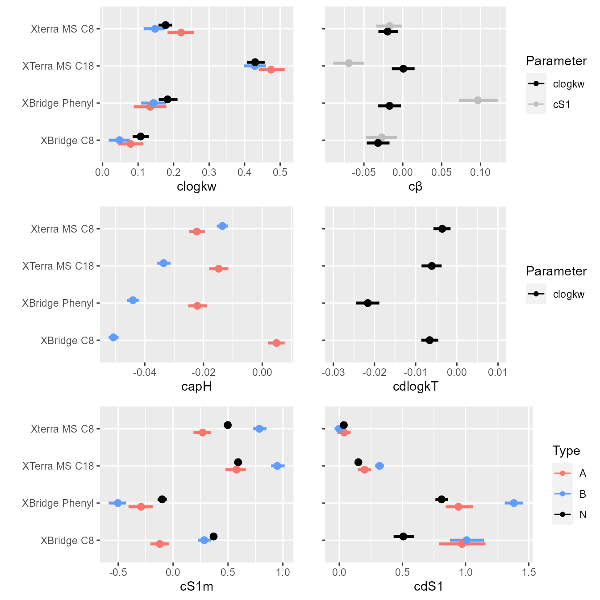
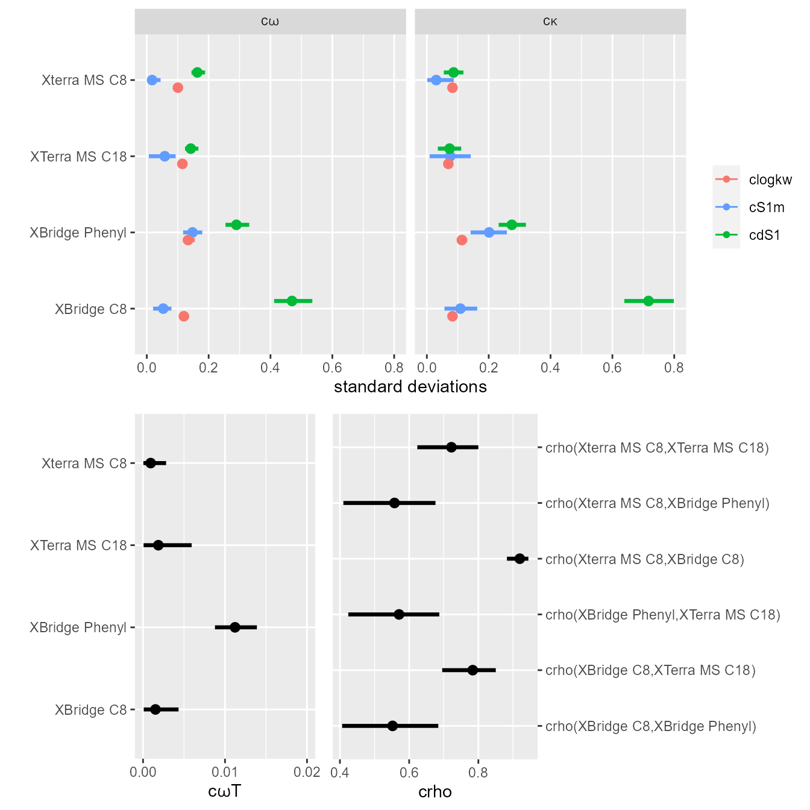
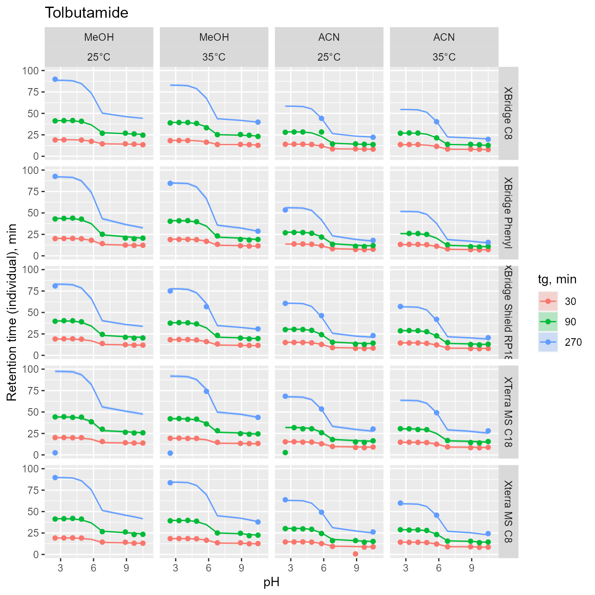
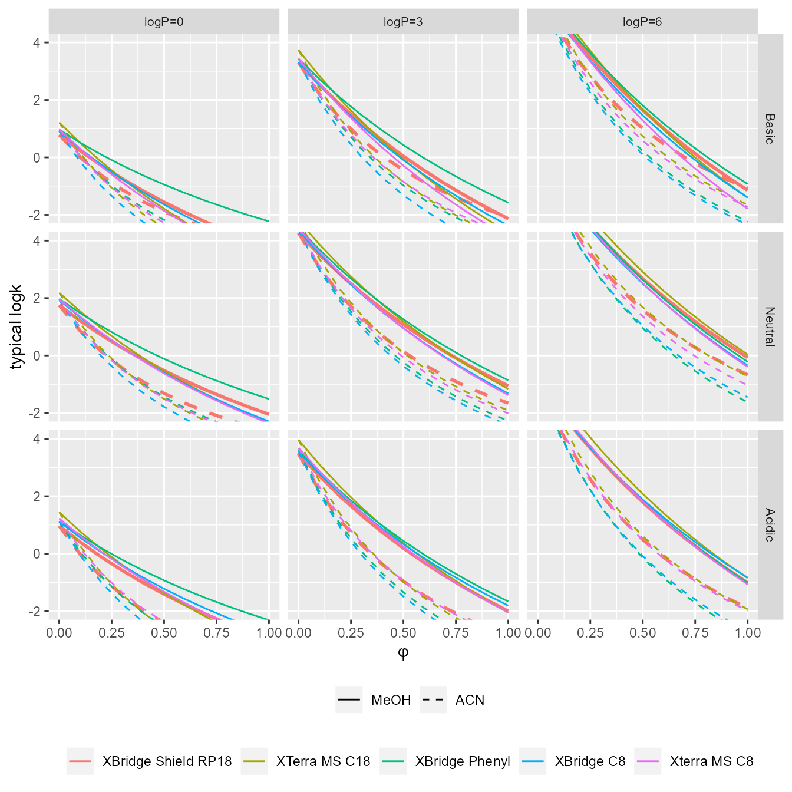
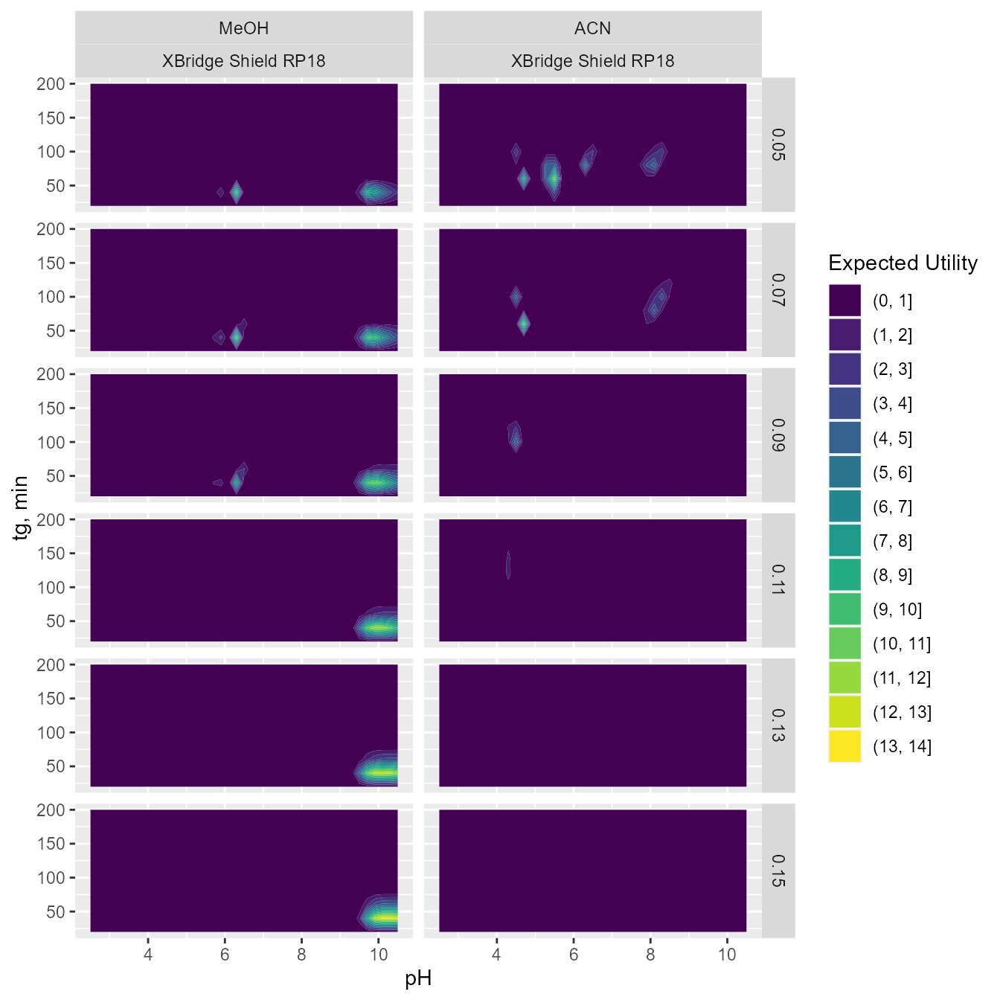
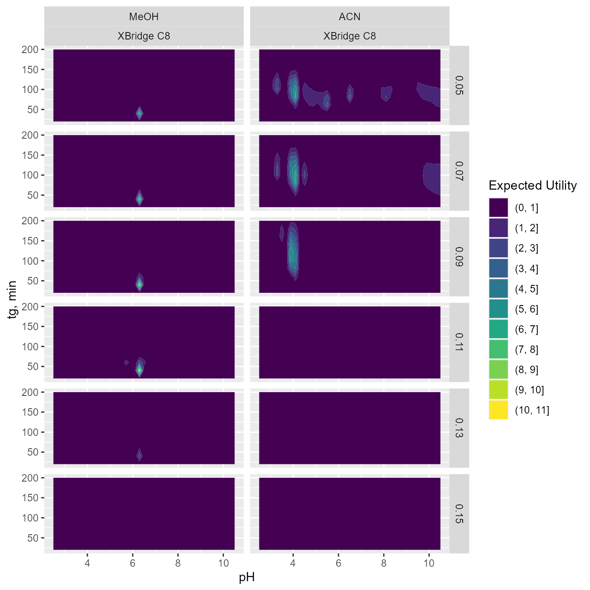
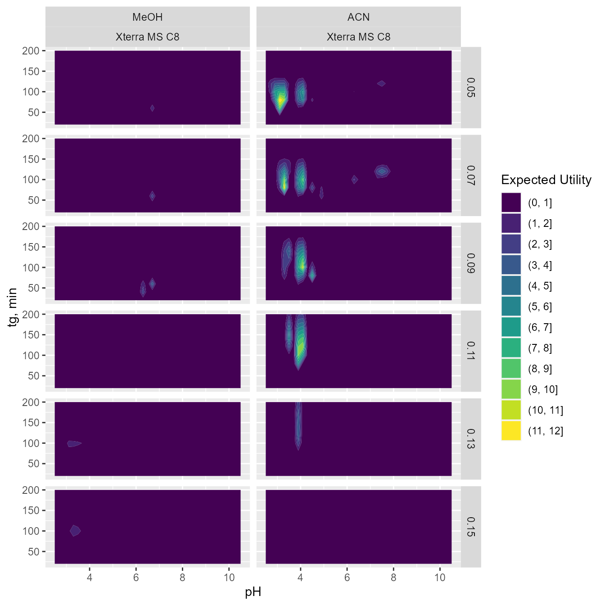
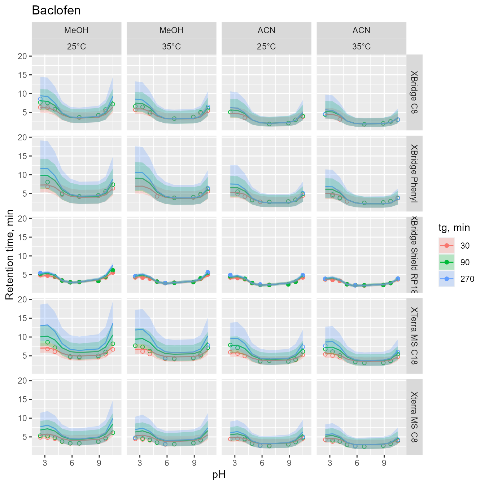
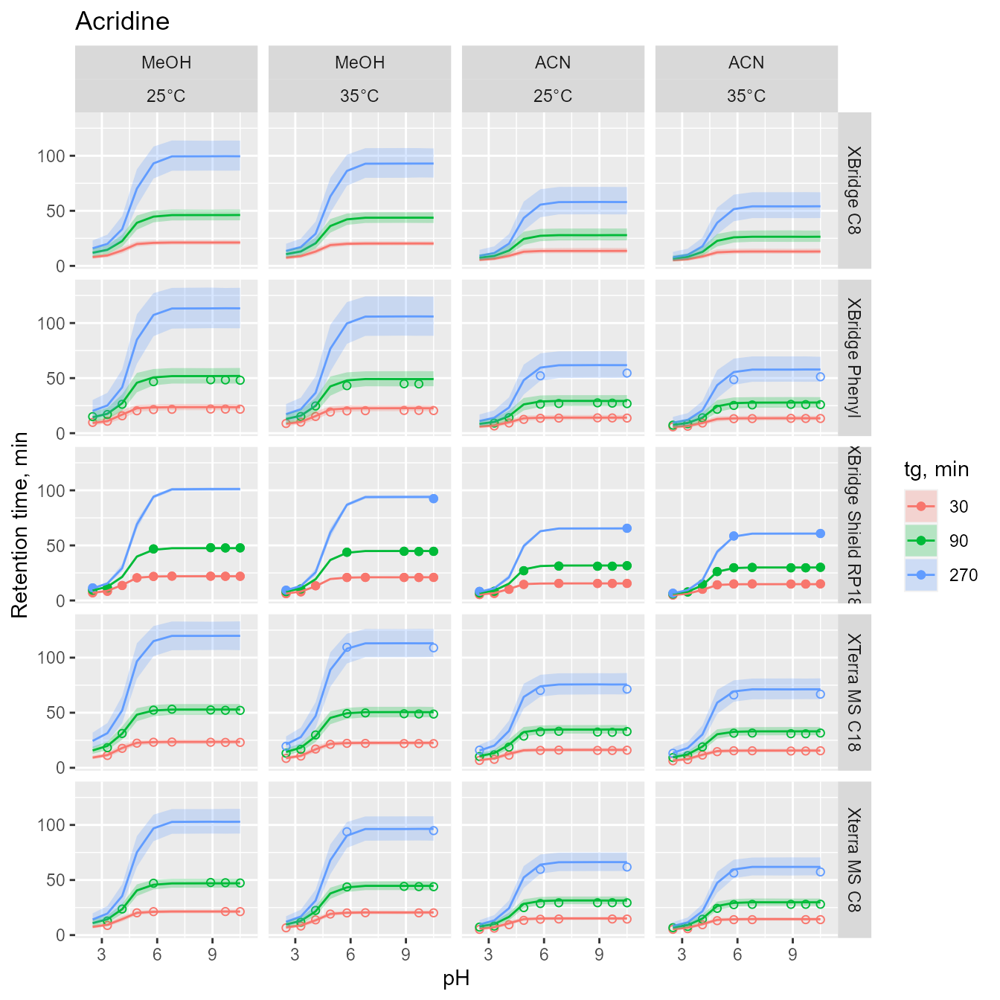
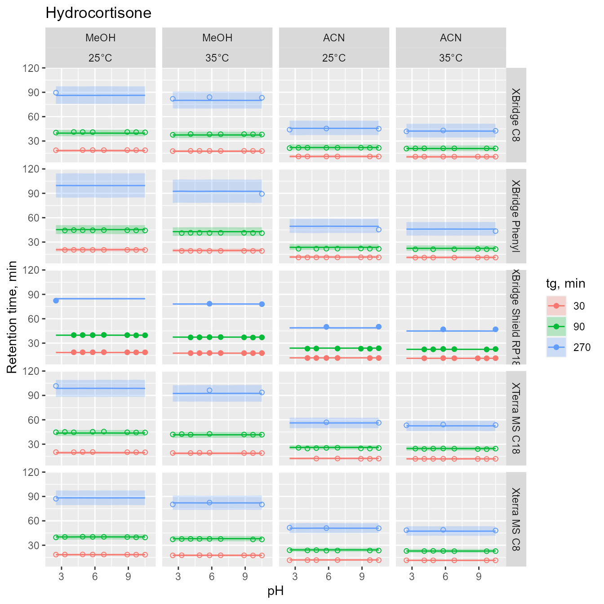

Code
library(pracma)
library(dplyr)
library(ggplot2)
require(gridExtra)
library(cmdstanr)
library(knitr)
library(reshape2)
library(bayesplot)
library(posterior)
library(GGally)
library(kableExtra)
set.seed(10271998) In this work we applied the previously developed Bayesian multilevel framework1, 2,3, 4 to characterize chromatographic gradient retention time datasets collected for a diverse set of analytes, five stationary phases, and a wide range of chromatographic conditions (pH, organic modifier, temperature, gradient program). Such datasets carry much information about chromatographic retention that, if extracted, can provide useful information, i.e. a detailed multidimensional characterization of chromatographic stationary phases and ability to predict retention (along with uncertainty) based on various number of preliminary experiments (e.g. to predict retention time for a set of analytes given no, or several measurements collected using a different stationary phase).
In this case study, we compared five RP-HPLC stationary phases (XBridge Shield RP18, XTerra MS C18, XBridge Phenyl, XBridge C8, Xterra MS C8) based on LC-MS/TOF data.
The data was collected using a mixture of 300 analytes and 84 gradient liquid chromatography experiments for each column. The experiments differed in gradient duration (30, 90, and 270 min) and pH of the mobile phase (from 2.5 to 10.5). Experiments were conducted in MeOH or ACN as organic modifiers and at two temperatures (\(\small 25^0C\) and \(\small 35^0C\)).
The molecular structure of the analytes was converted from SMILE format to MDL mol format using OpenBabel. The input molecules were then analyzed for the presence of approximately 204 functional groups and structural elements using Checkmol (version 0.5b N. Haider, University of Vienna, 2003-2018). Functional groups that were not present on any analyte and functional groups merging other simpler functional groups were excluded from the analysis. The lipophilicity (ACD log P), dissociation constant (pKalit) were added to the dataset. They were calculated using ACD/Labs program based on the structures of analytes generated from smiles strings.
The packages we will use are listed below.
library(pracma)
library(dplyr)
library(ggplot2)
require(gridExtra)
library(cmdstanr)
library(knitr)
library(reshape2)
library(bayesplot)
library(posterior)
library(GGally)
library(kableExtra)
set.seed(10271998) Data can be accessed via github (data folder) or osf.io repositories5, 6,7, 8,9.
We will begin with loading and merging the analyzed datasets:
data1 = read.csv('data/1-X_Bridge_Shield_C18_5cm.csv')
data2 = read.csv('data/1-XTerra_MS_C18.csv')
data3 = read.csv('data/1-X_Bridge_Phenyl.csv')
data4 = read.csv('data/1-XBridge_C8.csv')
data5 = read.csv('data/1-Xterra_C8.csv')
dataNames = read.csv('data/4-compounds-names.csv')
dataACD = read.csv('data/2-ACD-pKas-logP.csv')
dataACD$R = rowSums(dataACD[,3:7]<14) # No of dissociation steps
functional_groups = read.csv('data/6-checkmol-functional-groups.csv')
functional_groups_names = read.csv('data/Legend-checkmol-functional-group-names.csv')
# marge the data:
data1['Column'] <- 1
data2['Column'] <- 2
data3['Column'] <- 3
data4['Column'] <- 4
data5['Column'] <- 5
data1['ColumnName'] <- 'XBridge Shield RP18'
data2['ColumnName'] <- 'XTerra MS C18'
data3['ColumnName'] <- 'XBridge Phenyl'
data4['ColumnName'] <- 'XBridge C8'
data5['ColumnName'] <- 'Xterra MS C8'
data = rbind(data1, data2, data3, data4, data5)
data$Mod = as.character(data$Mod)
data$Mod2 = ifelse(data$Mod=="MeOH",1,2)
data<-data %>%
left_join(select(dataACD,METID,R))
rm(data1, data2, data3, data4, data5)The data requires some cleaning:
data <- data %>%
subset(Score>95) %>%
group_by(METID,EXPID,Column) %>%
slice(which.max(Score)) %>%
group_by(METID,Column) %>%
add_count() %>%
subset(n>42) %>%
group_by(METID) %>%
add_count() %>%
subset(nn>210) %>%
select(-n,-nn) %>%
ungroup()data <- data %>%
subset(METID!=72) %>% # dilevalol is repeated in the dataset
subset(!(tg==270 & Temp==25 & Mod2==1 & pH==5)) %>%
subset(!(tg==270 & Temp==25 & Mod2==1 & pH==9)) %>%
subset(R<=2) %>%
subset(!(METID %in% c(11,91,154,204,227,274,102,235,131,158,257,138,281,248,110,135,78,201,264,31,293,8,25,176,246)))%>%
select(-R)pKaslit = dataACD[,3:7] # pKa values as predicted by ACD
pKasliterror = dataACD[,25:29] # pKa error as predicted by ACD
chargesA = abs(dataACD[,13:18]) # number of ionized groups (anions)
chargesB = abs(dataACD[,19:24]) # number of ionized groups (cations)
charges = chargesA+chargesB # absolute charge
groupsA = (chargesA[,2:5] - chargesA[,1:4]) # acidic group
groupsB = -(chargesB[,2:5] - chargesB[,1:4]) # basic group
R = dataACD$R # number of dissociation steps
groups = groupsB-groupsA
logPobs = dataACD$logP
functional_groups=functional_groups[,2:ncol(functional_groups)]
# combine nr of caroboxylic acid and carboxyalic acid salt functional groups
# heterocyclic compounds with more than 6 heterocycles are treated as if they have six
functional_groups[,76]=functional_groups[,76]+functional_groups[,77]
functional_groups[which(functional_groups[,202]>5.5),202] = 6;
# exclude some functional groups
idx_included <- c(4,5,9,11,14,18,19,20,21,24,26,29,30,31,32,33,34,38,39,40,41,45,49,50,52,53,54,56,57,59,63,64,68,69,70,71,76,78,79,81,82,83,84,85,88,90,106,108,113,114,115,127,131,133,137,138,150,164,166,167)
functional_groups_names <- functional_groups_names[idx_included,]
functional_groups <- functional_groups[,idx_included]
rm(idx_included)maxR <- 2
idx <- which(dataACD$METID %in% data$METID)
# max two dissociation steps
pKaslit <- pKaslit[idx,1:maxR] # pKa values as predicted by ACD
pKasliterror <- pKasliterror[idx,1:maxR] # pKa error as predicted by ACD
chargesA <- chargesA[idx,1:(maxR+1)] # number of ionized groups (anions)
chargesB <- chargesB[idx,1:(maxR+1)] # number of ionized groups (cations)
charges <- charges[idx,1:(maxR+1)] # absolute charge
groupsA <- groupsA[idx,1:maxR] # acidic group
groupsB <- groupsB[idx,1:maxR] # basic group
R <- R[idx] # number of dissociation steps
logPobs <- logPobs[idx] # logP
nrfungroups=functional_groups[idx,]
totalnrgroups <- summarise_each(nrfungroups, funs(sum))
# remove functional groups not present in the dataset:
nrfungroups <- nrfungroups[,which(totalnrgroups!=0)]
functionalgroupsnames<- functional_groups_names[which(totalnrgroups!=0),]
totalnrgroups <- summarise_each(nrfungroups, funs(sum))
K <- ncol(nrfungroups)
# identify acidic groups
idxGroupsA <-which(groupsA!=0,arr.ind = T)
nGroupsA <- nrow(idxGroupsA)
pKaslitA<-pKaslit[idxGroupsA]
# identify basic groups
idxGroupsB <-which(groupsB!=0,arr.ind = T)
nGroupsB <- nrow(idxGroupsB)
pKaslitB<-pKaslit[idxGroupsB]
# groups dissociated in the whole pH range
idxB = which(chargesB[,3]==1)
idxA = which(chargesA[,1]==1)
nObs <- length(data$METID)
nAnalytes <- length(unique(data$METID))
nColumns<-length(unique(data$Column))
# variables used later to annotate graphs legend
temp.labs <- c("25\u00b0C","35\u00b0C")
names(temp.labs) <- c('25','35')
mod.labs <- c("ACN","MeOH")
names(mod.labs) <- c('2','1')
col.labs <- c("XBridge Shield RP18","XTerra MS C18", "XBridge Phenyl", "XBridge C8", "Xterra MS C8")
names(col.labs) <- c('1','2','3','4','5')
diss.labs <- c("r=1","r=2","r=3")
names(diss.labs) <- c('1','2','3')During the exploratory data analysis phase, we create a series of plots to better understand our data.
The following plots present retention time profiles for 6 analytes:
The vertical lines show ACD-based pKa values (solid line: acidic group; dotted line: basic group)
analyte_ID_sample <- c(9,17,33,58,140,180)
#analyte_ID_sample <-unique(data$METID) # if all
idx <- which(unique(data$METID) %in% analyte_ID_sample)
groups <- groupsB-groupsA
for(i in 1:length(analyte_ID_sample)){
p <- ggplot(data[which(data$METID %in% analyte_ID_sample[i]),])+
geom_jitter(aes(x = pHs, y = RT, color = as.factor(tg), shape=as.factor(ColumnName)), width =0.1, height=0.1)+
facet_grid(Temp~Mod2, labeller = labeller(Temp=temp.labs,Mod2=mod.labs))+
geom_vline(xintercept = pKaslit[idx[i],1],linetype=groups[idx[i],1]+2)+
geom_vline(xintercept = pKaslit[idx[i],2],linetype=groups[idx[i],2]+2)+
labs(title=paste(dataNames$Name[analyte_ID_sample[i]]),
x ="pH", y = "Retention time, min",
color = "tg, min",
shape = 'Column')+
xlim(2,11)
print(p)
ggsave(paste0("figures\\rawdata\\", paste(dataNames$Name[analyte_ID_sample[i]]), ".png"), plot=p, width = 20, height = 20, units = "cm", dpi = 300)
ggsave(paste0("figures\\rawdata\\", paste(dataNames$Name[analyte_ID_sample[i]]), ".pdf"), plot=p, width = 20, height = 20, units = "cm", dpi = 300)
}

p<-totalnrgroups %>% tidyr::gather("Name", "count", 1:54) %>%
ggplot(., aes(x=count, y=reorder(Name,count)))+
geom_point()+
labs(x="Number of functional groups", y="Functional group name")
ggsave(paste0("figures\\predictors\\", "functionalgroups", ".png"), plot=p, width = 20, height = 20, units = "cm")
ggsave(paste0("figures\\predictors\\", "functionalgroups", ".pdf"), plot=p, width = 20, height = 20, units = "cm")
print(p)
In this work \(\small z\) = 1,…,51530 denotes observation, \(\small i\)=1,…,141 analyte, \(\small col\)=1,…,5 column, \(\small m\)=1,…,2 organic modifier and \(\small r\)=1,…,\(\small R[i]\) dissociation step for \(\small i\)-th analyte. The observed retention times (\(\small t_{Robs,z}\)) were described using the following model:
\[ t_{Robs,z} \sim student\_t(\nu, t_{R,z} ,\sigma_{col[z],i[z]}), \]
where z denotes z-th observation and student_t denotes the Student’s t-distribution with the mean given by the predicted retention time \(\small t_{R,z}\), scale \(\small \sigma_{col,i}\) (analyte and column specific), and normality parameter \(\small \nu\) (set to 3).
Gradient retention time \(\small t_{R,z}\) was calculated utilizing the well-known integral equation:
\[ \int_0^{t_{R,z}-t_{0,z}-t_e}\frac{dt}{t_{0,z}\cdot ki_z(t) }=1, \]
where \(\small ki_z(t)\) denotes instantaneous isocratic retention factor corresponding to the mobile phase composition at time \(\small t\) at column inlet for analyte and chromatographic conditions corresponding to the z-th observation, \(\small t_{0,z}\) denotes column hold-up (dead) time and \(\small t_e\) denotes extra column-time. The numerical solution of this integral equation was carried out using method of steps with 4 and 10 steps for methanol and acetonitrile gradients. The following function described the relationship between the isocratic retention factor and pH for an i-th analyte with \(\small R[i]\) dissociation steps and \(\small R[i]+1\) forms.
\[ ki_z(t)=\frac{k_{z,i[z],1}(t)+\sum_{r=1}^{R[i[z]]} k_{z,i[z],r+1}(t) \cdot 10^{r\cdot pH_z(t)-\sum_{r=1}^{R[i]} pKa_{z,i[z],r}(t)} }{1+\sum_{r=1}^R 10^{r\cdot pH_z(t)-\sum_{r=1}^{R[i[z]]} pKa_{z,i[z],r}(t) } } \]
\(\small log(k_{z,i,r})\) was assumed to depend on the organic modifier content based on the Neue equation, on temperature assuming linear equation, and on the pH of the mobiles phase (for ionized forms of analytes).
\[ \begin{aligned} & log(k_{z,i,r}(t)) = logkw_{col[z],i,r} - \frac{S1_{m[z],col[z],i,r} \cdot (1+S2_{m[z]}) \cdot \varphi_z(t)}{1+S2_{m[z]} \cdot \varphi_z(t)} \\ & + apH_{col[z],m[z],i,r} \cdot (pH_z(t)-7) + dlogkT_{col[z],i} \cdot (T_z-25)/10, \end{aligned} \]
where \(\small logkw_{col,i,r}\) represents logarithm of retention factors extrapolated to 0% of organic modifier content for column \(\small col\), \(\small i\)-th analyte, and \(\small r\)-th analyte form; \(\small S1_{i,m,col,r}\) and \(\small S2_m\) are the slopes in the Neue equation for column \(\small col\), modifier \(\small m\), \(\small i\)-th analyte, and \(\small r\)-th analyte form. In this parametrization of the Neue equation, \(\small S1\) reflects the difference between logarithm of retention factors corresponding to water (0% of organic modifier content) and MeOH or ACN (100% of organic modifier content) as eluents. \(\small dlogkT_{col,i}\) denotes the change in \(\small logkw\) due to the increase in temperature by \(\small 10^oC\). \(\small apH_{col,m,i,r}\) denotes the pH effects on \(\small logkw\) for ionized forms of analyte.
Further we assume a linear relationship between \(\small pKa\) values and the organic modifier content:
\[ pKa_{z,i,r}(t)=pKaw_{i,r}+\alpha_{m[z],i,r}\cdot\varphi_z(t), \]
where \(\small pKa_{z,i,r}(t)\) denotes dissociation constant of an \(\small i\)-th analyte, and \(\small r\)-th dissociation step form and chromatographic conditions corresponding the z-th observation, \(\small pKaw_{i,r}\) denotes aqueous \(\small pKa\), and \(\alpha_{m,i,r}\) denotes the slope for \(\small m\)-th modifier, \(\small i\)-th analyte and \(\small r\)-th form. The linear relationships is generally valid for \(\small \varphi\) < 0.8.
The relationship between pH and the organic modifier content for various combinations of organic modifier and buffer was experimentally determined prior to the chromatographic analysis. The obtained relationships was then described using quadratic equations for each nominal pH, temperature and organic modifier:
\[ pH_z(t)=pHo_z+\alpha 1_z\cdot \varphi_z(t)+\alpha2_z\cdot {\varphi_z(t)}^2, \]
The individual values of \(\small logkw\), \(\small S1\) were first defined for the neutral form of an analyte in MeOH for the Xbridge Sheld RP18 column (denoted as \(\small logkwN_i\) and \(\small S1mN_i\)). The effect of ACN was described as \(\small dS1N_i\), thus S1 in ACN equals \(\small S1aN_i = S1mN_i +dS1N_i\), the effect of column (\(\small c=1,...,4\)) was described by \(\small clogkwN_{c,i}\), \(\small cS1mN_{c,i}\), and \(\small cdS1N_{c,i}\). The individual parameters for the neutral forms were described using the following equations:
\[ \begin{aligned} & \begin{bmatrix} logkwN_i \\ S1mN_i\\ \end{bmatrix} \sim MVN\left(\begin{bmatrix} \widehat{logkwN}+\beta_{logkwN} \cdot (logP_i-2.2) \\ \widehat{S1mN}+\beta_{S1mN} \cdot (logP_i-2.2) \\ \end{bmatrix}, \Omega \right) \\ & dS1N_i \sim N(\widehat{dS1N}, \omega_{dS1N})\\ & \Omega = diag([\omega_{logkwN},\omega_{S1mN}]) \cdot \begin{bmatrix} 1 & \rho \\ \rho & 1 \\ \end{bmatrix} \cdot diag([\omega_{logkwN},\omega_{S1mN}]) \\ & \begin{bmatrix} clogkwN_{1,i} \\ clogkwN_{2,i} \\ clogkwN_{3,i} \\ clogkwN_{4,i} \\ \end{bmatrix} \sim MVN\left(\begin{bmatrix} \widehat{clogkwN_1}+c\beta_{clogkwN,1} \cdot (logP_i-2.2) \\ \widehat{clogkwN_2}+c\beta_{clogkwN,2} \cdot (logP_i-2.2) \\ \widehat{clogkwN_3}+c\beta_{clogkwN,3} \cdot (logP_i-2.2) \\ \widehat{clogkwN_4}+c\beta_{clogkwN,4} \cdot (logP_i-2.2) \\ \end{bmatrix}, c\Omega \right) \\ & c\Omega = diag(c\omega_{clogkwN}) \cdot \begin{bmatrix} 1 & c\rho_{12} & c\rho_{13} & c\rho_{14} \\ c\rho_{21} & 1 & c\rho_{23} & c\rho_{24} \\ c\rho_{31} & c\rho_{32} & 1 & c\rho_{34} \\ c \rho_{41} & c\rho_{42} & c\rho_{43} & 1 \\ \end{bmatrix} \cdot diag(c\omega_{clogkwN}) \\ & cS1mN_{c,i} \sim N(\widehat{cS1mN_c}+c\beta_{cS1mN, c}\cdot (logP_i-2.2), c\omega_{cS1mN,c}) \text{ for c=1,...,4} \\ & cdS1N_{c,i} \sim N(\widehat{cdS1N_c}, c\omega_{cdS1N,c}) \text{ for c=1,...,4} \\ & dlogkT_{c,i} \sim N(\widehat{dlogkT_c},\omega_{T,c}) \text{ for c=1,...,4} \\ \end{aligned} \]
were MVN denotes the multivariate normal distribution; \(\small \widehat{logkwN}\), \(\small \widehat{S1mN}\), \(\small \widehat{dS1N}\) are the mean values of individual chromatographic parameters that correspond to a typical neutral analyte with \(\small logP\) =2.2 at \(\small 25^oC\) for Xbridge Shield RP18 stationary phase. \(\small \beta s\) are regression coefficients between the individual chromatographic parameters and the \(\small logP_i\). \(\small \omega\) denotes the standard deviation for between analyte variability (BAV). \(\small \widehat{dlogkT}\) denotes the effect of temperature for a typical analyte and \(\small \omega_T\) the standard deviation for between analyte variability for temperature effects. Similar set of equations was used for column effects. Here c denoted the column effect (4 differences with respect to the reference Xbridge Shield RP18 column).
The difference in retention between the ionized and the neutral form of an analyte was separately estimated for acids and bases for \(\small dlogkwA\), \(\small dlogkwB\), \(\small dS1mA\), \(\small dS1mB\), \(\small ddS1A\) and \(\small ddS1B\) parameters. Similar set of equations was used for column effects.
\[ \begin{aligned} & dlogkwA_a \sim N(\widehat{dlogkwA}, \kappa_{dlogkw}), \\ & dlogkwB_b \sim N(\widehat{dlogkwB}, \kappa_{dlogkw}), \\ & dS1mA_a \sim N(\widehat{dS1mA}, \kappa_{dS1m}), \\ & dS1mB_b \sim N(\widehat{dS1mB}, \kappa_{dS1m}), \\ & ddS1A_a \sim N(\widehat{ddS1A}, \kappa_{ddS1}), \\ & ddS1B_b \sim N(\widehat{ddS1B}, \kappa_{ddS1}), \\ & cdlogkwA_{c,a} \sim N(\widehat{cdlogkwA_{c}}, c\kappa_{cdlogkw,c}) \text{ for c=1,...,4}, \\ & cdlogkwB_{c,b} \sim N(\widehat{cdlogkwB_{c}}, c\kappa_{cdlogkw,c}) \text{ for c=1,...,4}, \\ & cdS1mA_{c,a} \sim N(\widehat{cdS1mA_{c}}, c\kappa_{cdS1m,c}) \text{ for c=1,...,4}, \\ & cdS1mB_{c,b} \sim N(\widehat{cdS1mB_{c}}, c\kappa_{cdS1m,c}) \text{ for c=1,...,4}, \\ & cddS1A_{c,a} \sim N(\widehat{cddS1A_{c}}, c\kappa_{cddS1,c}) \text{ for c=1,...,4}, \\ & cddS1B_{c,b} \sim N(\widehat{cddS1B_{c}}, c\kappa_{cddS1,c}) \text{ for c=1,...,4}. \\ \end{aligned} \]
where a=1,…,46 and b=1,…,120 denote the indexes of acidic and basic groups.
Similarly \(\small pKa\) an \(\small \alpha\) parameters were described separately for acids and based:
\[ \begin{aligned} & pKawA_{a} \sim N(pKaAlit_{a}, \tau_{pKaw}), \\ & pKawB_{b} \sim N(pKaBlit_{b}, \tau_{pKaw}), \\ & \alpha mA_{a} \sim N(\widehat{\alpha m A},\tau_{\alpha m}), \\ & \alpha mB_{b} \sim N(\widehat{\alpha m B},\tau_{\alpha m}), \\ & d\alpha A_{a} \sim N(\widehat{d\alpha A},\tau_{d\alpha}), \\ & d\alpha B_{b} \sim N(\widehat{d\alpha B},\tau_{d\alpha}). \end{aligned} \]
Further, we created the matrices containing the value of \(\small logkw\),\(\small S1\),\(\small S2\),\(\small pKaw\), and \(\small alpha\) for i-th analyte, col-th column, m-th modifier, and r-th dissociation step based on the value of neutral form and effects of column, organic modifier, and dissociation. This transformation was denoted as f(.). The exact procedure can be found in the stan code.
\[ \begin{aligned} & logkw_{col,i,r}= f(logkwN_i,clogkwN_{c,i},dlogkwA_{a},cdlogkwA_{c,a}, dlogkwB_{b}, cdlogkwB_{c,b},...) \\ & S1_{m,col,i,r} = f(S1mN_i,cS1mN_{c,i}, dS1mA_a, cdS1mA_{c,a}, S1mB_b, cdS1mB_{c,b}, ...\\ & dS1N_i, cdS1N_{c,i}, ddS1A_a, cddS1A_{c,a}, ddS1B_b, cddS1B_{c,b},...) \\ & apH_{m,col,i,r} = f(\widehat{apH_1},\widehat{capH_{c,1}},\widehat{apH_2},\widehat{capH_{c,2}},...) \\ & S2_{m} = 10^{f(\widehat{logS2m},\widehat{dlogS2},...)} \\ & pKaw_{i,r} = f(pKawA_{a},pKawB_{b},...) \\ & \alpha_{m,i,r} = f(\alpha mA_{a}, d\alpha A_{a}, \alpha mB_{b}, d\alpha B_{b},...) \end{aligned} \]
Three dots represent additional arguments. Residual error model assumes different parameters for each column and analyte:
\[ \begin{aligned} & log(\sigma_{col,i}) = f(log\sigma_i, clog\sigma_{c,i},...) \\ & log\sigma_i \sim N(log(m\sigma),s\sigma) \\ & clog\sigma_{c,i} \sim N(clogm\sigma_c,cs\sigma_c) \text{ for c=1,...,4}, \end{aligned} \]
The detailed description of parameters and used priors is provided in the following table (BAV denotes between analyte variability):
# to properly render in quarto: https://github.com/quarto-dev/quarto-cli/issues/3340
Name = c('$\\widehat{logkwN}$',
'$\\widehat{S1mN}$',
'$\\widehat{dS1N}$',
'$\\beta_{logkwN}$',
'$\\beta_{S1mN}$',
'$\\widehat{dlogkwA}$',
'$\\widehat{dlogkwB}$',
'$\\widehat{dS1mA}$',
'$\\widehat{dS1mB}$',
'$\\widehat{ddS1A}$',
'$\\widehat{ddS1B}$',
'$\\widehat{apHA}$',
'$\\widehat{apHB}$',
'$\\widehat{dlogkT}$',
'$\\omega_{logkwN}$',
'$\\omega_{S1mN}$',
'$\\omega_{dS1N}$',
'$\\rho$',
'$\\omega_T$',
'$\\kappa_{dlogkw}$',
'$\\kappa_{dS1m}$',
'$\\kappa_{ddS1}$',
'$\\widehat{clogkwN_c}$',
'$\\widehat{cS1mN_c}$',
'$\\widehat{cdS1N_c}$',
'$c\\beta_{logkwN,c}$',
'$c\\beta_{dS1mN,c}$',
'$\\widehat{cdlogkwA_{c}}$',
'$\\widehat{cdlogkwB_{c}}$',
'$\\widehat{cdS1mB_{c}}$',
'$\\widehat{cdS1mB_{c}}$',
'$\\widehat{cddS1A_{c}}$',
'$\\widehat{cddS1B_{c}}$',
'$\\widehat{cdlogkT_c}$',
'$capHA_{c}$',
'$capHB_{c}$',
'$c\\omega_{logkwN,c}$',
'$c\\rho$',
'$c\\omega_{S1mN,c}$',
'$c\\omega_{dS1N,c}$',
'$c\\kappa_{dlogkw,c}$',
'$c\\kappa_{dS1m,c}$',
'$c\\kappa_{ddS1,c}$',
'$c\\omega_{T,c}$',
'$\\widehat{logS2m}$',
'$\\widehat{dlogS2}$',
'$\\widehat{\\alpha mA}$',
'$\\widehat{\\alpha mB}$',
'$\\widehat{d\\alpha A}$',
'$\\widehat{d\\alpha B}$',
'$\\tau_{pKa}$',
'$\\tau_{\\alpha m}$',
'$\\tau_{d\\alpha}$',
'$m\\sigma$',
'$s\\sigma$',
'$clogmsigma_c$',
'$c\\sigma_c$')
StanName = c('logkwHat',
'S1mHat',
'dS1Hat',
'beta[1]',
'beta[2]',
'dlogkwHat[1]',
'dlogkwHat[2]',
'dS1mHat[1]',
'dS1mHat[2]',
'ddS1Hat[1]',
'ddS1Hat[2]',
'apH[1]',
'apH[2]',
'dlogkTHat',
'omega[1]',
'omega[2]',
'omega[3]',
'rho [2x2]',
'omegaT',
'kappa[1]',
'kappa[2]',
'kappa[3]',
'clogkwHat[c]',
'cS1mHat[c]',
'cdS1Hat[c]',
'cbeta[c,1]',
'cbeta[c,2]',
'cdlogkwHat[c,1]',
'cdlogkwHat[c,2]',
'cdS1mHat[c,1]',
'cdS1mHat[c,2]',
'cddS1Hat[c,1]',
'cddS1Hat[c,2]',
'cdlogkTHat[c]',
'capH[c,1]',
'capH[c,2]',
'comega[c,1]',
'crho [4x4]',
'comega[c,2]',
'comega[c,3]',
'ckappa[c,1]',
'ckappa[c,2]',
'ckappa[c,3]',
'comegaT[c]',
'logS2mHat',
'dlogS2Hat',
'alphamHat[1]',
'alphamHat[2]',
'dalphaHat[1]',
'dalphaHat[2]',
'tau[1]',
'tau[2]',
'tau[3]',
'msigma',
'ssigma',
'clogmsigma[c]',
'cssigma[c]')
Description = c('typical logkw [Neutral]',
'effect of MeOH on logkw [Neutral]',
'effect of ACN on S1m [Neutral]',
'effect of logP on logkw [Neutral]',
'effect of logP on S1m [Neutral]',
'effect of dissociation on logkw [Acids]',
'effect of dissociation on logkw [Bases]',
'effect of dissociation on S1m [Acids]',
'effect of dissociation on S1m [Bases]',
'effect of dissociation on dS1 [Acids]',
'effect of dissociation on dS1 [Bases]',
'effect of pH on logkw [Acids]',
'effect of pH on logkw [Bases]',
'effect of temperature on logkw',
'sd of BAV for logkw [Neutral]',
'sd of BAV for S1 [Neutral]',
'sd of BAV for dS1 [Neutral]',
'correlation logkw vs S1 [Neutral]',
'sd of BAV for dlogkT [Neutral]',
'sd of BAV for dlogkw [Acids and Bases]',
'sd of BAV for dS1m [Acids and Bases]',
'sd of BAV for ddS1 [Acids and Bases]',
'effect of column c on logkw [Neutral]',
'effect of column c on S1m [Neutral]',
'effect of column c on dS1 [Neutral]',
'effect of column c on beta[1] [Neutral]',
'effect of column c on beta[2] [Neutral]',
'effect of column c on dlogkw [Acids]',
'effect of column c on dlogkw [Bases]',
'effect of column c on dS1m [Acids]',
'effect of column c on dS1m [Bases]',
'effect of column c on ddS1 [Acids]',
'effect of column c on ddS1 [Bases]',
'effect of column c on dlogkwT',
'effect of column c on apH [Acids]',
'effect of column c on apH [Bases]',
'sd of BAV for clogkw [Neutral]',
'corr beetwen clogkw [Neutral]',
'sd of BAV for cS1 [Neutral]',
'sd of BAV for cdS1 [Neutral]',
'sd of BAV for cdlogkw [Acids and Bases]',
'sd of BAV for cdS1m [Acids and Bases]',
'sd of BAV for cddS1 [Acids and Bases]',
'sd of BAV for dlogkT',
'typical value of S2m (log10 scale)',
'effect of ACN on logS2m',
'effect of MeOH on pKa [Acids]',
'effect of MeOH on pKa [Bases]',
'effect of ACN on alpham [Acids]',
'effect of ACN on alpham [Bases]',
'sd of BAV for pKalit',
'sd of BAV for alpham',
'sd of BAV for dalpha',
'typical sd of residuals for XBridge',
'sd of BAV of residuals for XBridge',
'effect of column c on msigma (log scale)',
'sd of BAV of residuals for column c'
)
Priors = c('N(2.2,2)',
'N(4, 1)',
'N(1, 1)',
'N(1, 0.125)',
'N(0.5, 0.5)',
'N(-1, 0.125)',
'N(-1, 0.125)',
'N(0, 0.5)',
'N(0, 0.5)',
'N(0, 0.25)',
'N(0, 0.25)',
'N(0, 0.1)',
'N(0, 0.1)',
'N(-0.087, 0.022)',
'N+(0, 2)',
'N+(0, 2)',
'N+(0, 2)',
'LKJCORRN(0.75, 0.125)',
'N+(0, 0.022)',
'N+(0, 0.25)',
'N+(0, 0.25)',
'N+(0, 0.25)',
'N(0, 1)',
'N(0, 0.5)',
'N(0, 0.25)',
'N(0, 0.25)',
'N(0, 0.25)',
'N(0, 0.0625)',
'N(0, 0.0625)',
'N(0, 0.25)',
'N(0, 0.25)',
'N(0, 0.125)',
'N(0, 0.125)',
'N(0, 0.011)',
'N(0, 0.05)',
'N(0, 0.05)',
'N+(0, 1)',
'LKJ(2)',
'N+(0, 1)',
'N+(0, 1)',
'N+(0, 0.125)',
'N+(0, 0.125)',
'N+(0, 0.125)',
'N+(0, 0.011)',
'N(-0.7, 0.125);',
'N(1, 0.125);',
'N(2, 0.25)',
'N(-1, 0.25)',
'N(0, 0.125)',
'N(0, 0.125)',
'N+(0, 0.25)',
'N+(0, 0.125)',
'N+(0, 0.125)',
'N+(0,1)',
'N(0,1)',
'N+(0,0.125)',
'N+(0,0.125)')
table_of_parameters = data.frame(Name,StanName,Description,Priors)
table_of_parameters %>%
kableExtra::kbl(caption = "Desciption of model paramters", escape = FALSE, longtable=TRUE) %>%
kableExtra::kable_classic(full_width = F, html_font = "Cambria") %>%
kableExtra::kable_styling(latex_options = c("repeat_header")) %>%
kableExtra::pack_rows("XBridge Shield RP18 parameters", 1, 22) %>%
kableExtra::pack_rows("between column differences", 23, 44) %>%
kableExtra::pack_rows("S2", 45, 46) %>%
kableExtra::pack_rows("pKa", 47, 53) %>%
kableExtra::pack_rows("Residuals", 54, 57) %>%
unclass() %>%
cat()| Name | StanName | Description | Priors |
|---|---|---|---|
| XBridge Shield RP18 parameters | |||
| \(\widehat{logkwN}\) | logkwHat | typical logkw [Neutral] | N(2.2,2) |
| \(\widehat{S1mN}\) | S1mHat | effect of MeOH on logkw [Neutral] | N(4, 1) |
| \(\widehat{dS1N}\) | dS1Hat | effect of ACN on S1m [Neutral] | N(1, 1) |
| \(\beta_{logkwN}\) | beta[1] | effect of logP on logkw [Neutral] | N(1, 0.125) |
| \(\beta_{S1mN}\) | beta[2] | effect of logP on S1m [Neutral] | N(0.5, 0.5) |
| \(\widehat{dlogkwA}\) | dlogkwHat[1] | effect of dissociation on logkw [Acids] | N(-1, 0.125) |
| \(\widehat{dlogkwB}\) | dlogkwHat[2] | effect of dissociation on logkw [Bases] | N(-1, 0.125) |
| \(\widehat{dS1mA}\) | dS1mHat[1] | effect of dissociation on S1m [Acids] | N(0, 0.5) |
| \(\widehat{dS1mB}\) | dS1mHat[2] | effect of dissociation on S1m [Bases] | N(0, 0.5) |
| \(\widehat{ddS1A}\) | ddS1Hat[1] | effect of dissociation on dS1 [Acids] | N(0, 0.25) |
| \(\widehat{ddS1B}\) | ddS1Hat[2] | effect of dissociation on dS1 [Bases] | N(0, 0.25) |
| \(\widehat{apHA}\) | apH[1] | effect of pH on logkw [Acids] | N(0, 0.1) |
| \(\widehat{apHB}\) | apH[2] | effect of pH on logkw [Bases] | N(0, 0.1) |
| \(\widehat{dlogkT}\) | dlogkTHat | effect of temperature on logkw | N(-0.087, 0.022) |
| \(\omega_{logkwN}\) | omega[1] | sd of BAV for logkw [Neutral] | N+(0, 2) |
| \(\omega_{S1mN}\) | omega[2] | sd of BAV for S1 [Neutral] | N+(0, 2) |
| \(\omega_{dS1N}\) | omega[3] | sd of BAV for dS1 [Neutral] | N+(0, 2) |
| \(\rho\) | rho [2x2] | correlation logkw vs S1 [Neutral] | LKJCORRN(0.75, 0.125) |
| \(\omega_T\) | omegaT | sd of BAV for dlogkT [Neutral] | N+(0, 0.022) |
| \(\kappa_{dlogkw}\) | kappa[1] | sd of BAV for dlogkw [Acids and Bases] | N+(0, 0.25) |
| \(\kappa_{dS1m}\) | kappa[2] | sd of BAV for dS1m [Acids and Bases] | N+(0, 0.25) |
| \(\kappa_{ddS1}\) | kappa[3] | sd of BAV for ddS1 [Acids and Bases] | N+(0, 0.25) |
| between column differences | |||
| \(\widehat{clogkwN_c}\) | clogkwHat[c] | effect of column c on logkw [Neutral] | N(0, 1) |
| \(\widehat{cS1mN_c}\) | cS1mHat[c] | effect of column c on S1m [Neutral] | N(0, 0.5) |
| \(\widehat{cdS1N_c}\) | cdS1Hat[c] | effect of column c on dS1 [Neutral] | N(0, 0.25) |
| \(c\beta_{logkwN,c}\) | cbeta[c,1] | effect of column c on beta[1] [Neutral] | N(0, 0.25) |
| \(c\beta_{dS1mN,c}\) | cbeta[c,2] | effect of column c on beta[2] [Neutral] | N(0, 0.25) |
| \(\widehat{cdlogkwA_{c}}\) | cdlogkwHat[c,1] | effect of column c on dlogkw [Acids] | N(0, 0.0625) |
| \(\widehat{cdlogkwB_{c}}\) | cdlogkwHat[c,2] | effect of column c on dlogkw [Bases] | N(0, 0.0625) |
| \(\widehat{cdS1mB_{c}}\) | cdS1mHat[c,1] | effect of column c on dS1m [Acids] | N(0, 0.25) |
| \(\widehat{cdS1mB_{c}}\) | cdS1mHat[c,2] | effect of column c on dS1m [Bases] | N(0, 0.25) |
| \(\widehat{cddS1A_{c}}\) | cddS1Hat[c,1] | effect of column c on ddS1 [Acids] | N(0, 0.125) |
| \(\widehat{cddS1B_{c}}\) | cddS1Hat[c,2] | effect of column c on ddS1 [Bases] | N(0, 0.125) |
| \(\widehat{cdlogkT_c}\) | cdlogkTHat[c] | effect of column c on dlogkwT | N(0, 0.011) |
| \(capHA_{c}\) | capH[c,1] | effect of column c on apH [Acids] | N(0, 0.05) |
| \(capHB_{c}\) | capH[c,2] | effect of column c on apH [Bases] | N(0, 0.05) |
| \(c\omega_{logkwN,c}\) | comega[c,1] | sd of BAV for clogkw [Neutral] | N+(0, 1) |
| \(c\rho\) | crho [4x4] | corr beetwen clogkw [Neutral] | LKJ(2) |
| \(c\omega_{S1mN,c}\) | comega[c,2] | sd of BAV for cS1 [Neutral] | N+(0, 1) |
| \(c\omega_{dS1N,c}\) | comega[c,3] | sd of BAV for cdS1 [Neutral] | N+(0, 1) |
| \(c\kappa_{dlogkw,c}\) | ckappa[c,1] | sd of BAV for cdlogkw [Acids and Bases] | N+(0, 0.125) |
| \(c\kappa_{dS1m,c}\) | ckappa[c,2] | sd of BAV for cdS1m [Acids and Bases] | N+(0, 0.125) |
| \(c\kappa_{ddS1,c}\) | ckappa[c,3] | sd of BAV for cddS1 [Acids and Bases] | N+(0, 0.125) |
| \(c\omega_{T,c}\) | comegaT[c] | sd of BAV for dlogkT | N+(0, 0.011) |
| S2 | |||
| \(\widehat{logS2m}\) | logS2mHat | typical value of S2m (log10 scale) | N(-0.7, 0.125); |
| \(\widehat{dlogS2}\) | dlogS2Hat | effect of ACN on logS2m | N(1, 0.125); |
| pKa | |||
| \(\widehat{\alpha mA}\) | alphamHat[1] | effect of MeOH on pKa [Acids] | N(2, 0.25) |
| \(\widehat{\alpha mB}\) | alphamHat[2] | effect of MeOH on pKa [Bases] | N(-1, 0.25) |
| \(\widehat{d\alpha A}\) | dalphaHat[1] | effect of ACN on alpham [Acids] | N(0, 0.125) |
| \(\widehat{d\alpha B}\) | dalphaHat[2] | effect of ACN on alpham [Bases] | N(0, 0.125) |
| \(\tau_{pKa}\) | tau[1] | sd of BAV for pKalit | N+(0, 0.25) |
| \(\tau_{\alpha m}\) | tau[2] | sd of BAV for alpham | N+(0, 0.125) |
| \(\tau_{d\alpha}\) | tau[3] | sd of BAV for dalpha | N+(0, 0.125) |
| Residuals | |||
| \(m\sigma\) | msigma | typical sd of residuals for XBridge | N+(0,1) |
| \(s\sigma\) | ssigma | sd of BAV of residuals for XBridge | N(0,1) |
| \(clogmsigma_c\) | clogmsigma[c] | effect of column c on msigma (log scale) | N+(0,0.125) |
| \(c\sigma_c\) | cssigma[c] | sd of BAV of residuals for column c | N+(0,0.125) |
Multilevel modeling was performed in Stan software linked with R/ cmdstanr. For the inference we used 500 iterations, 1000 warmup iterations, and 8 Markov chains. The reduce_sum function was selected to accelerate the calculations. It works by parallelizing the execution of a single Stan chain across multiple cores. Convergence diagnostics were checked using Gelman−Rubin statistics and trace plots.
# create Stan data set:
datastruct <- with(data,
list(nAnalytes=length(unique(data$METID)),
nModifiers=length(unique(data$Mod2)),
nColumns=length(unique(data$Column)),
nObs=length(data$METID),
analyte=match(data$METID, unique(data$METID)),
modifier=match(data$Mod2, sort(unique(data$Mod2))),
column=match(data$Column, unique(data$Column)),
steps=4*(2-data$Mod2) + 10*(data$Mod2-1),
hplcparam=cbind(data$tg,data$td,data$to,data$te,data$fio,data$fik,data$Mod2-1,data$pHo,
data$alpha1,data$alpha2,(data$Temp-25)/10,data$Column-1),
logPobs=logPobs,
maxR=maxR,
R=R,
nGroupsA=nGroupsA,
nGroupsB=nGroupsB,
pKaslitA=pKaslitA,
pKaslitB=pKaslitB,
idxGroupsA=idxGroupsA,
idxGroupsB=idxGroupsB,
trobs=data$RT,
run_estimation=1))
# initialize the values for each variable in each chain:
init <- function(){
list( logkwHat = rnorm(1,2.2,2),
S1mHat = rnorm(1,4,1),
dS1Hat = rnorm(1,1,0.5),
dlogkwHat = rnorm(2,-1,0.125),
dS1mHat = rnorm(2,0,0.5),
ddS1Hat = rnorm(2,0,0.25),
logS2mHat = rnorm(1,-0.7,0.125),
dlogS2Hat = rnorm(1,1,0.125),
beta = rnorm(2,c(1,0.5),c(0.125,0.5)),
dlogkTHat = rnorm(1,-0.087,0.0022),
apH = rnorm(2,0,0.1),
alphamHat = rnorm(2,c(2,-1),0.25),
dalphaHat = rnorm(2,0,0.125),
tau = c(0.25,0.125,0.125)*exp(rnorm(3, 0, 0.2)),
omega = c(1,1,1)*exp(rnorm(3, 0, 0.5)),
rho = matrix(c(1, 0.75, 0.75, 1), nrow=2),
omegaT = rlnorm(1,log(0.022),0.2),
kappa = 0.25* exp(rnorm(3, 0, 0.2)),
clogkwHat = rnorm(nColumns-1,0,1),
cS1mHat = rnorm(nColumns-1,0,0.5),
cdS1Hat = rnorm(nColumns-1,0,0.25),
cdlogkwHat = matrix(rnorm(2*(nColumns-1),0,0.0625),nrow=(nColumns-1)),
cdS1mHat = matrix(rnorm(2*(nColumns-1),0,0.25),nrow=(nColumns-1)),
cddS1Hat = matrix(rnorm(2*(nColumns-1),0,0.125),nrow=(nColumns-1)),
cbeta = matrix(rnorm(2*(nColumns-1),0,0.25),nrow=(nColumns-1)),
cdlogkTHat = rnorm(nColumns-1,0,0.011),
capH = matrix(rnorm(2*(nColumns-1),0,0.05),nrow=(nColumns-1)),
comega = 0.1 * exp(matrix(rnorm(3*(nColumns-1),0,1),nrow=(nColumns-1))),
ckappa = 0.1 * exp(matrix(rnorm(3*(nColumns-1),0,0.125),nrow=(nColumns-1))),
comegaT = 0.1 * exp(matrix(rnorm(1*(nColumns-1),0,0.011),nrow=(nColumns-1))),
corr_L = diag(nColumns-1),
paramN = cbind(2+0.75*(logPobs-2.2), 4*matrix(1,nAnalytes,1)+0.5*(logPobs-2.2)),
dS1N = matrix(0,nAnalytes,1),
dlogkT = rnorm(nAnalytes,-0.0868,0.0217),
dlogkwA = matrix(-1,nGroupsA,1),
dlogkwB = matrix(-1,nGroupsB,1),
dS1mA = matrix(0,nGroupsA,1),
dS1mB = matrix(0,nGroupsB,1),
dS1A = matrix(0,nGroupsA,1),
dS1B = matrix(0,nGroupsB,1),
etaclogkwNStd = matrix(0,nColumns-1,nAnalytes),
etacS1mN = matrix(0,nColumns-1,nAnalytes),
etacdS1N = matrix(0,nColumns-1,nAnalytes),
etacdlogkT = matrix(0,nColumns-1,nAnalytes),
etacdlogkwA = matrix(0,nColumns-1,nGroupsA),
etacdlogkwB = matrix(0,nColumns-1,nGroupsB),
etacdS1mA = matrix(0,nColumns-1,nGroupsA),
etacdS1mB = matrix(0,nColumns-1,nGroupsB),
etacdS1A = matrix(0,nColumns-1,nGroupsA),
etacdS1B = matrix(0,nColumns-1, nGroupsB),
pKawA = pKaslitA,
pKawB = pKaslitB,
etaalphamA = matrix(0,nGroupsA,1),
etaalphamB = matrix(0,nGroupsB,1),
etadalphaA = matrix(0,nGroupsA,1),
etadalphaB = matrix(0,nGroupsB,1),
msigma = rlnorm(1,log(1),0.2),
ssigma = rlnorm(1,log(0.2),0.2),
logsigma = rnorm(nAnalytes,0,0.2),
clogmsigma = rnorm(nColumns-1,0,0.125),
cssigma = rlnorm(nColumns-1,log(0.125),0.125),
etaclogsigma = matrix(rnorm(nAnalytes*(nColumns-1),0,0.125),nrow=(nColumns-1))
)
}writeLines(readLines("stan/hplc-gra-fivecolumns.stan"))functions {
// credit http://srmart.in/informative-priors-for-correlation-matrices-an-easy-approach/
real lkj_corr_point_lower_tri_lpdf(matrix rho, real point_mu_lower,
real point_scale_lower) {
// works only for [2x2 matrix]
real lpdf = lkj_corr_lpdf(rho | 1)
+ normal_lpdf(rho[2, 1] | point_mu_lower, point_scale_lower);
return lpdf;
}
// pH and fi at a given time at column inlet
vector gra_state(real t, vector hplcparam) {
vector[2] sol;
real tg = hplcparam[1];
real td = hplcparam[2];
real fio = hplcparam[5];
real fik = hplcparam[6];
real pHo = hplcparam[8];
real alpha1 = hplcparam[9];
real alpha2 = hplcparam[10];
real fi;
fi = fio + (fik - fio) / tg * (t - td);
if (t < td) {
fi = fio;
} else if (t > tg + td) {
fi = fik;
}
sol[1] = fi;
sol[2] = pHo + alpha1 * fi + alpha2 * fi ^ 2;
return sol;
}
real funlnki(vector logkw, vector apH, vector S1, real S2, vector pKaw, vector alpha,
int nDiss, real fi, real pH) {
real lnki;
vector[3] logkix;
vector[2] pHmpKa;
logkix = log(10) *(logkw - S1*(1+S2) * fi / (1 + S2 * fi) + apH * (pH - 7));
pHmpKa = log(10) *(pH - (pKaw + alpha * fi));
if (nDiss == 0) {
lnki = logkix[1];
} else if (nDiss == 1) {
lnki = logkix[1] +
log1p_exp(pHmpKa[1] + logkix[2] - logkix[1]) -
log1p_exp(pHmpKa[1]);
} else if (nDiss == 2) {
lnki = logkix[1] +
log1p_exp(pHmpKa[1]+logkix[2]-logkix[1] + log1p_exp(pHmpKa[2]+logkix[3]-logkix[2])) -
log1p_exp(pHmpKa[1] + log1p_exp(pHmpKa[2]));
}
return lnki;
}
vector areaandslope(real dt, real lnki1, real lnki2, real invki1, real invki2) {
vector[2] cki_b;
real bo;
real cki;
if (invki2 > 1.001 * invki1) {
bo = (lnki1 - lnki2) / dt;
cki = (invki2 - invki1) / bo;
}
else if (invki1 > 1.001 * invki2) {
bo = (lnki2 - lnki1) / dt;
cki = (invki1 - invki2) / bo;
}
else {
bo = 0.001 / dt;
cki = dt * (invki2 + invki1) / 2;
}
cki_b[1] = cki;
cki_b[2] = bo;
return cki_b;
}
real chromgratrapz(int steps, vector logkw, vector apH, vector S1, real S2, vector pKaw,
vector alpha, int nDiss, vector hplcparam) {
real tg = hplcparam[1];
real td = hplcparam[2];
real to = hplcparam[3];
real te = hplcparam[4];
vector[1] sol;
real time1;
real time2;
vector[2] fipH1;
vector[2] fipH2;
real lnki1;
real lnki2;
real invki1;
real invki2;
vector[2] cki_b;
real cumki1;
real cumki2;
real bo;
real tr;
real dt;
dt = tg / steps;
time1 = 0;
time2 = td;
fipH1 = gra_state(time1, hplcparam);
lnki1 = funlnki(logkw, apH, S1, S2, pKaw, alpha, nDiss, fipH1[1], fipH1[2]);
lnki2=lnki1;
invki1 = exp(-lnki1)/to;
invki2 = invki1;
cumki1 = 0;
cumki2 = td*invki1;
bo = 0.001 / td;
for (x in 1 : steps) {
if (cumki2 >= 1) {
continue;
}
time1 = time2;
time2 += dt;
fipH2 = gra_state(time2, hplcparam);
lnki1 = lnki2;
lnki2 = funlnki(logkw, apH, S1, S2, pKaw, alpha, nDiss, fipH2[1], fipH2[2]);
invki1 = invki2;
invki2 = exp(-lnki2)/to;
cki_b = areaandslope(dt, lnki1, lnki2, invki1, invki2);
cumki1 = cumki2;
cumki2 += cki_b[1];
bo = cki_b[2];
}
if (cumki2 >= 1 && cumki1==0) {
tr = te+to+1/invki2;
} else if (cumki2 >= 1) {
tr = te+to+time1+log1p_exp(log((1-cumki1)*bo*to) + lnki1)/bo;
} else if (cumki2 < 1) {
tr = te+to+time2+(1-cumki2)/invki2;
}
return tr;
}
real partial_sum(array[] int ind, int start, int end,
vector trobs,
array[] int steps,
array[] vector hplcparam,
array[] int analyte,
array[] int column,
array[] int modifier,
array[] int R,
array[,] vector logkw,
array[,] vector apH,
array[, ,] vector S1,
array[,] real S2,
array[] vector pKaw,
array[,] vector alpha,
array[,] real dlogkT,
array[] vector sigma) {
real lp = 0;
for (z in start : end) {
real y_hat = chromgratrapz(steps[z],
logkw[analyte[z], column[z], : ] + dlogkT[analyte[z],column[z]] * hplcparam[z, 11],
apH[analyte[z], column[z], : ],
S1[analyte[z], modifier[z], column[z], : ],
S2[modifier[z], column[z]],
pKaw[analyte[z], : ],
alpha[analyte[z],modifier[z], : ],
R[analyte[z]],
hplcparam[z]);
lp = lp + student_t_lpdf(trobs[z] | 3, y_hat, sigma[analyte[z],column[z]]);
}
return lp;
}
}
data {
int nAnalytes; // number of analytes
int nColumns; // number of columns
int nModifiers; // number of org. modifiers
int nObs; // number of observations
array[nObs] int analyte; // analyte indexes
array[nObs] int column; // column indexes
array[nObs] int modifier; // modifier indexes
array[nObs] int<lower=1> steps; // steps for gradient retention time aproximation
array[nObs] vector[12] hplcparam; // [tg, td, to, te, fio, fik, org modifier, pHo, alpha1, alpha2, (temp-25)/10, column]
vector[nAnalytes] logPobs;
int<lower=0, upper=2> maxR; //
array[nAnalytes] int<lower=0, upper=2> R;
int<lower=1> nGroupsA;
int<lower=1> nGroupsB;
vector[nGroupsA] pKaslitA;
vector[nGroupsB] pKaslitB;
array[nGroupsA,2] int idxGroupsA;
array[nGroupsB,2] int idxGroupsB;
vector[nObs] trobs; // observed retention factors
int<lower=0, upper=1> run_estimation; // 0 for prior predictive, 1 for estimation
}
transformed data {
int grainsize = 1;
array[nObs] int ind = rep_array(1, nObs);
}
parameters {
real logkwHat; // typical logkw [Neutral]
real S1mHat; // effect of MeOH on logkw [Neutral]
real dS1Hat; // effect of ACN on S1m [Neutral]
array[2] real dlogkwHat; // effect of dissociation on logkw [Acids, Bases]
array[2] real dS1mHat; // effect of dissociation on S1m [Acids, Bases]
array[2] real ddS1Hat; // effect of dissociation on dS1 [Acids, Bases]
real logS2mHat; // typical value of S2m (log10 scale)
real dlogS2Hat; // effect of ACN on logS2m
vector[2] beta; // effect of logP on logkw and S1m
real dlogkTHat; // effect of temperature on logkw
vector[2] apH; // effect of pH on logkw [Acids, Bases]
array[2] real alphamHat; // effect of MeOH on pKa [Acids, Bases]
array[2] real dalphaHat; // effect of ACN on alpham [Acids, Bases]
vector<lower=0>[3] tau; // sd for between analyte variability of pKa's
vector<lower=0>[3] omega; // sd of BAV [logkw,S1m, dS1]
corr_matrix[2] rho; // correlation matrix [logkw vs. S1m]
real<lower=0> omegaT; // sd of BAV [dlogkT]
vector<lower=0>[3] kappa; // sd of BAV [dlogkw,dS1m,ddS1]
// 2nd column
vector[nColumns-1] clogkwHat; // effect of column on logkw [Neutral]
vector[nColumns-1] cS1mHat; // effect of column on S1m [Neutral]
vector[nColumns-1] cdS1Hat; // effect of column on dS1 [Neutral]
matrix[nColumns-1,2] cdlogkwHat; // effect of column on logkw [Acids, Bases]
matrix[nColumns-1,2] cdS1mHat; // effect of column on dS1m [Acids, Bases]
matrix[nColumns-1,2] cddS1Hat; // effect of column on ddS1 [Acids, Bases]
matrix[nColumns-1,2] cbeta;
vector[nColumns-1] cdlogkTHat; // effect of column on dlogkTHat
matrix[nColumns-1,2] capH; // effect of column on apH [Acids, Bases]
matrix<lower=0>[nColumns-1,3] comega; // sd of BAV [clogkw,cS1m,cdS1]
vector<lower=0>[nColumns-1] comegaT; // sd of BAV [cdlogkT]
matrix<lower=0>[nColumns-1,3] ckappa; // sd of BAV [cdlogkw,cdS1m,cddS1]
cholesky_factor_corr[nColumns-1] corr_L; // cholesky factor correlation matrix
// 1st column
array[nAnalytes] vector[2] paramN;
vector[nAnalytes] dS1N;
vector[nAnalytes] dlogkT;
vector[nGroupsA] dlogkwA;
vector[nGroupsB] dlogkwB;
vector[nGroupsA] dS1mA;
vector[nGroupsB] dS1mB;
vector[nGroupsA] dS1A;
vector[nGroupsB] dS1B;
// 2nd column
matrix[nColumns-1, nAnalytes] etaclogkwNStd;
array[nColumns-1] vector[nAnalytes] etacS1mN;
array[nColumns-1] vector[nAnalytes] etacdS1N;
array[nColumns-1] vector[nAnalytes] etacdlogkT;
array[nColumns-1] vector[nGroupsA] etacdlogkwA;
array[nColumns-1] vector[nGroupsB] etacdlogkwB;
array[nColumns-1] vector[nGroupsA] etacdS1mA;
array[nColumns-1] vector[nGroupsB] etacdS1mB;
array[nColumns-1] vector[nGroupsA] etacdS1A;
array[nColumns-1] vector[nGroupsB] etacdS1B;
// Dissociation
vector[nGroupsA] pKawA;
vector[nGroupsB] pKawB;
vector[nGroupsA] etaalphamA;
vector[nGroupsB] etaalphamB;
vector[nGroupsA] etadalphaA;
vector[nGroupsB] etadalphaB;
// residual variability for the 1st and 2nd column
real<lower=0> msigma; // typical sigma for the 1st column]
real<lower=0> ssigma;
vector[nAnalytes] logsigma;
vector[nColumns-1] clogmsigma; // effect of column on log(msigma)]
vector<lower=0>[nColumns-1] cssigma; ; //sd of residual [1st,2nd column]
array[nColumns-1] vector[nAnalytes] etaclogsigma;
}
transformed parameters {
cov_matrix[2] Omega;
array[nAnalytes] vector[3] miu;
array[nAnalytes,3] vector[nColumns-1] cmiu;
array[nAnalytes,nColumns] vector[maxR + 1] logkwx;
array[nAnalytes,nModifiers, nColumns] vector[maxR + 1] S1x;
array[nModifiers,nColumns] real S2x;
array[nAnalytes,nColumns] vector[maxR + 1] apHx;
array[nAnalytes,nModifiers] vector[maxR] alphax;
array[nAnalytes, nColumns] real dlogkTx;
array[nAnalytes] vector[maxR] pKawx;
array[nAnalytes] vector[nColumns] sigmax;
array[nColumns-1] vector[nAnalytes] clogkwN;
matrix[nColumns-1, nAnalytes] etaclogkwN;
array[nColumns-1] vector[nAnalytes] cS1mN;
array[nColumns-1] vector[nAnalytes] cdS1N;
array[nColumns-1] vector[nGroupsA] cdlogkwA;
array[nColumns-1] vector[nGroupsB] cdlogkwB;
array[nColumns-1] vector[nGroupsA] cdS1mA;
array[nColumns-1] vector[nGroupsB] cdS1mB;
array[nColumns-1] vector[nGroupsA] cdS1A;
array[nColumns-1] vector[nGroupsB] cdS1B;
array[nColumns-1] vector[nAnalytes] cdlogkT;
array[nColumns-1] vector[nAnalytes] clogsigma;
vector[nGroupsA] alphamA;
vector[nGroupsB] alphamB;
vector[nGroupsA] dalphaA;
vector[nGroupsB] dalphaB;
Omega = quad_form_diag(rho, omega[1 : 2]); // diag_matrix(omega) * rho * diag_matrix(omega)
for (i in 1 : nAnalytes) {
miu[i, 1] = logkwHat + beta[1] * (logPobs[i] - 2.2);
miu[i, 2] = S1mHat + beta[2] * (logPobs[i] - 2.2);
miu[i, 3] = dS1Hat;
}
for (i in 1 : nAnalytes) {
for (c in 1 : (nColumns-1)) {
cmiu[i, 1, c] = clogkwHat[c] + cbeta[c,1] * (logPobs[i] - 2.2);
cmiu[i, 2, c] = cS1mHat[c] + cbeta[c,2] * (logPobs[i] - 2.2);
cmiu[i, 3, c] = cdS1Hat[c];
}}
// Matt's trick to use unit scale
etaclogkwN = diag_pre_multiply(comega[,1], corr_L * etaclogkwNStd);
for (i in 1 : nAnalytes) {
logkwx[i, 1, : ] = paramN[i,1]*[1,1,1]';
for (c in 1 : (nColumns-1)) {
clogkwN[c,i] = cmiu[i, 1, c] + etaclogkwN[c,i];
logkwx[i, c+1, : ] = (paramN[i,1]+clogkwN[c,i])*[1,1,1]';
}}
for (d in 1 : nGroupsA) {
logkwx[idxGroupsA[d,1], 1, 1+idxGroupsA[d,2]] += dlogkwA[d];
if (idxGroupsA[d,2]==1) {
logkwx[idxGroupsA[d,1], 1, 3] += dlogkwA[d];
}
for (c in 1 : (nColumns-1)) {
cdlogkwA[c,d] = cdlogkwHat[c,1] + ckappa[c,1]*etacdlogkwA[c,d];
logkwx[idxGroupsA[d,1], c+1, 1+idxGroupsA[d,2]] += dlogkwA[d]+cdlogkwA[c,d];
if (idxGroupsA[d,2]==1) {
logkwx[idxGroupsA[d,1], c+1, 3] += dlogkwA[d]+cdlogkwA[c,d];
}}}
for (d in 1 : nGroupsB) {
logkwx[idxGroupsB[d,1], 1, idxGroupsB[d,2]] += dlogkwB[d];
if (idxGroupsB[d,2]==2) {
logkwx[idxGroupsB[d,1], 1, 1] += dlogkwB[d];
}
for (c in 1 : (nColumns-1)) {
cdlogkwB[c,d] = cdlogkwHat[c,2]+ ckappa[c,1]*etacdlogkwB[c,d];
logkwx[idxGroupsB[d,1], c+1, idxGroupsB[d,2]] += dlogkwB[d]+cdlogkwB[c,d];
if (idxGroupsB[d,2]==2) {
logkwx[idxGroupsB[d,1], c+1, 1] += dlogkwB[d]+cdlogkwB[c,d];
}}}
for (i in 1 : nAnalytes) {
apHx[i, 1, : ] = [0,0,0]';
for (c in 1 : (nColumns-1)) {
apHx[i, c+1, : ] = [0,0,0]';
}}
for (d in 1 : nGroupsA) {
apHx[idxGroupsA[d,1], 1, 1+idxGroupsA[d,2]] += apH[1];
if (idxGroupsA[d,2]==1) {
apHx[idxGroupsA[d,1], 1, 3] += apH[1];
}
for (c in 1 : (nColumns-1)) {
apHx[idxGroupsA[d,1], c+1, 1+idxGroupsA[d,2]] += apH[1]+capH[c,1];
if (idxGroupsA[d,2]==1) {
apHx[idxGroupsA[d,1], c+1, 3] += apH[1]+capH[c,1];
}}}
for (d in 1 : nGroupsB) {
apHx[idxGroupsB[d,1], 1, idxGroupsB[d,2]] += apH[2];
if (idxGroupsB[d,2]==2) {
apHx[idxGroupsB[d,1], 1, 1] += apH[2];
}
for (c in 1 : (nColumns-1)) {
apHx[idxGroupsB[d,1], c+1, idxGroupsB[d,2]] += apH[2]+capH[c,2];
if (idxGroupsB[d,2]==2) {
apHx[idxGroupsB[d,1], c+1, 1] += apH[2]+capH[c,2];
}}}
for (i in 1 : nAnalytes) {
S1x[i, 1, 1, : ] = paramN[i,2]*[1,1,1]';
S1x[i, 2, 1, : ] = paramN[i,2]*[1,1,1]' + dS1N[i];
for (c in 1 : (nColumns-1)) {
cS1mN[c,i] = cmiu[i,2,c] + comega[c,2]*etacS1mN[c,i];
cdS1N[c,i] = cmiu[i,3,c] + comega[c,3]*etacdS1N[c,i];
S1x[i, 1, c+1, : ] = (paramN[i,2]+cS1mN[c,i])*[1,1,1]' ;
S1x[i, 2, c+1, : ] = (paramN[i,2]+cS1mN[c,i])*[1,1,1]' + (dS1N[i]+cdS1N[c,i]);
}}
for (d in 1 : nGroupsA) {
S1x[idxGroupsA[d,1], 1, 1, 1+idxGroupsA[d,2]] += dS1mA[d];
S1x[idxGroupsA[d,1], 2, 1, 1+idxGroupsA[d,2]] += dS1mA[d]+dS1A[d];
if (idxGroupsA[d,2]==1) {
S1x[idxGroupsA[d,1], 1, 1, 3] += dS1mA[d];
S1x[idxGroupsA[d,1], 2, 1, 3] += dS1mA[d]+dS1A[d];
}
for (c in 1 : (nColumns-1)) {
cdS1mA[c,d]= cdS1mHat[c,1] + ckappa[c,2]*etacdS1mA[c,d];
cdS1A[c,d] = cddS1Hat[c,1] + ckappa[c,3]*etacdS1A[c,d];
S1x[idxGroupsA[d,1], 1, c+1, 1+idxGroupsA[d,2]] += dS1mA[d] +cdS1mA[c,d];
S1x[idxGroupsA[d,1], 2, c+1, 1+idxGroupsA[d,2]] += dS1mA[d]+dS1A[d]+cdS1mA[c,d]+cdS1A[c,d];
if (idxGroupsA[d,2]==1) {
S1x[idxGroupsA[d,1], 1, c+1, 3] += dS1mA[d] +cdS1mA[c,d];
S1x[idxGroupsA[d,1], 2, c+1, 3] += dS1mA[d]+dS1A[d]+cdS1mA[c,d]+cdS1A[c,d];
}}}
for (d in 1 : nGroupsB) {
S1x[idxGroupsB[d,1], 1, 1, idxGroupsB[d,2]] += dS1mB[d];
S1x[idxGroupsB[d,1], 2, 1, idxGroupsB[d,2]] += dS1mB[d]+dS1B[d];
if (idxGroupsB[d,2]==2) {
S1x[idxGroupsB[d,1], 1, 1, 1] += dS1mB[d];
S1x[idxGroupsB[d,1], 2, 1, 1] += dS1mB[d]+dS1B[d];
}
for (c in 1 : (nColumns-1)) {
cdS1mB[c,d]= cdS1mHat[c,2] + ckappa[c,2]*etacdS1mB[c,d];
cdS1B[c,d] = cddS1Hat[c,2] + ckappa[c,3]*etacdS1B[c,d];
S1x[idxGroupsB[d,1], 1, c+1, idxGroupsB[d,2]] += dS1mB[d] +cdS1mB[c,d];
S1x[idxGroupsB[d,1], 2, c+1, idxGroupsB[d,2]] += dS1mB[d]+dS1B[d]+cdS1mB[c,d]+cdS1B[c,d];
if (idxGroupsB[d,2]==2) {
S1x[idxGroupsB[d,1], 1, c+1, 1] += dS1mB[d] +cdS1mB[c,d];
S1x[idxGroupsB[d,1], 2, c+1, 1] += dS1mB[d]+dS1B[d]+cdS1mB[c,d]+cdS1B[c,d];
}}}
S2x[1,1] = 10^(logS2mHat);
S2x[2,1] = 10^(logS2mHat + dlogS2Hat);
for (c in 1 : (nColumns-1)) {
S2x[1,c+1] = S2x[1,1];
S2x[2,c+1] = S2x[2,1];
}
for (i in 1 : nAnalytes) {
dlogkTx[i, 1] = dlogkT[i];
for (c in 1 : (nColumns-1)) {
cdlogkT[c,i] = cdlogkTHat[c]+comegaT[c]*etacdlogkT[c,i];
dlogkTx[i, c+1] = dlogkT[i] + cdlogkT[c,i];
}}
for (i in 1 : nAnalytes) {
pKawx[i, : ] = [0,0]';
alphax[i, 1, : ] = [0,0]';
alphax[i, 2, : ] = [0,0]';
}
for (d in 1 : nGroupsA) {
alphamA[d] = alphamHat[1] + tau[2]*etaalphamA[d];
dalphaA[d] = dalphaHat[1] + tau[3]*etadalphaA[d];
pKawx[idxGroupsA[d,1], idxGroupsA[d,2]] = pKawA[d];
alphax[idxGroupsA[d,1], 1, idxGroupsA[d,2]]= alphamA[d];
alphax[idxGroupsA[d,1], 2, idxGroupsA[d,2]]= alphamA[d]+dalphaA[d];
}
for (d in 1 : nGroupsB) {
alphamB[d] = alphamHat[2] + tau[2]*etaalphamB[d];
dalphaB[d] = dalphaHat[2] + tau[3]*etadalphaB[d];
pKawx[idxGroupsB[d,1], idxGroupsB[d,2]] = pKawB[d];
alphax[idxGroupsB[d,1], 1, idxGroupsB[d,2]]= alphamB[d];
alphax[idxGroupsB[d,1], 2, idxGroupsB[d,2]]= alphamB[d]+dalphaB[d];
}
for (i in 1 : nAnalytes) {
sigmax[i, 1] = exp(logsigma[i]);
for (c in 1 : (nColumns-1)) {
clogsigma[c,i] = clogmsigma[c] + cssigma[c]*etaclogsigma[c,i];
sigmax[i, c+1] = exp(logsigma[i]+clogsigma[c,i]);
}}
}
model {
logkwHat ~ normal(2.2, 2);
S1mHat ~ normal(4, 1);
dS1Hat ~ normal(1, 0.5);
dlogkwHat ~ normal(-1, 0.125);
dS1mHat ~ normal(0, 0.5);
ddS1Hat ~ normal(0, 0.25);
logS2mHat ~ normal(-0.7, 0.125);
dlogS2Hat ~ normal(1, 0.125);
beta[{1}] ~ normal(1, 0.125);
beta[{2}] ~ normal(0.5, 0.5);
dlogkTHat ~ normal(-0.087, 0.022);
apH ~ normal(0, 0.1);
alphamHat[{1}] ~ normal(2, 0.25);
alphamHat[{2}] ~ normal(-1, 0.25);
dalphaHat ~ normal(0, 0.125);
tau[{1}] ~ normal(0, 0.25);
tau[{2,3}] ~ normal(0, 0.125);
omega ~ normal(0, 2);
rho ~ lkj_corr_point_lower_tri(0.75, 0.125);
omegaT ~ normal(0, 0.022);
kappa ~ normal(0, 0.25);
clogkwHat ~ normal(0, 1);
cS1mHat ~ normal(0, 0.5);
cdS1Hat ~ normal(0, 0.25);
to_vector(cdlogkwHat) ~ normal(0, 0.0625);
to_vector(cdS1mHat) ~ normal(0, 0.25);
to_vector(cddS1Hat) ~ normal(0, 0.125);
to_vector(cbeta) ~ normal(0, 0.25);
cdlogkTHat ~ normal(0, 0.011);
to_vector(capH) ~ normal(0, 0.05);
to_vector(comega) ~ normal(0, 0.5);
comegaT ~ normal(0, 0.011);
to_vector(ckappa) ~ normal(0, 0.125);
corr_L~lkj_corr_cholesky(2.0);
for (i in 1 : nAnalytes) {
paramN[i] ~ multi_normal(miu[i,1:2], Omega);
}
dS1N ~ normal(miu[,3], omega[3]);
dlogkT ~ normal(dlogkTHat, omegaT);
dlogkwA ~ normal(dlogkwHat[1], kappa[1]);
dlogkwB ~ normal(dlogkwHat[2], kappa[1]);
dS1mA ~ normal(dS1mHat[1], kappa[2]);
dS1mB ~ normal(dS1mHat[2], kappa[2]);
dS1A ~ normal(ddS1Hat[1], kappa[3]);
dS1B ~ normal(ddS1Hat[2], kappa[3]);
to_vector(etaclogkwNStd) ~ normal(0, 1);
for (c in 1 : (nColumns-1)) {
etacS1mN[c] ~ normal(0,1);
etacdS1N[c] ~ normal(0,1);
etacdlogkT[c] ~ normal(0,1);
etacdlogkwA[c] ~ normal(0,1);
etacdlogkwB[c] ~ normal(0,1);
etacdS1mA[c] ~ normal(0,1);
etacdS1mB[c] ~ normal(0,1);
etacdS1A[c] ~ normal(0,1);
etacdS1B[c] ~ normal(0,1);
}
pKawA ~ normal(pKaslitA, tau[1]);
pKawB ~ normal(pKaslitB, tau[1]);
etaalphamA ~ normal(0,1);
etaalphamB ~ normal(0,1);
etadalphaA ~ normal(0,1);
etadalphaB ~ normal(0,1);
msigma ~ normal(0,1);
ssigma ~ normal(0,1);
logsigma ~ normal(log(msigma),ssigma);
clogmsigma ~ normal(0,0.125);
cssigma ~ normal(0,0.125);
for (c in 1 : (nColumns-1)) {
etaclogsigma[c] ~ normal(0,1);
}
if (run_estimation == 1) {
target += reduce_sum(partial_sum, ind, grainsize, trobs, steps,
hplcparam, analyte, column, modifier, R, logkwx, apHx,
S1x, S2x, pKawx, alphax, dlogkTx, sigmax);
}
}
generated quantities {
corr_matrix[nColumns-1] crho;
crho = corr_L * corr_L';
}We compiled the model using cmdstanr:
mod1 <- cmdstan_model("stan/hplc-gra-fivecolumns.stan",
stanc_options = list("O1"),
cpp_options = list(stan_threads = TRUE))
# for optimization
modode <- cmdstan_model("stan/hplc-gra-fivecolumns.stan",
stanc_options = list("O1"))We used optimization for initial testing:
fit_ode <- modode$optimize(
data = datastruct,
output_dir = "stanfiles",
init = init
)
fit_ode$print(max_rows=100)For local computations one can use cmdstanr:
# fit <- mod1$sample(
# data = datastruct,
# output_dir = "stanfiles",
# init = init,
# iter_warmup = 1000,
# iter_sampling = 1000,
# chains = 4,
# parallel_chains = 4,
# threads_per_chain = 6,
# refresh = 100,
# adapt_delta=0.9
# )We performed out computations at the Academic Computer Center in Gdańsk, Tryton Cluster. In this case:
write_stan_json(datastruct, "stan/standata.json", always_decimal = FALSE)
write_stan_json(init(), "stan/init-1.json", always_decimal = FALSE)
write_stan_json(init(), "stan/init-2.json", always_decimal = FALSE)
write_stan_json(init(), "stan/init-3.json", always_decimal = FALSE)
write_stan_json(init(), "stan/init-4.json", always_decimal = FALSE)
write_stan_json(init(), "stan/init-5.json", always_decimal = FALSE)
write_stan_json(init(), "stan/init-6.json", always_decimal = FALSE)
write_stan_json(init(), "stan/init-7.json", always_decimal = FALSE)
write_stan_json(init(), "stan/init-8.json", always_decimal = FALSE)
#!/bin/bash -l
#SBATCH --job-name=cmdstan_conda
#SBATCH -N 1
#SBATCH -n 24
#SBATCH -p batch
#SBATCH --time=48:00:00
#SBATCH --mem=64gb
#SBATCH --array=1-8%8
module load tryton/cmdstan/2.30.1-conda
export STAN_THREADS=true
export CMDSTAN_MODEL_NAME="hplc-gra-twocolumns"
export MODEL_SRC_DIR=${TASK_USER_WORK}
cd ${MODEL_SRC_DIR}
[ -f ${CMDSTAN_MODEL_NAME} ] && echo "Model "${CMDSTAN_MODEL_NAME}" exists" || cmdstan_model ${CMDSTAN_MODEL_NAME}
wait
${PWD}/${CMDSTAN_MODEL_NAME} sample num_samples=500 num_warmup=1000 algorithm=hmc engine=nuts max_depth=10 stepsize=0.01 adapt delta=0.9 data file=$PWD/standata.json init=$PWD/init-${SLURM_ARRAY_TASK_ID}.json num_threads=${SLURM_NTASKS} output file=$PWD/output_${SLURM_ARRAY_TASK_ID}.csv
fit <- cmdstanr::as_cmdstan_fit(c(
'stanfiles/output_1.csv',
'stanfiles/output_2.csv',
'stanfiles/output_3.csv',
'stanfiles/output_4.csv',
'stanfiles/output_5.csv',
'stanfiles/output_6.csv',
'stanfiles/output_7.csv',
'stanfiles/output_8.csv'
)) #fit$cmdstan_diagnose()
setwd("stanfiles")
str = paste0(cmdstan_path(), "/bin/diagnose output_*.csv")
system(str,intern=TRUE)The diagnostics are reasonable given model complexity. Output copied here to save time:
[1] "Processing csv files: output_1.csv, output_2.csv, output_3.csv, output_4.csv, output_5.csv, output_6.csv, output_7.csv, output_8.csv" [2] "" [3] "Checking sampler transitions treedepth." [4] "4000 of 4000 (100.00%) transitions hit the maximum treedepth limit of 10, or 2^10 leapfrog steps." [5] "Trajectories that are prematurely terminated due to this limit will result in slow exploration." [6] "For optimal performance, increase this limit." [7] "" [8] "Checking sampler transitions for divergences." [9] "No divergent transitions found." [10] "" [11] "Checking E-BFMI - sampler transitions HMC potential energy." [12] "E-BFMI satisfactory." [13] "" [14] "Effective sample size satisfactory." [15] "" [16] "The following parameters had split R-hat greater than 1.05:" [17] "etacdS1N[3,38], etaalphamB[92]" [18] "Such high values indicate incomplete mixing and biased estimation." [19] "You should consider regularizating your model with additional prior information or a more effective parameterization." [20] "" [21] "Processing complete."
The stansummary function was used to report summary and diagnostic statistics over model parameters.
# fit$print(max_rows=200) # for first 200 parameters
fit$print(c("logkwHat","S1mHat","dS1Hat",
"dlogkwHat","dS1mHat","ddS1Hat",
"logS2mHat","dlogS2Hat",
"beta",
"dlogkTHat","apH",
"omega","omegaT", "kappa",
"rho[2,1]",
"msigma","ssigma"), max_rows = 26) variable mean median sd mad q5 q95 rhat ess_bulk ess_tail
logkwHat 3.60 3.60 0.08 0.08 3.47 3.72 1.00 5947 3030
S1mHat 4.92 4.92 0.08 0.08 4.79 5.05 1.00 5251 3063
dS1Hat 0.61 0.61 0.05 0.05 0.53 0.69 1.00 3259 2365
dlogkwHat[1] -0.79 -0.79 0.07 0.07 -0.91 -0.67 1.00 7672 3143
dlogkwHat[2] -0.97 -0.97 0.05 0.05 -1.05 -0.88 1.00 5300 2998
dS1mHat[1] 0.17 0.17 0.12 0.12 -0.03 0.36 1.00 4231 3375
dS1mHat[2] 0.12 0.11 0.07 0.07 0.00 0.24 1.00 2482 2783
ddS1Hat[1] 0.28 0.28 0.08 0.08 0.15 0.41 1.00 6200 3217
ddS1Hat[2] -0.67 -0.67 0.05 0.06 -0.76 -0.58 1.00 6993 3444
logS2mHat -0.31 -0.31 0.01 0.01 -0.33 -0.28 1.02 432 986
dlogS2Hat 0.42 0.42 0.01 0.01 0.41 0.43 1.01 552 1093
beta[1] 0.84 0.84 0.04 0.04 0.77 0.91 1.00 7278 3170
beta[2] 0.51 0.51 0.05 0.05 0.43 0.58 1.00 3976 2814
dlogkTHat -0.09 -0.09 0.00 0.00 -0.09 -0.08 1.00 4047 2966
apH[1] -0.03 -0.03 0.00 0.00 -0.03 -0.03 1.00 4583 3724
apH[2] 0.08 0.08 0.00 0.00 0.08 0.08 1.00 3114 3288
omega[1] 0.92 0.92 0.06 0.06 0.83 1.02 1.00 5132 2669
omega[2] 0.93 0.93 0.06 0.06 0.84 1.03 1.00 4993 3096
omega[3] 0.55 0.55 0.03 0.03 0.50 0.61 1.00 8536 3214
omegaT 0.03 0.03 0.00 0.00 0.03 0.04 1.00 7750 3273
kappa[1] 0.59 0.58 0.03 0.03 0.53 0.65 1.00 4404 3301
kappa[2] 0.69 0.69 0.05 0.05 0.62 0.77 1.00 3416 3502
kappa[3] 0.55 0.55 0.04 0.04 0.49 0.61 1.00 3604 3242
rho[2,1] 0.87 0.87 0.02 0.02 0.83 0.91 1.00 3500 3223
msigma 0.39 0.39 0.03 0.03 0.35 0.44 1.00 9144 3009
ssigma 0.81 0.81 0.05 0.05 0.74 0.90 1.00 12125 2859fit$print(c("alphamHat","dalphaHat",
"tau"), max_rows = 7) variable mean median sd mad q5 q95 rhat ess_bulk ess_tail
alphamHat[1] 2.22 2.22 0.15 0.15 1.96 2.47 1.00 1721 2559
alphamHat[2] -1.35 -1.35 0.10 0.10 -1.51 -1.18 1.01 1282 2346
dalphaHat[1] 0.22 0.22 0.10 0.10 0.06 0.38 1.00 2171 2544
dalphaHat[2] -0.20 -0.20 0.07 0.07 -0.32 -0.08 1.01 1514 2412
tau[1] 0.88 0.88 0.05 0.05 0.81 0.97 1.00 6372 3337
tau[2] 0.96 0.96 0.06 0.06 0.87 1.06 1.00 2193 2683
tau[3] 0.79 0.79 0.05 0.05 0.71 0.88 1.00 1967 2870fit$print(c("clogkwHat","cS1mHat","cdS1Hat",
"cdlogkwHat","cdS1mHat","cddS1Hat",
"cbeta",
"cdlogkTHat",
"capH",
"comega", "ckappa", "comegaT",
"crho",
"clogmsigma","cssigma"), max_rows = 108) variable mean median sd mad q5 q95 rhat ess_bulk ess_tail
clogkwHat[1] 0.43 0.43 0.01 0.01 0.41 0.45 1.01 554 1048
clogkwHat[2] 0.18 0.18 0.01 0.01 0.16 0.21 1.01 734 1437
clogkwHat[3] 0.11 0.11 0.01 0.01 0.09 0.13 1.01 612 1192
clogkwHat[4] 0.18 0.18 0.01 0.01 0.16 0.19 1.01 726 1350
cS1mHat[1] 0.59 0.59 0.02 0.02 0.56 0.62 1.00 2127 2781
cS1mHat[2] -0.10 -0.10 0.02 0.02 -0.14 -0.06 1.00 2010 2704
cS1mHat[3] 0.37 0.37 0.02 0.02 0.34 0.40 1.00 1308 3004
cS1mHat[4] 0.50 0.50 0.02 0.02 0.47 0.52 1.00 1837 3007
cdS1Hat[1] 0.15 0.15 0.01 0.01 0.13 0.17 1.01 928 1643
cdS1Hat[2] 0.81 0.81 0.03 0.02 0.77 0.85 1.01 379 872
cdS1Hat[3] 0.51 0.51 0.04 0.04 0.44 0.58 1.05 153 462
cdS1Hat[4] 0.04 0.04 0.02 0.02 0.01 0.06 1.00 607 1094
cdlogkwHat[1,1] 0.04 0.04 0.02 0.02 0.02 0.07 1.00 2224 2870
cdlogkwHat[2,1] -0.05 -0.05 0.02 0.02 -0.08 -0.02 1.00 1549 2160
cdlogkwHat[3,1] -0.03 -0.03 0.02 0.02 -0.06 0.00 1.00 1668 2740
cdlogkwHat[4,1] 0.04 0.04 0.02 0.02 0.02 0.07 1.00 1319 2124
cdlogkwHat[1,2] 0.00 0.00 0.01 0.01 -0.02 0.02 1.00 1667 2364
cdlogkwHat[2,2] -0.04 -0.04 0.02 0.02 -0.07 -0.01 1.01 1538 2256
cdlogkwHat[3,2] -0.06 -0.06 0.01 0.01 -0.08 -0.04 1.01 1175 1869
cdlogkwHat[4,2] -0.03 -0.03 0.01 0.01 -0.05 -0.01 1.00 1137 2304
cdS1mHat[1,1] -0.01 -0.01 0.04 0.04 -0.09 0.06 1.00 3059 3209
cdS1mHat[2,1] -0.19 -0.19 0.06 0.06 -0.29 -0.10 1.00 2963 2774
cdS1mHat[3,1] -0.49 -0.49 0.05 0.05 -0.56 -0.41 1.00 2231 2921
cdS1mHat[4,1] -0.23 -0.23 0.04 0.04 -0.30 -0.16 1.00 2450 3229
cdS1mHat[1,2] 0.36 0.36 0.03 0.03 0.31 0.41 1.00 2707 3167
cdS1mHat[2,2] -0.41 -0.41 0.04 0.04 -0.47 -0.35 1.00 2232 3005
cdS1mHat[3,2] -0.09 -0.09 0.03 0.03 -0.14 -0.04 1.00 1905 2758
cdS1mHat[4,2] 0.29 0.29 0.03 0.03 0.24 0.34 1.00 2106 2691
cddS1Hat[1,1] 0.05 0.05 0.03 0.03 0.01 0.09 1.00 4704 3379
cddS1Hat[2,1] 0.13 0.13 0.05 0.05 0.06 0.21 1.00 2515 2663
cddS1Hat[3,1] 0.46 0.46 0.09 0.09 0.32 0.61 1.00 847 1433
cddS1Hat[4,1] 0.00 0.00 0.02 0.02 -0.04 0.04 1.00 4056 3302
cddS1Hat[1,2] 0.17 0.17 0.02 0.02 0.14 0.19 1.00 2144 3206
cddS1Hat[2,2] 0.57 0.57 0.03 0.03 0.52 0.62 1.00 1653 2285
cddS1Hat[3,2] 0.50 0.51 0.06 0.06 0.41 0.60 1.03 359 938
cddS1Hat[4,2] -0.04 -0.04 0.02 0.01 -0.06 -0.01 1.00 3877 3310
cbeta[1,1] 0.00 0.00 0.01 0.01 -0.01 0.01 1.01 886 1478
cbeta[2,1] -0.02 -0.02 0.01 0.01 -0.03 0.00 1.01 1160 1953
cbeta[3,1] -0.03 -0.03 0.01 0.01 -0.04 -0.02 1.01 945 1688
cbeta[4,1] -0.02 -0.02 0.01 0.01 -0.03 -0.01 1.01 1001 1807
cbeta[1,2] -0.07 -0.07 0.01 0.01 -0.09 -0.05 1.00 2265 2809
cbeta[2,2] 0.10 0.10 0.01 0.01 0.08 0.12 1.00 2647 2838
cbeta[3,2] -0.03 -0.03 0.01 0.01 -0.04 -0.01 1.00 2162 2837
cbeta[4,2] -0.02 -0.02 0.01 0.01 -0.03 0.00 1.00 2452 2849
cdlogkTHat[1] -0.01 -0.01 0.00 0.00 -0.01 0.00 1.00 3880 3363
cdlogkTHat[2] -0.02 -0.02 0.00 0.00 -0.02 -0.02 1.00 4513 3484
cdlogkTHat[3] -0.01 -0.01 0.00 0.00 -0.01 0.00 1.00 3368 3541
cdlogkTHat[4] 0.00 0.00 0.00 0.00 -0.01 0.00 1.00 4096 3513
capH[1,1] -0.01 -0.01 0.00 0.00 -0.02 -0.01 1.00 4697 3790
capH[2,1] -0.02 -0.02 0.00 0.00 -0.02 -0.02 1.00 5050 3925
capH[3,1] 0.00 0.00 0.00 0.00 0.00 0.01 1.00 4877 3408
capH[4,1] -0.02 -0.02 0.00 0.00 -0.02 -0.02 1.00 4981 3932
capH[1,2] -0.03 -0.03 0.00 0.00 -0.04 -0.03 1.00 3850 3894
capH[2,2] -0.04 -0.04 0.00 0.00 -0.05 -0.04 1.00 3629 3707
capH[3,2] -0.05 -0.05 0.00 0.00 -0.05 -0.05 1.00 3402 3568
capH[4,2] -0.01 -0.01 0.00 0.00 -0.02 -0.01 1.00 3709 3544
comega[1,1] 0.12 0.12 0.01 0.01 0.10 0.13 1.01 862 1591
comega[2,1] 0.13 0.13 0.01 0.01 0.12 0.15 1.00 1315 2135
comega[3,1] 0.12 0.12 0.01 0.01 0.11 0.13 1.00 1157 2056
comega[4,1] 0.10 0.10 0.01 0.01 0.09 0.11 1.00 1212 1998
comega[1,2] 0.06 0.06 0.02 0.02 0.02 0.09 1.03 315 289
comega[2,2] 0.15 0.15 0.02 0.02 0.12 0.18 1.00 2256 2851
comega[3,2] 0.05 0.05 0.01 0.01 0.03 0.07 1.01 426 343
comega[4,2] 0.02 0.02 0.01 0.01 0.00 0.04 1.00 760 1516
comega[1,3] 0.14 0.14 0.01 0.01 0.13 0.16 1.01 1387 2315
comega[2,3] 0.29 0.29 0.02 0.02 0.26 0.32 1.00 864 1617
comega[3,3] 0.47 0.47 0.03 0.03 0.42 0.52 1.02 701 1289
comega[4,3] 0.16 0.16 0.01 0.01 0.15 0.19 1.00 1393 1907
ckappa[1,1] 0.07 0.07 0.01 0.01 0.06 0.08 1.00 1256 2247
ckappa[2,1] 0.11 0.11 0.01 0.01 0.10 0.13 1.00 1718 2961
ckappa[3,1] 0.08 0.08 0.01 0.01 0.07 0.09 1.01 1764 2733
ckappa[4,1] 0.08 0.08 0.01 0.01 0.07 0.09 1.00 1491 2505
ckappa[1,2] 0.07 0.07 0.03 0.04 0.02 0.13 1.01 417 852
ckappa[2,2] 0.20 0.20 0.03 0.03 0.15 0.25 1.00 1664 2343
ckappa[3,2] 0.11 0.11 0.03 0.03 0.06 0.15 1.01 862 830
ckappa[4,2] 0.04 0.03 0.02 0.03 0.00 0.08 1.03 479 1426
ckappa[1,3] 0.07 0.07 0.02 0.02 0.04 0.11 1.00 865 1522
ckappa[2,3] 0.27 0.27 0.02 0.02 0.24 0.31 1.00 1741 2782
ckappa[3,3] 0.72 0.72 0.04 0.04 0.65 0.78 1.01 1281 2450
ckappa[4,3] 0.09 0.09 0.02 0.02 0.06 0.11 1.01 745 676
comegaT[1] 0.00 0.00 0.00 0.00 0.00 0.00 1.00 1656 2300
comegaT[2] 0.01 0.01 0.00 0.00 0.01 0.01 1.00 2194 2711
comegaT[3] 0.00 0.00 0.00 0.00 0.00 0.00 1.01 1408 2289
comegaT[4] 0.00 0.00 0.00 0.00 0.00 0.00 1.00 2595 2298
crho[1,1] 1.00 1.00 0.00 0.00 1.00 1.00 NA NA NA
crho[2,1] 0.57 0.57 0.07 0.07 0.44 0.68 1.00 1083 1700
crho[3,1] 0.78 0.78 0.04 0.04 0.71 0.84 1.01 1015 1731
crho[4,1] 0.72 0.72 0.05 0.05 0.64 0.79 1.00 1300 2030
crho[1,2] 0.57 0.57 0.07 0.07 0.44 0.68 1.00 1083 1700
crho[2,2] 1.00 1.00 0.00 0.00 1.00 1.00 NA NA NA
crho[3,2] 0.55 0.55 0.07 0.07 0.42 0.67 1.00 1242 1933
crho[4,2] 0.55 0.56 0.07 0.07 0.43 0.66 1.00 1383 2292
crho[1,3] 0.78 0.78 0.04 0.04 0.71 0.84 1.01 1015 1731
crho[2,3] 0.55 0.55 0.07 0.07 0.42 0.67 1.00 1242 1933
crho[3,3] 1.00 1.00 0.00 0.00 1.00 1.00 NA NA NA
crho[4,3] 0.92 0.92 0.02 0.02 0.89 0.94 1.00 1324 2429
crho[1,4] 0.72 0.72 0.05 0.05 0.64 0.79 1.00 1300 2030
crho[2,4] 0.55 0.56 0.07 0.07 0.43 0.66 1.00 1383 2292
crho[3,4] 0.92 0.92 0.02 0.02 0.89 0.94 1.00 1324 2429
crho[4,4] 1.00 1.00 0.00 0.00 1.00 1.00 NA NA NA
clogmsigma[1] 0.20 0.20 0.02 0.02 0.17 0.22 1.00 2901 3087
clogmsigma[2] -0.01 -0.01 0.02 0.02 -0.05 0.02 1.00 3536 3376
clogmsigma[3] -0.26 -0.26 0.02 0.02 -0.29 -0.22 1.00 3010 3356
clogmsigma[4] -0.10 -0.10 0.02 0.02 -0.13 -0.07 1.00 3325 3444
cssigma[1] 0.07 0.07 0.03 0.03 0.02 0.11 1.01 574 1063
cssigma[2] 0.17 0.17 0.02 0.02 0.14 0.20 1.00 1761 2633
cssigma[3] 0.16 0.16 0.02 0.02 0.13 0.19 1.00 1919 2850
cssigma[4] 0.08 0.08 0.03 0.02 0.03 0.12 1.01 560 769The summary can also be extracted for individual parameters. Here presented for analyte 9 (Baclofen)
# which(unique(data$METID)==9) - 3rd compound in stan
fit$print(c("logkwx[3,1,1]", "logkwx[3,1,2]", "logkwx[3,1,3]",
"logkwx[3,2,1]", "logkwx[3,2,2]", "logkwx[3,2,3]",
"S1x[3,1,1,1]", "S1x[3,1,1,2]", "S1x[3,1,1,3]",
"S1x[3,2,1,1]", "S1x[3,2,1,2]", "S1x[3,2,1,3]",
"S1x[3,1,2,1]", "S1x[3,1,2,2]", "S1x[3,1,2,3]",
"S1x[3,2,2,1]", "S1x[3,2,2,2]", "S1x[3,2,2,3]",
"apHx[3,1,1]", "apHx[3,1,2]", "apHx[3,1,3]",
"pKawx[3,1]", "pKawx[3,2]",
"alphax[3,1,1]", "alphax[3,1,2]",
"alphax[3,2,1]", "alphax[3,2,2]",
"S2x[1,1]", "S2x[2,1]",
"sigmax[3,1]", "sigmax[3,2]"), max_rows = 31) variable mean median sd mad q5 q95 rhat ess_bulk ess_tail
logkwx[3,1,1] 1.33 1.33 0.03 0.03 1.28 1.38 1.00 6062 3190
logkwx[3,1,2] 0.68 0.68 0.07 0.07 0.58 0.79 1.00 5550 3342
logkwx[3,1,3] 0.68 0.68 0.07 0.07 0.58 0.79 1.00 5550 3342
logkwx[3,2,1] 1.64 1.64 0.04 0.04 1.58 1.70 1.00 6117 3234
logkwx[3,2,2] 1.04 1.04 0.06 0.06 0.94 1.14 1.00 6694 3794
logkwx[3,2,3] 1.04 1.04 0.06 0.06 0.94 1.14 1.00 6694 3794
S1x[3,1,1,1] 3.78 3.79 0.31 0.31 3.28 4.28 1.00 5248 2966
S1x[3,1,1,2] 4.74 4.72 0.71 0.71 3.59 5.95 1.00 6928 3011
S1x[3,1,1,3] 4.74 4.72 0.71 0.71 3.59 5.95 1.00 6928 3011
S1x[3,2,1,1] 3.35 3.35 0.26 0.27 2.92 3.78 1.00 5914 3292
S1x[3,2,1,2] 5.74 5.74 0.63 0.63 4.73 6.78 1.00 6900 3283
S1x[3,2,1,3] 5.74 5.74 0.63 0.63 4.73 6.78 1.00 6900 3283
S1x[3,1,2,1] 4.53 4.53 0.31 0.32 4.02 5.03 1.00 5363 3001
S1x[3,1,2,2] 5.48 5.46 0.72 0.71 4.30 6.69 1.00 7097 3287
S1x[3,1,2,3] 5.48 5.46 0.72 0.71 4.30 6.69 1.00 7097 3287
S1x[3,2,2,1] 4.20 4.20 0.27 0.28 3.76 4.62 1.00 5462 3331
S1x[3,2,2,2] 6.62 6.62 0.64 0.64 5.58 7.68 1.00 6955 3383
S1x[3,2,2,3] 6.62 6.62 0.64 0.64 5.58 7.68 1.00 6955 3383
apHx[3,1,1] 0.00 0.00 0.00 0.00 0.00 0.00 NA NA NA
apHx[3,1,2] -0.03 -0.03 0.00 0.00 -0.03 -0.03 1.00 4583 3724
apHx[3,1,3] -0.03 -0.03 0.00 0.00 -0.03 -0.03 1.00 4583 3724
pKawx[3,1] 6.74 6.74 0.08 0.08 6.61 6.86 1.00 8439 3301
pKawx[3,2] 0.00 0.00 0.00 0.00 0.00 0.00 NA NA NA
alphax[3,1,1] 2.14 2.14 0.90 0.90 0.67 3.64 1.00 8395 3357
alphax[3,1,2] 0.00 0.00 0.00 0.00 0.00 0.00 NA NA NA
alphax[3,2,1] 2.49 2.47 1.14 1.11 0.59 4.39 1.00 7846 3292
alphax[3,2,2] 0.00 0.00 0.00 0.00 0.00 0.00 NA NA NA
S2x[1,1] 0.49 0.49 0.02 0.02 0.47 0.52 1.02 432 986
S2x[2,1] 1.30 1.30 0.03 0.03 1.26 1.34 1.02 355 754
sigmax[3,1] 0.39 0.39 0.03 0.03 0.34 0.45 1.00 4626 3538
sigmax[3,2] 0.45 0.45 0.04 0.04 0.38 0.52 1.00 2663 3556Trace plots are time series plots of Markov chains. Here we show standard trace plots for several parameters
bayesplot::mcmc_trace(fit$draws(c("logkwHat","S1mHat","dS1Hat","clogkwHat","cS1mHat","cdS1Hat"))) 
First plot presents parameter specific for XBridge Shield RP18 column and parameters common for all the columns:
p1<-bayesplot::mcmc_intervals(fit$draws(c("logkwHat","S1mHat","dS1Hat","dlogkwHat",
"dlogkTHat", "dS1mHat","ddS1Hat","logS2mHat","dlogS2Hat","beta",
"apH","alphamHat","dalphaHat")), point_size = 2)
p2<-bayesplot::mcmc_intervals(fit$draws(c("omega","omegaT","kappa","msigma","ssigma", "tau","rho[2,1]")), point_size = 2)
ggsave(paste0("figures\\param\\", "XBridgeShieldRP18_1", ".png"), plot=p1, width = 20, height = 20, units = "cm")
ggsave(paste0("figures\\param\\", "XBridgeShieldRP18_2", ".png"), plot=p2, width = 20, height = 20, units = "cm")
ggsave(paste0("figures\\param\\", "XBridgeShieldRP18_1", ".pdf"), plot=p1, width = 20, height = 20, units = "cm")
ggsave(paste0("figures\\param\\", "XBridgeShieldRP18_2", ".pdf"), plot=p2, width = 20, height = 20, units = "cm")
print(p1)print(p2)The plots below provide a summary of column effects (relative to XBridge Shield RP18 column):
p1<-bayesplot::mcmc_intervals(fit$draws(c("clogkwHat[1]","cS1mHat[1]","cdS1Hat[1]",
"cdlogkwHat[1,1]", "cdlogkwHat[1,2]",
"cdS1mHat[1,1]","cdS1mHat[1,2]",
"cddS1Hat[1,1]","cddS1Hat[1,2]",
"cbeta[1,1]","cbeta[1,2]",
"cdlogkTHat[1]",
"capH[1,1]", "capH[1,2]")), point_size = 2)+
theme(plot.title = element_text(size = 8))+
scale_y_discrete(labels = c("clogkwHat[1]"="clogkwHat[c]",
"cS1mHat[1]"="cS1mHat[c]",
"cdS1Hat[1]"="cdS1Hat[c]",
"cdlogkwHat[1,1]"="cdlogkwHat[c,1]",
"cdlogkwHat[1,2]"="cdlogkwHat[c,2]",
"cdS1mHat[1,1]"= "cdS1mHat[c,1]",
"cdS1mHat[1,2]"="cdS1mHat[c,2]",
"cddS1Hat[1,1]"="cddS1Hat[c,1]",
"cddS1Hat[1,2]"="cddS1Hat[c,2]",
"cbeta[1,1]"="cbeta[c,1]",
"cbeta[1,2]"="cbeta[c,2]",
"cdlogkTHat[1]"="cdlogkTHat[c]",
"capH[1,1]"="capH[c,1]",
"capH[1,2]"="capH[c,2]"),
limits = c("capH[1,2]",
"capH[1,1]",
"cdlogkTHat[1]",
"cbeta[1,2]",
"cbeta[1,1]",
"cddS1Hat[1,2]",
"cddS1Hat[1,1]",
"cdS1mHat[1,2]",
"cdS1mHat[1,1]",
"cdlogkwHat[1,2]",
"cdlogkwHat[1,1]",
"cdS1Hat[1]",
"cS1mHat[1]",
"clogkwHat[1]"))+
xlim(-0.5,1)
p2<-bayesplot::mcmc_intervals(fit$draws(c("clogkwHat[2]","cS1mHat[2]","cdS1Hat[2]",
"cdlogkwHat[2,1]", "cdlogkwHat[2,2]",
"cdS1mHat[2,1]","cdS1mHat[2,2]",
"cddS1Hat[2,1]","cddS1Hat[2,2]",
"cbeta[2,1]","cbeta[2,2]",
"cdlogkTHat[2]",
"capH[2,1]", "capH[2,2]")), point_size = 2)+
theme(axis.text.y=element_blank(),plot.title = element_text(size = 8))+
xlim(-0.5,1)
p3<-bayesplot::mcmc_intervals(fit$draws(c("clogkwHat[3]","cS1mHat[3]","cdS1Hat[3]",
"cdlogkwHat[3,1]", "cdlogkwHat[3,2]",
"cdS1mHat[3,1]","cdS1mHat[3,2]",
"cddS1Hat[3,1]","cddS1Hat[3,2]",
"cbeta[3,1]","cbeta[3,2]",
"cdlogkTHat[3]",
"capH[3,1]", "capH[3,2]")), point_size = 2)+
theme(axis.text.y=element_blank(),plot.title = element_text(size = 8))+
xlim(-0.5,1)
p4<-bayesplot::mcmc_intervals(fit$draws(c("clogkwHat[4]","cS1mHat[4]","cdS1Hat[4]",
"cdlogkwHat[4,1]", "cdlogkwHat[4,2]",
"cdS1mHat[4,1]","cdS1mHat[4,2]",
"cddS1Hat[4,1]","cddS1Hat[4,2]",
"cbeta[4,1]","cbeta[4,2]",
"cdlogkTHat[4]",
"capH[4,1]", "capH[4,2]")), point_size = 2)+
theme(axis.text.y=element_blank(),plot.title = element_text(size = 8))+
xlim(-0.5,1)
p=grid.arrange(p1+ggtitle("XTerra MS C18"),
p2+ggtitle("XBridge Phenyl"),
p3+ggtitle("XBridge C8"),
p4+ggtitle("Xterra MS C8"), ncol=4, widths=c(1.75,1,1,1))ggsave(paste0("figures\\param\\", "columneffects1", ".png"), plot=p, width = 20, height = 20, units = "cm")
ggsave(paste0("figures\\param\\", "columneffects1", ".pdf"), plot=p, width = 20, height = 20, units = "cm")p1<-bayesplot::mcmc_intervals(fit$draws(c("comega[1,1]",
"comega[1,2]",
"comega[1,3]",
"comegaT[1]",
"ckappa[1,1]",
"ckappa[1,2]",
"ckappa[1,3]")), point_size = 2) +
theme(plot.title = element_text(size = 8))+
scale_y_discrete(labels = c("comega[1,1]"="comega[c,1]",
"comega[1,2]"="comega[c,2]",
"comega[1,3]"="comega[c,3]",
"comegaT[1]" = "comegaT[c]",
"ckappa[1,1]"="ckappa[c,1]",
"ckappa[1,2]"="ckappa[c,2]",
"ckappa[1,3]"="ckappa[c,3]"),
limits = c("ckappa[1,3]",
"ckappa[1,2]",
"ckappa[1,1]",
"comegaT[1]",
"comega[1,3]",
"comega[1,2]",
"comega[1,1]"))+
xlim(0,0.8)
p2<-bayesplot::mcmc_intervals(fit$draws(c("comega[2,1]",
"comega[2,2]",
"comega[2,3]",
"comegaT[2]",
"ckappa[2,1]",
"ckappa[2,2]",
"ckappa[2,3]")), point_size = 2)+
theme(axis.text.y=element_blank(),plot.title = element_text(size = 8))+
xlim(0,0.8)
p3<-bayesplot::mcmc_intervals(fit$draws(c("comega[3,1]",
"comega[3,2]",
"comega[3,3]",
"comegaT[3]",
"ckappa[3,1]",
"ckappa[3,2]",
"ckappa[3,3]")), point_size = 2)+
theme(axis.text.y=element_blank(),plot.title = element_text(size = 8))+
xlim(0,0.8)
p4<-bayesplot::mcmc_intervals(fit$draws(c("comega[4,1]",
"comega[4,2]",
"comega[4,3]",
"comegaT[4]",
"ckappa[4,1]",
"ckappa[4,2]",
"ckappa[4,3]")), point_size = 2)+
theme(axis.text.y=element_blank(),plot.title = element_text(size = 8))+
xlim(0,0.8)
p=grid.arrange(p1+ggtitle("XTerra MS C18"),
p2+ggtitle("XBridge Phenyl"),
p3+ggtitle("XBridge C8"),
p4+ggtitle("Xterra MS C8"), ncol=4, widths=c(1.75,1,1,1))
ggsave(paste0("figures\\param\\", "columneffects2", ".png"), plot=p, width = 20, height = 20, units = "cm")
ggsave(paste0("figures\\param\\", "columneffects2", ".pdf"), plot=p, width = 20, height = 20, units = "cm")Next figure presents several plots that characterize column effects for key chromatographic parameters for Acids (A), Bases (B) and Neutral (N) forms of analyte.
draws_df_subset <- fit$draws(format = "df", variable = c("clogkwHat","cdlogkwHat"))
Neutral_results <-draws_df_subset %>%
slice_sample(n=1000) %>%
tidybayes::spread_draws(clogkwHat[c]) %>%
mutate(ColumnNames=recode(c,
'1' = 'XTerra MS C18',
'2' = 'XBridge Phenyl',
'3' = 'XBridge C8',
'4' = 'Xterra MS C8'))%>%
group_by(ColumnNames)%>%
tidybayes::median_qi(logkwHat = clogkwHat) %>%
mutate(Type = "N")
Acids_results <-draws_df_subset %>%
slice_sample(n=1000) %>%
tidybayes::spread_draws(clogkwHat[c],cdlogkwHat[c,r]) %>%
filter(r==1) %>%
ungroup() %>%
select(-r) %>%
mutate(xlogkwHat=clogkwHat+cdlogkwHat)%>%
mutate_if(is.character,as.factor) %>%
mutate(ColumnNames=recode(c,
'1' = 'XTerra MS C18',
'2' = 'XBridge Phenyl',
'3' = 'XBridge C8',
'4' = 'Xterra MS C8'))%>%
group_by(ColumnNames)%>%
tidybayes::median_qi(logkwHat = xlogkwHat) %>%
mutate(Type = "A")
Basic_results <-draws_df_subset %>%
slice_sample(n=1000) %>%
tidybayes::spread_draws(clogkwHat[c],cdlogkwHat[c,r]) %>%
filter(r==2)%>%
ungroup() %>%
select(-r) %>%
mutate(xlogkwHat=clogkwHat+cdlogkwHat)%>%
mutate_if(is.character,as.factor) %>%
mutate(ColumnNames=recode(c,
'1' = 'XTerra MS C18',
'2' = 'XBridge Phenyl',
'3' = 'XBridge C8',
'4' = 'Xterra MS C8'))%>%
group_by(ColumnNames)%>%
tidybayes::median_qi(logkwHat = xlogkwHat) %>%
mutate(Type = "B")
p1<-bind_rows(Neutral_results, Acids_results, Basic_results) %>%
ggplot(aes(y = ColumnNames, x = logkwHat, xmin = .lower, xmax = .upper,color = Type)) +
tidybayes::geom_pointinterval(position = position_dodge(width = .3)) +
scale_color_manual(labels = c("A", "B", "N"), values = c("#F8766D", "#619CFF", "black"))+
ylab(' ') +
xlab("clogkw")draws_df_subset <- fit$draws(format = "df", variable = c("S1mHat","cS1mHat","dS1mHat","cdS1mHat",
"dS1Hat","cdS1Hat","ddS1Hat","cddS1Hat"))
MeOH_Neutral_results <-draws_df_subset %>%
slice_sample(n=1000) %>%
tidybayes::spread_draws(S1mHat,cS1mHat[c]) %>%
mutate(xS1mHat=cS1mHat)%>%
mutate_if(is.character,as.factor) %>%
mutate(ColumnNames=recode(c,
'1' = 'XTerra MS C18',
'2' = 'XBridge Phenyl',
'3' = 'XBridge C8',
'4' = 'Xterra MS C8'))%>%
group_by(ColumnNames)%>%
tidybayes::median_qi(S1Hat = xS1mHat) %>%
mutate(Type = "N")%>%
mutate(Modifier="MeOH")
MeOH_Acids_results <-draws_df_subset %>%
slice_sample(n=1000) %>%
tidybayes::spread_draws(cS1mHat[c],cdS1mHat[c,r]) %>%
filter(r==1) %>%
ungroup() %>%
select(-r) %>%
mutate(xS1mHat=cS1mHat+cdS1mHat)%>%
mutate_if(is.character,as.factor) %>%
mutate(ColumnNames=recode(c,
'1' = 'XTerra MS C18',
'2' = 'XBridge Phenyl',
'3' = 'XBridge C8',
'4' = 'Xterra MS C8'))%>%
group_by(ColumnNames)%>%
tidybayes::median_qi(S1Hat = xS1mHat) %>%
mutate(Type = "A")%>%
mutate(Modifier="MeOH")
MeOH_Basic_results <-draws_df_subset %>%
slice_sample(n=1000) %>%
tidybayes::spread_draws(cS1mHat[c],cdS1mHat[c,r]) %>%
filter(r==2) %>%
ungroup() %>%
select(-r) %>%
mutate(xS1mHat=cS1mHat+cdS1mHat)%>%
mutate_if(is.character,as.factor) %>%
mutate(ColumnNames=recode(c,
'1' = 'XTerra MS C18',
'2' = 'XBridge Phenyl',
'3' = 'XBridge C8',
'4' = 'Xterra MS C8'))%>%
group_by(ColumnNames)%>%
tidybayes::median_qi(S1Hat = xS1mHat) %>%
mutate(Type = "B")%>%
mutate(Modifier="MeOH")
ACN_Neutral_results <-draws_df_subset %>%
slice_sample(n=1000) %>%
tidybayes::spread_draws(cS1mHat[c],cdS1Hat[c]) %>%
mutate(xS1aHat=cdS1Hat)%>%
mutate_if(is.character,as.factor) %>%
mutate(ColumnNames=recode(c,
'1' = 'XTerra MS C18',
'2' = 'XBridge Phenyl',
'3' = 'XBridge C8',
'4' = 'Xterra MS C8'))%>%
group_by(ColumnNames)%>%
tidybayes::median_qi(S1Hat = xS1aHat) %>%
mutate(Type = "N")%>%
mutate(Modifier="ACN")
ACN_Acids_results <-draws_df_subset %>%
slice_sample(n=1000) %>%
tidybayes::spread_draws(cS1mHat[c],cdS1Hat[c],cdS1mHat[c,r],cddS1Hat[c,r]) %>%
filter(r==1) %>%
ungroup() %>%
select(-r) %>%
mutate(xS1aHat=cdS1Hat + cddS1Hat)%>%
mutate_if(is.character,as.factor) %>%
mutate(ColumnNames=recode(c,
'1' = 'XTerra MS C18',
'2' = 'XBridge Phenyl',
'3' = 'XBridge C8',
'4' = 'Xterra MS C8'))%>%
group_by(ColumnNames)%>%
tidybayes::median_qi(S1Hat = xS1aHat) %>%
mutate(Type = "A")%>%
mutate(Modifier="ACN")
ACN_Basic_results <-draws_df_subset %>%
slice_sample(n=1000) %>%
tidybayes::spread_draws(cS1mHat[c],cdS1Hat[c],cdS1mHat[c,r],cddS1Hat[c,r]) %>%
filter(r==2) %>%
ungroup() %>%
select(-r) %>%
mutate(xS1aHat= cdS1Hat + cddS1Hat)%>%
mutate_if(is.character,as.factor) %>%
mutate(ColumnNames=recode(c,
'1' = 'XTerra MS C18',
'2' = 'XBridge Phenyl',
'3' = 'XBridge C8',
'4' = 'Xterra MS C8'))%>%
group_by(ColumnNames)%>%
tidybayes::median_qi(S1Hat = xS1aHat) %>%
mutate(Type = "B")%>%
mutate(Modifier="ACN")
# p2<-bind_rows(MeOH_Neutral_results, MeOH_Acids_results, MeOH_Basic_results,
# ACN_Neutral_results,ACN_Acids_results, ACN_Basic_results) %>%
# ggplot(aes(y = ColumnNames, x = S1Hat, xmin = .lower, xmax = .upper,color = Type)) +
# tidybayes::geom_pointinterval(position = position_dodge(width = .3)) +
# scale_color_manual(labels = c("A", "B", "N"), values = c("#F8766D", "#619CFF", "black"))+
# ylab(' ')+
# xlab("Column effects on S1 (cS1)")+
# facet_wrap(.~Modifier)
p2_1<-bind_rows(MeOH_Neutral_results, MeOH_Acids_results, MeOH_Basic_results) %>%
ggplot(aes(y = ColumnNames, x = S1Hat, xmin = .lower, xmax = .upper,color = Type)) +
tidybayes::geom_pointinterval(position = position_dodge(width = .3)) +
scale_color_manual(labels = c("A", "B", "N"), values = c("#F8766D", "#619CFF", "black"))+
ylab(' ')+
xlab("cS1m")
p2_2<-bind_rows(ACN_Neutral_results,ACN_Acids_results, ACN_Basic_results) %>%
ggplot(aes(y = ColumnNames, x = S1Hat, xmin = .lower, xmax = .upper,color = Type)) +
tidybayes::geom_pointinterval(position = position_dodge(width = .3)) +
scale_color_manual(labels = c("A", "B", "N"), values = c("#F8766D", "#619CFF", "black"))+
ylab(' ')+
xlab("cdS1")draws_df_subset <- fit$draws(format = "df", variable = c("beta","cbeta"))
logkw_results <-draws_df_subset %>%
slice_sample(n = 1000) %>%
tidybayes::spread_draws(cbeta[c,r]) %>%
filter(r==1) %>%
ungroup() %>%
select(-r) %>%
mutate(xbeta=cbeta)%>%
mutate_if(is.character,as.factor) %>%
mutate(ColumnNames=recode(c,
'1' = 'XTerra MS C18',
'2' = 'XBridge Phenyl',
'3' = 'XBridge C8',
'4' = 'Xterra MS C8'))%>%
group_by(ColumnNames)%>%
tidybayes::median_qi(beta = xbeta)%>%
mutate(Parameter="logkw")
S1_results <-draws_df_subset %>%
slice_sample(n = 1000) %>%
tidybayes::spread_draws(cbeta[c,r]) %>%
filter(r==2) %>%
ungroup() %>%
select(-r) %>%
mutate(xbeta=cbeta)%>%
mutate_if(is.character,as.factor) %>%
mutate(ColumnNames=recode(c,
'1' = 'XTerra MS C18',
'2' = 'XBridge Phenyl',
'3' = 'XBridge C8',
'4' = 'Xterra MS C8'))%>%
group_by(ColumnNames)%>%
tidybayes::median_qi(beta = xbeta)%>%
mutate(Parameter="S1")
p3<-bind_rows(logkw_results, S1_results) %>%
ggplot(aes(y = ColumnNames, x = beta, xmin = .lower, xmax = .upper,color = Parameter)) +
tidybayes::geom_pointinterval(position = position_dodge(width = .3)) +
scale_color_manual(labels = c("clogkw", "cS1"), values = c("black", "gray"))+
ylab(' ')+
xlab("c\u03b2")draws_df_subset <- fit$draws(format = "df", variable = c("apH","capH"))
Acids_results <-draws_df_subset %>%
slice_sample(n = 1000) %>%
tidybayes::spread_draws(capH[c,r]) %>%
filter(r==1) %>%
ungroup() %>%
select(-r) %>%
mutate(xapH=capH)%>%
mutate_if(is.character,as.factor) %>%
mutate(ColumnNames=recode(c,
'1' = 'XTerra MS C18',
'2' = 'XBridge Phenyl',
'3' = 'XBridge C8',
'4' = 'Xterra MS C8'))%>%
group_by(ColumnNames)%>%
tidybayes::median_qi(apH = xapH)%>%
mutate(Type="A")
Bases_results <-draws_df_subset %>%
slice_sample(n = 1000) %>%
tidybayes::spread_draws(capH[c,r]) %>%
filter(r==2) %>%
ungroup() %>%
select(-r) %>%
mutate(xapH=capH)%>%
mutate_if(is.character,as.factor) %>%
mutate(ColumnNames=recode(c,
'1' = 'XTerra MS C18',
'2' = 'XBridge Phenyl',
'3' = 'XBridge C8',
'4' = 'Xterra MS C8'))%>%
group_by(ColumnNames)%>%
tidybayes::median_qi(apH = xapH)%>%
mutate(Type="B")
p4<-bind_rows(Acids_results, Bases_results) %>%
ggplot(aes(y = ColumnNames, x = apH, xmin = .lower, xmax = .upper,color = Type)) +
tidybayes::geom_pointinterval(position = position_dodge(width = .3)) +
scale_color_manual(labels = c("A", "B"), values = c("#F8766D", "#619CFF"))+
ylab(' ')+
xlab("capH")draws_df_subset <- fit$draws(format = "df", variable = c("dlogkTHat","cdlogkTHat"))
Results <-draws_df_subset %>%
slice_sample(n = 1000) %>%
tidybayes::spread_draws(cdlogkTHat[c]) %>%
ungroup() %>%
mutate(xdlogkTHat=cdlogkTHat)%>%
mutate_if(is.character,as.factor) %>%
mutate(ColumnNames=recode(c,
'1' = 'XTerra MS C18',
'2' = 'XBridge Phenyl',
'3' = 'XBridge C8',
'4' = 'Xterra MS C8'))%>%
group_by(ColumnNames)%>%
tidybayes::median_qi(dlogkTHat = xdlogkTHat)%>%
mutate(Parameter="clogkw")
p5<-Results %>%
ggplot(aes(y = ColumnNames, x = dlogkTHat, xmin = .lower, xmax = .upper,color = Parameter)) +
tidybayes::geom_pointinterval(position = position_dodge(width = .3)) +
scale_color_manual(labels = c("clogkw"), values = c("black"))+
xlim(-0.03,0.01)+
ylab(' ')+
xlab("cdlogkT")p=grid.arrange(p1+ theme(legend.position='none'),
p3+theme(axis.text.y=element_blank()),
p4+ theme(legend.position='none'),
p5+theme(axis.text.y=element_blank()),
p2_1 + theme(legend.position='none'),
p2_2 +theme(axis.text.y=element_blank()),
ncol=2)
ggsave(paste0("figures\\param\\", "column-effects-all", ".png"), plot=p, width = 20, height = 20, units = "cm")
ggsave(paste0("figures\\param\\", "column-effects-all", ".pdf"), plot=p, width = 20, height = 20, units = "cm")
ggsave(paste0("figures\\param\\", "column-effects-all-manuscript", ".png"),
p,
device = ragg::agg_png(width = 8.4582, height = 8.4582*1.25, units = "cm", res = 300, scaling=0.6))Next figure provide several plots that display chromatographic parameters for each columns for Acids (A), Bases (B) and Neutral (N) forms of analyte.
draws_df_subset <- fit$draws(format = "df", variable = c("logkwHat","clogkwHat","dlogkwHat","cdlogkwHat"))
Neutral_results <-draws_df_subset %>%
slice_sample(n=1000) %>%
tidybayes::spread_draws(logkwHat,clogkwHat[c]) %>%
mutate(c=c+1)%>%
mutate(clogkwHat=logkwHat+clogkwHat)%>%
select(.draw,logkwHat,clogkwHat,c) %>%
tidyr::pivot_wider(names_from = c, values_from = clogkwHat) %>%
rename(`1`=logkwHat) %>%
select(-.draw)%>%
tidyr::pivot_longer(c(1:5),names_to = "ColumnNames", values_to = "xlogkwHat") %>%
mutate_if(is.character,as.factor) %>%
mutate(ColumnNames=recode(ColumnNames,
'1' = 'XBridge Shield RP18',
'2' = 'XTerra MS C18',
'3' = 'XBridge Phenyl',
'4' = 'XBridge C8',
'5' = 'Xterra MS C8'))%>%
group_by(ColumnNames)%>%
tidybayes::median_qi(logkwHat = xlogkwHat) %>%
mutate(Type = "N")
Acids_results <-draws_df_subset %>%
slice_sample(n=1000) %>%
tidybayes::spread_draws(logkwHat,clogkwHat[c],dlogkwHat[r],cdlogkwHat[c,r]) %>%
filter(r==1) %>%
ungroup() %>%
select(-r) %>%
mutate(c=c+1)%>%
mutate(clogkwHat=logkwHat+clogkwHat+dlogkwHat+cdlogkwHat)%>%
mutate(logkwHat=logkwHat+dlogkwHat)%>%
select(.draw,logkwHat,clogkwHat,c) %>%
tidyr::pivot_wider(names_from = c, values_from = clogkwHat) %>%
rename(`1`=logkwHat) %>%
select(-.draw)%>%
tidyr::pivot_longer(c(1:5),names_to = "ColumnNames", values_to = "xlogkwHat") %>%
mutate_if(is.character,as.factor) %>%
mutate(ColumnNames=recode(ColumnNames,
'1' = 'XBridge Shield RP18',
'2' = 'XTerra MS C18',
'3' = 'XBridge Phenyl',
'4' = 'XBridge C8',
'5' = 'Xterra MS C8'))%>%
group_by(ColumnNames)%>%
tidybayes::median_qi(logkwHat = xlogkwHat) %>%
mutate(Type = "A")
Basic_results <-draws_df_subset %>%
slice_sample(n=1000) %>%
tidybayes::spread_draws(logkwHat,clogkwHat[c],dlogkwHat[r],cdlogkwHat[c,r]) %>%
filter(r==2)%>%
ungroup() %>%
select(-r) %>%
mutate(c=c+1)%>%
mutate(clogkwHat=logkwHat+clogkwHat+dlogkwHat+cdlogkwHat)%>%
mutate(logkwHat=logkwHat+dlogkwHat)%>%
select(.draw,logkwHat,clogkwHat,c) %>%
tidyr::pivot_wider(names_from = c, values_from = clogkwHat) %>%
rename(`1`=logkwHat) %>%
select(-.draw)%>%
tidyr::pivot_longer(c(1:5),names_to = "ColumnNames", values_to = "xlogkwHat") %>%
mutate_if(is.character,as.factor) %>%
mutate(ColumnNames=recode(ColumnNames,
'1' = 'XBridge Shield RP18',
'2' = 'XTerra MS C18',
'3' = 'XBridge Phenyl',
'4' = 'XBridge C8',
'5' = 'Xterra MS C8'))%>%
group_by(ColumnNames)%>%
tidybayes::median_qi(logkwHat = xlogkwHat) %>%
mutate(Type = "B")
p1<-bind_rows(Neutral_results, Acids_results, Basic_results) %>%
ggplot(aes(y = ColumnNames, x = logkwHat, xmin = .lower, xmax = .upper,color = Type)) +
tidybayes::geom_pointinterval(position = position_dodge(width = .3)) +
scale_color_manual(labels = c("A", "B", "N"), values = c("#F8766D", "#619CFF", "black"))+
ylab(' ') +
xlab("Typical logkw")draws_df_subset <- fit$draws(format = "df", variable = c("S1mHat","cS1mHat","dS1mHat","cdS1mHat",
"dS1Hat","cdS1Hat","ddS1Hat","cddS1Hat"))
MeOH_Neutral_results <-draws_df_subset %>%
slice_sample(n=1000) %>%
tidybayes::spread_draws(S1mHat,cS1mHat[c]) %>%
mutate(c=c+1)%>%
mutate(cS1mHat=S1mHat+cS1mHat)%>%
select(.draw,S1mHat,cS1mHat,c) %>%
tidyr::pivot_wider(names_from = c, values_from = cS1mHat) %>%
rename(`1`=S1mHat) %>%
select(-.draw)%>%
tidyr::pivot_longer(c(1:5),names_to = "ColumnNames", values_to = "xS1mHat") %>%
mutate_if(is.character,as.factor) %>%
mutate(ColumnNames=recode(ColumnNames,
'1' = 'XBridge Shield RP18',
'2' = 'XTerra MS C18',
'3' = 'XBridge Phenyl',
'4' = 'XBridge C8',
'5' = 'Xterra MS C8'))%>%
group_by(ColumnNames)%>%
tidybayes::median_qi(S1Hat = xS1mHat) %>%
mutate(Type = "N")%>%
mutate(Modifier="MeOH")
MeOH_Acids_results <-draws_df_subset %>%
slice_sample(n=1000) %>%
tidybayes::spread_draws(S1mHat,cS1mHat[c],dS1mHat[r],cdS1mHat[c,r]) %>%
filter(r==1) %>%
ungroup() %>%
select(-r) %>%
mutate(c=c+1)%>%
mutate(cS1mHat=S1mHat+cS1mHat+dS1mHat+cdS1mHat)%>%
mutate(S1mHat=S1mHat+dS1mHat)%>%
select(.draw,S1mHat,cS1mHat,c) %>%
tidyr::pivot_wider(names_from = c, values_from = cS1mHat) %>%
rename(`1`=S1mHat) %>%
select(-.draw)%>%
tidyr::pivot_longer(c(1:5),names_to = "ColumnNames", values_to = "xS1mHat") %>%
mutate_if(is.character,as.factor) %>%
mutate(ColumnNames=recode(ColumnNames,
'1' = 'XBridge Shield RP18',
'2' = 'XTerra MS C18',
'3' = 'XBridge Phenyl',
'4' = 'XBridge C8',
'5' = 'Xterra MS C8'))%>%
group_by(ColumnNames)%>%
tidybayes::median_qi(S1Hat = xS1mHat) %>%
mutate(Type = "A")%>%
mutate(Modifier="MeOH")
MeOH_Basic_results <-draws_df_subset %>%
slice_sample(n=1000) %>%
tidybayes::spread_draws(S1mHat,cS1mHat[c],dS1mHat[r],cdS1mHat[c,r]) %>%
filter(r==2) %>%
ungroup() %>%
select(-r) %>%
mutate(c=c+1)%>%
mutate(cS1mHat=S1mHat+cS1mHat+dS1mHat+cdS1mHat)%>%
mutate(S1mHat=S1mHat+dS1mHat)%>%
select(.draw,S1mHat,cS1mHat,c) %>%
tidyr::pivot_wider(names_from = c, values_from = cS1mHat) %>%
rename(`1`=S1mHat) %>%
select(-.draw)%>%
tidyr::pivot_longer(c(1:5),names_to = "ColumnNames", values_to = "xS1mHat") %>%
mutate_if(is.character,as.factor) %>%
mutate(ColumnNames=recode(ColumnNames,
'1' = 'XBridge Shield RP18',
'2' = 'XTerra MS C18',
'3' = 'XBridge Phenyl',
'4' = 'XBridge C8',
'5' = 'Xterra MS C8'))%>%
group_by(ColumnNames)%>%
tidybayes::median_qi(S1Hat = xS1mHat) %>%
mutate(Type = "B")%>%
mutate(Modifier="MeOH")
ACN_Neutral_results <-draws_df_subset %>%
slice_sample(n=1000) %>%
tidybayes::spread_draws(S1mHat,cS1mHat[c],dS1Hat,cdS1Hat[c]) %>%
mutate(c=c+1)%>%
mutate(cS1aHat=S1mHat+cS1mHat+dS1Hat+cdS1Hat)%>%
mutate(S1aHat =S1mHat+dS1Hat)%>%
select(.draw,S1aHat,cS1aHat,c)%>%
tidyr::pivot_wider(names_from = c, values_from = cS1aHat) %>%
rename(`1`=S1aHat) %>%
select(-.draw)%>%
tidyr::pivot_longer(c(1:5),names_to = "ColumnNames", values_to = "xS1aHat") %>%
mutate_if(is.character,as.factor) %>%
mutate(ColumnNames=recode(ColumnNames,
'1' = 'XBridge Shield RP18',
'2' = 'XTerra MS C18',
'3' = 'XBridge Phenyl',
'4' = 'XBridge C8',
'5' = 'Xterra MS C8'))%>%
group_by(ColumnNames)%>%
tidybayes::median_qi(S1Hat = xS1aHat) %>%
mutate(Type = "N")%>%
mutate(Modifier="ACN")
ACN_Acids_results <-draws_df_subset %>%
slice_sample(n=1000) %>%
tidybayes::spread_draws(S1mHat,cS1mHat[c],dS1Hat,cdS1Hat[c],dS1mHat[r],cdS1mHat[c,r],ddS1Hat[r],cddS1Hat[c,r]) %>%
filter(r==1) %>%
ungroup() %>%
select(-r) %>%
mutate(c=c+1)%>%
mutate(cS1aHat= S1mHat+cS1mHat + dS1mHat+cdS1mHat + dS1Hat+cdS1Hat + ddS1Hat+ cddS1Hat)%>%
mutate(S1aHat = S1mHat+dS1mHat+dS1Hat+ddS1Hat)%>%
select(.draw,S1aHat,cS1aHat,c) %>%
tidyr::pivot_wider(names_from = c, values_from = cS1aHat) %>%
rename(`1`=S1aHat) %>%
select(-.draw)%>%
tidyr::pivot_longer(c(1:5),names_to = "ColumnNames", values_to = "xS1aHat") %>%
mutate_if(is.character,as.factor) %>%
mutate(ColumnNames=recode(ColumnNames,
'1' = 'XBridge Shield RP18',
'2' = 'XTerra MS C18',
'3' = 'XBridge Phenyl',
'4' = 'XBridge C8',
'5' = 'Xterra MS C8'))%>%
group_by(ColumnNames)%>%
tidybayes::median_qi(S1Hat = xS1aHat) %>%
mutate(Type = "A")%>%
mutate(Modifier="ACN")
ACN_Basic_results <-draws_df_subset %>%
slice_sample(n=1000) %>%
tidybayes::spread_draws(S1mHat,cS1mHat[c],dS1Hat,cdS1Hat[c],dS1mHat[r],cdS1mHat[c,r],ddS1Hat[r],cddS1Hat[c,r]) %>%
filter(r==2) %>%
ungroup() %>%
select(-r) %>%
mutate(c=c+1)%>%
mutate(cS1aHat= S1mHat+cS1mHat + dS1mHat+cdS1mHat + dS1Hat+cdS1Hat + ddS1Hat+cddS1Hat)%>%
mutate(S1aHat = S1mHat+dS1mHat+dS1Hat+ddS1Hat)%>%
select(.draw,S1aHat,cS1aHat,c) %>%
tidyr::pivot_wider(names_from = c, values_from = cS1aHat) %>%
rename(`1`=S1aHat) %>%
select(-.draw)%>%
tidyr::pivot_longer(c(1:5),names_to = "ColumnNames", values_to = "xS1aHat") %>%
mutate_if(is.character,as.factor) %>%
mutate(ColumnNames=recode(ColumnNames,
'1' = 'XBridge Shield RP18',
'2' = 'XTerra MS C18',
'3' = 'XBridge Phenyl',
'4' = 'XBridge C8',
'5' = 'Xterra MS C8'))%>%
group_by(ColumnNames)%>%
tidybayes::median_qi(S1Hat = xS1aHat) %>%
mutate(Type = "B")%>%
mutate(Modifier="ACN")
p2<-bind_rows(MeOH_Neutral_results, MeOH_Acids_results, MeOH_Basic_results,
ACN_Neutral_results,ACN_Acids_results, ACN_Basic_results) %>%
ggplot(aes(y = ColumnNames, x = S1Hat, xmin = .lower, xmax = .upper,color = Type)) +
tidybayes::geom_pointinterval(position = position_dodge(width = .3)) +
scale_color_manual(labels = c("A", "B", "N"), values = c("#F8766D", "#619CFF", "black"))+
ylab(' ')+
xlab("Typical S1")+
facet_wrap(.~Modifier)draws_df_subset <- fit$draws(format = "df", variable = c("beta","cbeta"))
logkw_results <-draws_df_subset %>%
slice_sample(n = 1000) %>%
tidybayes::spread_draws(beta[r],cbeta[c,r]) %>%
filter(r==1) %>%
ungroup() %>%
select(-r) %>%
mutate(c=c+1)%>%
mutate(cbeta=beta+cbeta)%>%
select(.draw,beta,cbeta,c) %>%
tidyr::pivot_wider(names_from = c, values_from = cbeta) %>%
rename(`1`=beta) %>%
select(-.draw)%>%
tidyr::pivot_longer(c(1:5),names_to = "ColumnNames", values_to = "xbeta") %>%
mutate_if(is.character,as.factor) %>%
mutate(ColumnNames=recode(ColumnNames,
'1' = 'XBridge Shield RP18',
'2' = 'XTerra MS C18',
'3' = 'XBridge Phenyl',
'4' = 'XBridge C8',
'5' = 'Xterra MS C8'))%>%
group_by(ColumnNames)%>%
tidybayes::median_qi(beta = xbeta)%>%
mutate(Parameter="logkw")
S1_results <-draws_df_subset %>%
slice_sample(n = 1000) %>%
tidybayes::spread_draws(beta[r],cbeta[c,r]) %>%
filter(r==2) %>%
ungroup() %>%
select(-r) %>%
mutate(c=c+1)%>%
mutate(cbeta=beta+cbeta)%>%
select(.draw,beta,cbeta,c) %>%
tidyr::pivot_wider(names_from = c, values_from = cbeta) %>%
rename(`1`=beta) %>%
select(-.draw)%>%
tidyr::pivot_longer(c(1:5),names_to = "ColumnNames", values_to = "xbeta") %>%
mutate_if(is.character,as.factor) %>%
mutate(ColumnNames=recode(ColumnNames,
'1' = 'XBridge Shield RP18',
'2' = 'XTerra MS C18',
'3' = 'XBridge Phenyl',
'4' = 'XBridge C8',
'5' = 'Xterra MS C8'))%>%
group_by(ColumnNames)%>%
tidybayes::median_qi(beta = xbeta)%>%
mutate(Parameter="S1")
p3<-bind_rows(logkw_results, S1_results) %>%
ggplot(aes(y = ColumnNames, x = beta, xmin = .lower, xmax = .upper,color = Parameter)) +
tidybayes::geom_pointinterval(position = position_dodge(width = .3)) +
scale_color_manual(labels = c("logkw", "S1"), values = c("black", "gray"))+
ylab(' ')+
xlab("logP effects (\u03b2)")draws_df_subset <- fit$draws(format = "df", variable = c("apH","capH"))
Acids_results <-draws_df_subset %>%
slice_sample(n = 1000) %>%
tidybayes::spread_draws(apH[r], capH[c,r]) %>%
filter(r==1) %>%
ungroup() %>%
select(-r) %>%
mutate(c=c+1)%>%
mutate(capH=apH+capH)%>%
select(.draw,apH,capH,c) %>%
tidyr::pivot_wider(names_from = c, values_from = capH) %>%
rename(`1`= apH) %>%
select(-.draw)%>%
tidyr::pivot_longer(c(1:5),names_to = "ColumnNames", values_to = "xapH") %>%
mutate_if(is.character,as.factor) %>%
mutate(ColumnNames=recode(ColumnNames,
'1' = 'XBridge Shield RP18',
'2' = 'XTerra MS C18',
'3' = 'XBridge Phenyl',
'4' = 'XBridge C8',
'5' = 'Xterra MS C8'))%>%
group_by(ColumnNames)%>%
tidybayes::median_qi(apH = xapH)%>%
mutate(Type="A")
Bases_results <-draws_df_subset %>%
slice_sample(n = 1000) %>%
tidybayes::spread_draws(apH[r], capH[c,r]) %>%
filter(r==2) %>%
ungroup() %>%
select(-r) %>%
mutate(c=c+1)%>%
mutate(capH=apH+capH)%>%
select(.draw,apH,capH,c) %>%
tidyr::pivot_wider(names_from = c, values_from = capH) %>%
rename(`1`= apH) %>%
select(-.draw)%>%
tidyr::pivot_longer(c(1:5),names_to = "ColumnNames", values_to = "xapH") %>%
mutate_if(is.character,as.factor) %>%
mutate(ColumnNames=recode(ColumnNames,
'1' = 'XBridge Shield RP18',
'2' = 'XTerra MS C18',
'3' = 'XBridge Phenyl',
'4' = 'XBridge C8',
'5' = 'Xterra MS C8'))%>%
group_by(ColumnNames)%>%
tidybayes::median_qi(apH = xapH)%>%
mutate(Type="B")
p4<-bind_rows(Acids_results, Bases_results) %>%
ggplot(aes(y = ColumnNames, x = apH, xmin = .lower, xmax = .upper,color = Type)) +
tidybayes::geom_pointinterval(position = position_dodge(width = .3)) +
scale_color_manual(labels = c("A", "B"), values = c("#F8766D", "#619CFF"))+
ylab(' ')+
xlab("pH effects (apH)")draws_df_subset <- fit$draws(format = "df", variable = c("dlogkTHat","cdlogkTHat"))
Results <-draws_df_subset %>%
slice_sample(n = 1000) %>%
tidybayes::spread_draws(dlogkTHat, cdlogkTHat[c]) %>%
ungroup() %>%
mutate(c=c+1)%>%
mutate(cdlogkTHat=dlogkTHat+cdlogkTHat)%>%
select(.draw,dlogkTHat,cdlogkTHat,c) %>%
tidyr::pivot_wider(names_from = c, values_from = cdlogkTHat) %>%
rename(`1`= dlogkTHat) %>%
select(-.draw)%>%
tidyr::pivot_longer(c(1:5),names_to = "ColumnNames", values_to = "xdlogkTHat") %>%
mutate_if(is.character,as.factor) %>%
mutate(ColumnNames=recode(ColumnNames,
'1' = 'XBridge Shield RP18',
'2' = 'XTerra MS C18',
'3' = 'XBridge Phenyl',
'4' = 'XBridge C8',
'5' = 'Xterra MS C8'))%>%
group_by(ColumnNames)%>%
tidybayes::median_qi(dlogkTHat = xdlogkTHat)%>%
mutate(Parameter="logkw")
p5<-Results %>%
ggplot(aes(y = ColumnNames, x = dlogkTHat, xmin = .lower, xmax = .upper,color = Parameter)) +
tidybayes::geom_pointinterval(position = position_dodge(width = .3)) +
scale_color_manual(labels = c("logkw"), values = c("black"))+
ylab(' ')+
xlab("Temp. effects (dlogkT)")p=grid.arrange(p1+ theme(legend.position='none'),
p3+theme(axis.text.y=element_blank()),
p4+ theme(legend.position='none'),
p5+theme(axis.text.y=element_blank()),
p2, ncol=2, widths = c(1,1), layout_matrix = rbind(c(1, 2),c(3, 4), c(5, 5)))
ggsave(paste0("figures\\param\\", "column-parameters-all", ".png"), plot=p, width = 20, height = 20, units = "cm")
ggsave(paste0("figures\\param\\", "column-parameters-all", ".pdf"), plot=p, width = 20, height = 20, units = "cm")
ggsave(paste0("figures\\param\\", "column-parameters-all-manuscript", ".png"),
p,
device = ragg::agg_png(width = 8.4582, height = 8.4582*1.25, units = "cm", res = 300, scaling=0.6))Similarly we display standard deviations and correlations characterizing BAV related to column effects.
draws_df_subset <- fit$draws(format = "df", variable = c("comega","ckappa","comegaT","crho"))
comega_results <-draws_df_subset %>%
slice_sample(n = 1000) %>%
tidybayes::spread_draws(comega[c,r]) %>%
ungroup() %>%
mutate(xparam=comega)%>%
mutate_if(is.character,as.factor) %>%
mutate(ColumnNames=recode(c,
'1' = 'XTerra MS C18',
'2' = 'XBridge Phenyl',
'3' = 'XBridge C8',
'4' = 'Xterra MS C8'))%>%
mutate(ParamNames=recode(r,
'1' = 'clogkw',
'2' = 'cS1m',
'3' = 'cdS1'))%>%
group_by(ColumnNames,ParamNames)%>%
tidybayes::median_qi(param = xparam)%>%
mutate(Parameter="comega")
ckappa_results <-draws_df_subset %>%
slice_sample(n = 1000) %>%
tidybayes::spread_draws(ckappa[c,r]) %>%
ungroup() %>%
mutate(xparam=ckappa)%>%
mutate_if(is.character,as.factor) %>%
mutate(ColumnNames=recode(c,
'1' = 'XTerra MS C18',
'2' = 'XBridge Phenyl',
'3' = 'XBridge C8',
'4' = 'Xterra MS C8'))%>%
mutate(ParamNames=recode(r,
'1' = 'clogkw',
'2' = 'cS1m',
'3' = 'cdS1'))%>%
group_by(ColumnNames,ParamNames)%>%
tidybayes::median_qi(param = xparam)%>%
mutate(Parameter="ckappa")
p1<-bind_rows(comega_results, ckappa_results) %>%
mutate(ParamNames=factor(ParamNames,levels=c("clogkw","cS1m","cdS1")))%>%
ggplot(aes(y = ColumnNames, x = param, xmin = .lower, xmax = .upper, color=ParamNames)) +
tidybayes::geom_pointinterval(position = position_dodge(width = .3)) +
scale_colour_manual(name = " ", values=c("clogkw" = "#F8766D","cS1m" = "#619CFF","cdS1" = "#00BA38")) +
facet_wrap(.~factor(Parameter,levels=c("comega","ckappa"),labels=c(expression(paste("c",omega)),expression(paste("c",kappa)))),labeller = label_parsed)+
ylab(' ')+
xlab("standard deviations")
crho_results <-draws_df_subset %>%
slice_sample(n = 1000) %>%
tidybayes::spread_draws(crho[c,r]) %>%
ungroup() %>%
mutate(columnnames1=recode(c,
'1' = 'XTerra MS C18',
'2' = 'XBridge Phenyl',
'3' = 'XBridge C8',
'4' = 'Xterra MS C8'))%>%
mutate(columnnames2=recode(r,
'1' = 'XTerra MS C18',
'2' = 'XBridge Phenyl',
'3' = 'XBridge C8',
'4' = 'Xterra MS C8'))%>%
mutate(namelong=paste0("crho","(", columnnames1,",", columnnames2, ")" )) %>%
mutate(name=paste0(c,r))%>%
mutate_if(is.character,as.factor) %>%
subset(name %in% c(21,31,32,41,42,43)) %>%
group_by(namelong)%>%
tidybayes::median_qi(param = crho)%>%
mutate(Parameter="crho")
p2<-ggplot(crho_results,aes(y = as.factor(namelong), x = param, xmin = .lower, xmax = .upper), color="black") +
tidybayes::geom_pointinterval(position = position_dodge(width = .3)) +
ylab(' ')+
xlab("crho")+
theme(legend.position='none')+
scale_y_discrete(position = "right")
comegaT_results <-draws_df_subset %>%
slice_sample(n = 1000) %>%
tidybayes::spread_draws(comegaT[c]) %>%
ungroup() %>%
mutate(ColumnNames=recode(c,
'1' = 'XTerra MS C18',
'2' = 'XBridge Phenyl',
'3' = 'XBridge C8',
'4' = 'Xterra MS C8'))%>%
mutate_if(is.character,as.factor) %>%
group_by(ColumnNames)%>%
tidybayes::median_qi(param = comegaT)%>%
mutate(Parameter="comegaT")
p3<-ggplot(comegaT_results,aes(y = as.factor(ColumnNames), x = param, xmin = .lower, xmax = .upper), color="black") +
tidybayes::geom_pointinterval(position = position_dodge(width = .3)) +
ylab(' ')+
xlab(expression(paste("c",omega,"T")))+
theme(legend.position='none')+
scale_x_continuous(limits =c(0,0.02), breaks=c(0,0.01,0.02))
p=grid.arrange(p1, p3, p2,
widths = c(0.4,0.6), layout_matrix = rbind(c(1, 1),c(2, 3)))
ggsave(paste0("figures\\param\\", "sd-column-effects-all", ".png"), plot=p, width = 20, height = 15, units = "cm")
ggsave(paste0("figures\\param\\", "sd-column-effects-all", ".pdf"), plot=p, width = 20, height = 15, units = "cm")
ggsave(paste0("figures\\param\\", "sd-column-effects-all-manuscript", ".png"),
p,
device = ragg::agg_png(width = 8.4582, height = 6.34365*1.25, units = "cm", res = 300, scaling=0.6))To better asses the impact of parameters on retention we created graphs presenting the isocratic logarithm of retention factor vs. \(\varphi\) for selected analytes. Separate graphs are shown for each dissociation form (r=1,r=2,r=3). Here the individual predictions (given all the data) are shown:
analyte_ID_sample <-c(9,17,33,58,140,180)
for(i in 1:length(analyte_ID_sample)){
idx_analyte = which(unique(data$METID)==analyte_ID_sample[i])
draws_df_subset <- fit$draws(format = "df", variable = c(
sprintf("logkwx[%s,1,1]",idx_analyte),
sprintf("logkwx[%s,1,2]",idx_analyte),
sprintf("logkwx[%s,1,3]",idx_analyte),
sprintf("logkwx[%s,2,1]",idx_analyte),
sprintf("logkwx[%s,2,2]",idx_analyte),
sprintf("logkwx[%s,2,3]",idx_analyte),
sprintf("logkwx[%s,3,1]",idx_analyte),
sprintf("logkwx[%s,3,2]",idx_analyte),
sprintf("logkwx[%s,3,3]",idx_analyte),
sprintf("logkwx[%s,4,1]",idx_analyte),
sprintf("logkwx[%s,4,2]",idx_analyte),
sprintf("logkwx[%s,4,3]",idx_analyte),
sprintf("logkwx[%s,5,1]",idx_analyte),
sprintf("logkwx[%s,5,2]",idx_analyte),
sprintf("logkwx[%s,5,3]",idx_analyte),
sprintf("S1x[%s,1,1,1]",idx_analyte),
sprintf("S1x[%s,1,1,2]",idx_analyte),
sprintf("S1x[%s,1,1,3]",idx_analyte),
sprintf("S1x[%s,2,1,1]",idx_analyte),
sprintf("S1x[%s,2,1,2]",idx_analyte),
sprintf("S1x[%s,2,1,3]",idx_analyte),
sprintf("S1x[%s,1,2,1]",idx_analyte),
sprintf("S1x[%s,1,2,2]",idx_analyte),
sprintf("S1x[%s,1,2,3]",idx_analyte),
sprintf("S1x[%s,2,2,1]",idx_analyte),
sprintf("S1x[%s,2,2,2]",idx_analyte),
sprintf("S1x[%s,2,2,3]",idx_analyte),
sprintf("S1x[%s,1,3,1]",idx_analyte),
sprintf("S1x[%s,1,3,2]",idx_analyte),
sprintf("S1x[%s,1,3,3]",idx_analyte),
sprintf("S1x[%s,2,3,1]",idx_analyte),
sprintf("S1x[%s,2,3,2]",idx_analyte),
sprintf("S1x[%s,2,3,3]",idx_analyte),
sprintf("S1x[%s,1,4,1]",idx_analyte),
sprintf("S1x[%s,1,4,2]",idx_analyte),
sprintf("S1x[%s,1,4,3]",idx_analyte),
sprintf("S1x[%s,2,4,1]",idx_analyte),
sprintf("S1x[%s,2,4,2]",idx_analyte),
sprintf("S1x[%s,2,4,3]",idx_analyte),
sprintf("S1x[%s,1,5,1]",idx_analyte),
sprintf("S1x[%s,1,5,2]",idx_analyte),
sprintf("S1x[%s,1,5,3]",idx_analyte),
sprintf("S1x[%s,2,5,1]",idx_analyte),
sprintf("S1x[%s,2,5,2]",idx_analyte),
sprintf("S1x[%s,2,5,3]",idx_analyte),
"S2x[1,1]",
"S2x[2,1]"))
p <-draws_df_subset %>%
slice_sample(n=1000) %>%
tidybayes::spread_draws(logkwx[, c, r], S1x[, m, c, r], S2x[m, ]) %>%
filter(r<=R[idx_analyte]+1) %>%
tidyr::expand_grid(fi = seq(0,1,0.1)) %>%
mutate(logk = logkwx-S1x*(1+S2x)*fi/(1+S2x*fi)) %>%
ggplot(aes(x = fi, y = logk, color = as.factor(c), fill = as.factor(c))) +
ggdist::stat_lineribbon(.width = c(.90), alpha = 1/2) +
facet_wrap(m~r, nrow = 2,labeller = labeller(m=mod.labs,r=diss.labs))+
labs(title=paste(dataNames$Name[analyte_ID_sample[i]]),color= " ",fill= " ", x="\u03C6", y="logk (individual)")+
scale_fill_discrete(labels= c("XBridge Shield RP18","XTerra MS C18", "XBridge Phenyl", "XBridge C8", "Xterra MS C8")) +
scale_color_discrete(labels= c("XBridge Shield RP18","XTerra MS C18", "XBridge Phenyl", "XBridge C8", "Xterra MS C8"))+
geom_hline(yintercept= c(0,1), linetype="dashed",color="gray") +
coord_cartesian(xlim=c(0,1),ylim=c(-1,2))
print(p)
ggsave(paste0("figures\\izoparam\\isopred\\", paste(dataNames$Name[analyte_ID_sample[i]]), ".individual", ".png"), plot=p, width = 20, height = 20, units = "cm")
ggsave(paste0("figures\\izoparam\\isopred\\", paste(dataNames$Name[analyte_ID_sample[i]]), ".individual", ".pdf"), plot=p, width = 20, height = 20, units = "cm")
}

# AGG as the graphic backend of RStudio. (Tools -> Global Options -> General -> Graphics)
# https://github.com/tidyverse/ggplot2/issues/4661
# otherwise coord_cartesian does not workSimilarly we can quantify the column effects (between column differences in logk using XBridge Shield RP18 as a reference column):
analyte_ID_sample <-c(9,17,33,58,140,180)
for(i in 1:length(analyte_ID_sample)){
idx_analyte = which(unique(data$METID)==analyte_ID_sample[i])
draws_df_subset <- fit$draws(format = "df", variable = c(
sprintf("logkwx[%s,1,1]",idx_analyte),
sprintf("logkwx[%s,1,2]",idx_analyte),
sprintf("logkwx[%s,1,3]",idx_analyte),
sprintf("logkwx[%s,2,1]",idx_analyte),
sprintf("logkwx[%s,2,2]",idx_analyte),
sprintf("logkwx[%s,2,3]",idx_analyte),
sprintf("logkwx[%s,3,1]",idx_analyte),
sprintf("logkwx[%s,3,2]",idx_analyte),
sprintf("logkwx[%s,3,3]",idx_analyte),
sprintf("logkwx[%s,4,1]",idx_analyte),
sprintf("logkwx[%s,4,2]",idx_analyte),
sprintf("logkwx[%s,4,3]",idx_analyte),
sprintf("logkwx[%s,5,1]",idx_analyte),
sprintf("logkwx[%s,5,2]",idx_analyte),
sprintf("logkwx[%s,5,3]",idx_analyte),
sprintf("S1x[%s,1,1,1]",idx_analyte),
sprintf("S1x[%s,1,1,2]",idx_analyte),
sprintf("S1x[%s,1,1,3]",idx_analyte),
sprintf("S1x[%s,2,1,1]",idx_analyte),
sprintf("S1x[%s,2,1,2]",idx_analyte),
sprintf("S1x[%s,2,1,3]",idx_analyte),
sprintf("S1x[%s,1,2,1]",idx_analyte),
sprintf("S1x[%s,1,2,2]",idx_analyte),
sprintf("S1x[%s,1,2,3]",idx_analyte),
sprintf("S1x[%s,2,2,1]",idx_analyte),
sprintf("S1x[%s,2,2,2]",idx_analyte),
sprintf("S1x[%s,2,2,3]",idx_analyte),
sprintf("S1x[%s,1,3,1]",idx_analyte),
sprintf("S1x[%s,1,3,2]",idx_analyte),
sprintf("S1x[%s,1,3,3]",idx_analyte),
sprintf("S1x[%s,2,3,1]",idx_analyte),
sprintf("S1x[%s,2,3,2]",idx_analyte),
sprintf("S1x[%s,2,3,3]",idx_analyte),
sprintf("S1x[%s,1,4,1]",idx_analyte),
sprintf("S1x[%s,1,4,2]",idx_analyte),
sprintf("S1x[%s,1,4,3]",idx_analyte),
sprintf("S1x[%s,2,4,1]",idx_analyte),
sprintf("S1x[%s,2,4,2]",idx_analyte),
sprintf("S1x[%s,2,4,3]",idx_analyte),
sprintf("S1x[%s,1,5,1]",idx_analyte),
sprintf("S1x[%s,1,5,2]",idx_analyte),
sprintf("S1x[%s,1,5,3]",idx_analyte),
sprintf("S1x[%s,2,5,1]",idx_analyte),
sprintf("S1x[%s,2,5,2]",idx_analyte),
sprintf("S1x[%s,2,5,3]",idx_analyte),
"S2x[1,1]",
"S2x[2,1]"))
p<-draws_df_subset %>%
slice_sample(n=1000) %>%
tidybayes::spread_draws(logkwx[, c, r], S1x[, m, c, r], S2x[m, ]) %>%
filter(r<=R[idx_analyte]+1) %>%
tidyr::expand_grid(fi = seq(0,1,0.05)) %>%
mutate(k = (logkwx-S1x*(1+S2x)*fi/(1+S2x*fi))) %>%
select(.draw,c,r,m,k,fi) %>%
tidyr::pivot_wider(names_from = c, values_from = k) %>%
mutate(cdk2 = `2`-`1` ) %>%
mutate(cdk3 = `3`-`1` ) %>%
mutate(cdk4 = `4`-`1` ) %>%
mutate(cdk5 = `5`-`1` ) %>%
tidyr::pivot_longer(cdk2:cdk5,names_to = "names_cdk", values_to = "cdk")%>%
ggplot(aes(x = fi, y = cdk, color = as.factor(names_cdk), fill = as.factor(names_cdk))) +
ggdist::stat_lineribbon(.width = c(.90), alpha = 1/2)+
facet_wrap(m~r, nrow = 2,labeller = labeller(m=mod.labs,r=diss.labs))+
labs(y = "Between column difference in logk (individual)", title=paste(dataNames$Name[analyte_ID_sample[i]]),color= " ",fill= " ", x="\u03C6")+
scale_fill_discrete(labels= c("XTerra MS C18", "XBridge Phenyl", "XBridge C8", "Xterra MS C8")) +
scale_color_discrete(labels= c("XTerra MS C18", "XBridge Phenyl", "XBridge C8", "Xterra MS C8"))+
geom_hline(yintercept= c(0), linetype="dashed",color="gray") +
coord_cartesian(xlim=c(0,1),ylim=c(-1,1))
print(p)
ggsave(paste0("figures\\izoparam\\diff\\", paste(dataNames$Name[analyte_ID_sample[i]]), ".individual", ".png"), plot=p, width = 20, height = 20, units = "cm")
ggsave(paste0("figures\\izoparam\\diff\\", paste(dataNames$Name[analyte_ID_sample[i]]), ".individual", ".pdf"), plot=p, width = 20, height = 20, units = "cm")
}


or predict the organic modifier content leading to logk of 1:
analyte_ID_sample <-c(9,17,33,58,140,180)
for(i in 1:length(analyte_ID_sample)){
idx_analyte = which(unique(data$METID)==analyte_ID_sample[i])
draws_df_subset <- fit$draws(format = "df", variable = c(
sprintf("logkwx[%s,1,1]",idx_analyte),
sprintf("logkwx[%s,1,2]",idx_analyte),
sprintf("logkwx[%s,1,3]",idx_analyte),
sprintf("logkwx[%s,2,1]",idx_analyte),
sprintf("logkwx[%s,2,2]",idx_analyte),
sprintf("logkwx[%s,2,3]",idx_analyte),
sprintf("logkwx[%s,3,1]",idx_analyte),
sprintf("logkwx[%s,3,2]",idx_analyte),
sprintf("logkwx[%s,3,3]",idx_analyte),
sprintf("logkwx[%s,4,1]",idx_analyte),
sprintf("logkwx[%s,4,2]",idx_analyte),
sprintf("logkwx[%s,4,3]",idx_analyte),
sprintf("logkwx[%s,5,1]",idx_analyte),
sprintf("logkwx[%s,5,2]",idx_analyte),
sprintf("logkwx[%s,5,3]",idx_analyte),
sprintf("S1x[%s,1,1,1]",idx_analyte),
sprintf("S1x[%s,1,1,2]",idx_analyte),
sprintf("S1x[%s,1,1,3]",idx_analyte),
sprintf("S1x[%s,2,1,1]",idx_analyte),
sprintf("S1x[%s,2,1,2]",idx_analyte),
sprintf("S1x[%s,2,1,3]",idx_analyte),
sprintf("S1x[%s,1,2,1]",idx_analyte),
sprintf("S1x[%s,1,2,2]",idx_analyte),
sprintf("S1x[%s,1,2,3]",idx_analyte),
sprintf("S1x[%s,2,2,1]",idx_analyte),
sprintf("S1x[%s,2,2,2]",idx_analyte),
sprintf("S1x[%s,2,2,3]",idx_analyte),
sprintf("S1x[%s,1,3,1]",idx_analyte),
sprintf("S1x[%s,1,3,2]",idx_analyte),
sprintf("S1x[%s,1,3,3]",idx_analyte),
sprintf("S1x[%s,2,3,1]",idx_analyte),
sprintf("S1x[%s,2,3,2]",idx_analyte),
sprintf("S1x[%s,2,3,3]",idx_analyte),
sprintf("S1x[%s,1,4,1]",idx_analyte),
sprintf("S1x[%s,1,4,2]",idx_analyte),
sprintf("S1x[%s,1,4,3]",idx_analyte),
sprintf("S1x[%s,2,4,1]",idx_analyte),
sprintf("S1x[%s,2,4,2]",idx_analyte),
sprintf("S1x[%s,2,4,3]",idx_analyte),
sprintf("S1x[%s,1,5,1]",idx_analyte),
sprintf("S1x[%s,1,5,2]",idx_analyte),
sprintf("S1x[%s,1,5,3]",idx_analyte),
sprintf("S1x[%s,2,5,1]",idx_analyte),
sprintf("S1x[%s,2,5,2]",idx_analyte),
sprintf("S1x[%s,2,5,3]",idx_analyte),
"S2x[1,1]",
"S2x[2,1]"))
p<-draws_df_subset %>%
slice_sample(n=1000) %>%
tidybayes::spread_draws(logkwx[, c, r], S1x[, m, c, r], S2x[m, ]) %>%
filter(r<=R[idx_analyte]+1) %>%
mutate(foo = (logkwx-1)/S1x/(1+S2x)) %>%
mutate(fix = foo/(1-S2x*foo)) %>%
ggplot(aes(x = fix, color = as.factor(c), fill = as.factor(c))) +
geom_density(alpha = 1/2) +
#coord_cartesian(xlim=c(0,1))+
facet_wrap(m~r, nrow = 2,labeller = labeller(m=mod.labs,r=diss.labs))+
labs(title=paste(dataNames$Name[analyte_ID_sample[i]]),
color= " ",
fill= " ",
x = "\u03C6 leading to logk=1 (individual)")+
scale_fill_discrete(labels= c("XBridge Shield RP18","XTerra MS C18", "XBridge Phenyl", "XBridge C8", "Xterra MS C8")) +
scale_color_discrete(labels= c("XBridge Shield RP18","XTerra MS C18", "XBridge Phenyl", "XBridge C8", "Xterra MS C8"))+
facet_wrap(m~r, nrow = 2,labeller = labeller(m=mod.labs,r=diss.labs))
print(p)
ggsave(paste0("figures\\izoparam\\filogk1\\", paste(dataNames$Name[analyte_ID_sample[i]]), ".individual", ".png"), plot=p, width = 20, height = 20, units = "cm")
ggsave(paste0("figures\\izoparam\\filogk1\\", paste(dataNames$Name[analyte_ID_sample[i]]), ".individual", ".pdf"), plot=p, width = 20, height = 20, units = "cm")
}

Individual parameter are the analyte-specific parameters estimated by the model. The following plots allow to assess the correlations between these parameters.
#Extract sample for plots
draws_df <- fit$draws(format = "df")Individual parameters for the reference column (XBridge Shield RP18):
param <- apply(draws_df[,which(colnames(draws_df) %in% grep("^param", names(draws_df), value = TRUE))], MARGIN = 2, FUN = mean)
param <- melt(param)
param1 <- param[1:nAnalytes,]
param2 <- param[(nAnalytes+1):(2*nAnalytes),]
param3 <- apply(draws_df[,which(colnames(draws_df) %in% grep("^dS1N", names(draws_df), value = TRUE))], MARGIN = 2, FUN = mean)
data_to_plot_param <- cbind(dataACD$logP[which(dataACD$METID %in% data$METID)],param1,param2,param3)
colnames(data_to_plot_param) <- c(expression('logP'[i]),expression('logkwN'[i]),expression('S1mN'[i]),expression('dS1N'[i]))
p<-ggpairs(as.data.frame(data_to_plot_param), columnLabels = colnames(data_to_plot_param) ,
labeller = "label_parsed",upper = list(continuous = "points"))
ggsave(paste0("figures\\iparam\\", "XBridgeShieldRP18.neutral", ".png"), plot=p, width = 20, height = 20, units = "cm")
ggsave(paste0("figures\\iparam\\", "XBridgeShieldRP18.neutral", ".pdf"), plot=p, width = 20, height = 20, units = "cm")
print(p)
Individual parameters for column effects:
param <- apply(draws_df[,which(colnames(draws_df) %in% grep("^clogkwN", names(draws_df), value = TRUE))], MARGIN = 2, FUN = mean)
param <- melt(param)
param <- matrix(param$value, nrow = nAnalytes, byrow = TRUE)
param1 <- param[,1]
param2 <- param[,2]
param3 <- param[,3]
param4 <- param[,4]
data_to_plot_param <- cbind(dataACD$logP[which(dataACD$METID %in% data$METID)],param1,param2,param3,param4)
colnames(data_to_plot_param) <- c(expression('logP'[i]),expression('clogkwN1'[i]),expression('clogkwN2'[i]),expression('clogkwN3'[i]),expression('clogkwN4'[i]))
p1<-ggpairs(as.data.frame(data_to_plot_param), columnLabels = colnames(data_to_plot_param) ,
labeller = "label_parsed",upper = list(continuous = "points"))
param <- apply(draws_df[,which(colnames(draws_df) %in% grep("^cS1mN", names(draws_df), value = TRUE))], MARGIN = 2, FUN = mean)
param <- melt(param)
param <- matrix(param$value,nrow = nAnalytes, byrow = TRUE)
param1 <- param[,1]
param2 <- param[,2]
param3 <- param[,3]
param4 <- param[,4]
data_to_plot_param <- cbind(dataACD$logP[which(dataACD$METID %in% data$METID)],param1,param2,param3,param4)
colnames(data_to_plot_param) <- c(expression('logP'[i]),expression('cS1mN1'[i]),expression('cS1mN2'[i]),expression('cS1mN3'[i]),expression('cS1mN4'[i]))
p2<-ggpairs(as.data.frame(data_to_plot_param), columnLabels = colnames(data_to_plot_param) ,
labeller = "label_parsed",upper = list(continuous = "points"))
param <- apply(draws_df[,which(colnames(draws_df) %in% grep("^cdS1N", names(draws_df), value = TRUE))], MARGIN = 2, FUN = mean)
param <- melt(param)
param <- matrix(param$value,nrow = nAnalytes, byrow = TRUE)
param1 <- param[,1]
param2 <- param[,2]
param3 <- param[,3]
param4 <- param[,4]
data_to_plot_param <- cbind(dataACD$logP[which(dataACD$METID %in% data$METID)],param1,param2,param3,param4)
colnames(data_to_plot_param) <- c(expression('logP'[i]),expression('cdS1N1'[i]),expression('cdS1N2'[i]),expression('cdS1N3'[i]),expression('cdS1N4'[i]))
p3<-ggpairs(as.data.frame(data_to_plot_param), columnLabels = colnames(data_to_plot_param) ,
labeller = "label_parsed",upper = list(continuous = "points"))
ggsave(paste0("figures\\iparam\\", "columneffects.neutral.clogkwN", ".png"), plot=p1, width = 20, height = 20, units = "cm")
ggsave(paste0("figures\\iparam\\", "columneffects.neutral.cS1mN", ".png"), plot=p2, width = 20, height = 20, units = "cm")
ggsave(paste0("figures\\iparam\\", "columneffects.neutral.cdS1N", ".png"), plot=p3, width = 20, height = 20, units = "cm")
ggsave(paste0("figures\\iparam\\", "columneffects.neutral.clogkwN", ".pdf"), plot=p1, width = 20, height = 20, units = "cm")
ggsave(paste0("figures\\iparam\\", "columneffects.neutral.cS1mN", ".pdf"), plot=p2, width = 20, height = 20, units = "cm")
ggsave(paste0("figures\\iparam\\", "columneffects.neutral.cdS1N", ".pdf"), plot=p3, width = 20, height = 20, units = "cm")
print(p1)
print(p2)
print(p3)
Individual parameters for the reference column (XBridge Shield RP18)
dlogkwA <- apply(draws_df[,which(colnames(draws_df) %in% grep("^dlogkwA", names(draws_df), value = TRUE))], MARGIN = 2, FUN = mean)
dlogkwA <- melt(dlogkwA)[,1]
dlogkwB <- apply(draws_df[,which(colnames(draws_df) %in% grep("^dlogkwB", names(draws_df), value = TRUE))], MARGIN = 2, FUN = mean)
dlogkwB <- melt(dlogkwB)[,1]
dlogkw <- c(dlogkwA,dlogkwB)
dS1mA <- apply(draws_df[,which(colnames(draws_df) %in% grep("^dS1mA", names(draws_df), value = TRUE))], MARGIN = 2, FUN = mean)
dS1mA <- melt(dS1mA)[,1]
dS1mB <- apply(draws_df[,which(colnames(draws_df) %in% grep("^dS1mB", names(draws_df), value = TRUE))], MARGIN = 2, FUN = mean)
dS1mB <- melt(dS1mB)[,1]
dS1m <- c(dS1mA,dS1mB)
dS1A <- apply(draws_df[,which(colnames(draws_df) %in% grep("^dS1A", names(draws_df), value = TRUE))], MARGIN = 2, FUN = mean)
dS1A <- melt(dS1A)[,1]
dS1B <- apply(draws_df[,which(colnames(draws_df) %in% grep("^dS1B", names(draws_df), value = TRUE))], MARGIN = 2, FUN = mean)
dS1B <- melt(dS1B)[,1]
dS1 <- c(dS1A,dS1B)
GroupType = c(rep("Acids", length(dlogkwA)),rep("Bases", length(dlogkwB)))
data_to_plot_diss <- data.frame(dlogkw, dS1m,dS1,GroupType)
p<-ggpairs(data_to_plot_diss,columns = 1:3, columnLabels = c("dlogkw","dS1m","ddS1"),
labeller = "label_parsed",
legend =1,
aes(color = GroupType, alpha = 0.5),
upper = list(continuous = "points"))+
scale_alpha(guide = "none")
ggsave(paste0("figures\\iparam\\", "XBridgeShieldRP18.dissociated", ".png"), plot=p, width = 20, height = 20, units = "cm")
ggsave(paste0("figures\\iparam\\", "XBridgeShieldRP18.dissociated", ".pdf"), plot=p, width = 20, height = 20, units = "cm")
print(p)Individual parameters for a particular column (1-4) relative to XBridge Shield RP18
paramA <- apply(draws_df[,which(colnames(draws_df) %in% grep("^cdlogkwA", names(draws_df), value = TRUE))], MARGIN = 2, FUN = mean)
paramA <- melt(paramA)
paramA <- matrix(paramA$value,nrow = datastruct$nGroupsA, byrow = TRUE)
paramA1 <- paramA[,1]
paramA2 <- paramA[,2]
paramA3 <- paramA[,3]
paramA4 <- paramA[,4]
paramB <- apply(draws_df[,which(colnames(draws_df) %in% grep("^cdlogkwB", names(draws_df), value = TRUE))], MARGIN = 2, FUN = mean)
paramB <- melt(paramB)
paramB <- matrix(paramB$value,nrow = datastruct$nGroupsB, byrow = TRUE)
paramB1 <- paramB[,1]
paramB2 <- paramB[,2]
paramB3 <- paramB[,3]
paramB4 <- paramB[,4]
param1 <- c(paramA1,paramB1)
param2 <- c(paramA2,paramB2)
param3 <- c(paramA3,paramB3)
param4 <- c(paramA4,paramB4)
GroupType = c(rep("Acids", length(paramA1)),rep("Bases", length(paramB1)))
data_to_plot_diss <- data.frame(param1,param2,param3,param4,GroupType)
p1<-ggpairs(data_to_plot_diss,columns = 1:4, columnLabels = c("cdlogkw1","cdlogkw2","cdlogkw3","cdlogkw4"),
labeller = "label_parsed",
legend =1,
aes(color = GroupType, alpha = 0.5),
upper = list(continuous = "points"))+
scale_alpha(guide = "none")
paramA <- apply(draws_df[,which(colnames(draws_df) %in% grep("^cdS1mA", names(draws_df), value = TRUE))], MARGIN = 2, FUN = mean)
paramA <- melt(paramA)
paramA <- matrix(paramA$value,nrow = datastruct$nGroupsA, byrow = TRUE)
paramA1 <- paramA[,1]
paramA2 <- paramA[,2]
paramA3 <- paramA[,3]
paramA4 <- paramA[,4]
paramB <- apply(draws_df[,which(colnames(draws_df) %in% grep("^cdS1mB", names(draws_df), value = TRUE))], MARGIN = 2, FUN = mean)
paramB <- melt(paramB)
paramB <- matrix(paramB$value,nrow = datastruct$nGroupsB, byrow = TRUE)
paramB1 <- paramB[,1]
paramB2 <- paramB[,2]
paramB3 <- paramB[,3]
paramB4 <- paramB[,4]
param1 <- c(paramA1,paramB1)
param2 <- c(paramA2,paramB2)
param3 <- c(paramA3,paramB3)
param4 <- c(paramA4,paramB4)
GroupType = c(rep("Acids", length(paramA1)),rep("Bases", length(paramB1)))
data_to_plot_diss <- data.frame(param1,param2,param3,param4,GroupType)
p2<-ggpairs(data_to_plot_diss,columns = 1:4, columnLabels = c("cdS1m1","cdS1m2","cdS1m3","cdS1m4"),
labeller = "label_parsed",
legend =1,
aes(color = GroupType, alpha = 0.5),
upper = list(continuous = "points"))+
scale_alpha(guide = "none")
paramA <- apply(draws_df[,which(colnames(draws_df) %in% grep("^cdS1A", names(draws_df), value = TRUE))], MARGIN = 2, FUN = mean)
paramA <- melt(paramA)
paramA <- matrix(paramA$value,nrow = datastruct$nGroupsA, byrow = TRUE)
paramA1 <- paramA[,1]
paramA2 <- paramA[,2]
paramA3 <- paramA[,3]
paramA4 <- paramA[,4]
paramB <- apply(draws_df[,which(colnames(draws_df) %in% grep("^cdS1B", names(draws_df), value = TRUE))], MARGIN = 2, FUN = mean)
paramB <- melt(paramB)
paramB <- matrix(paramB$value,nrow = datastruct$nGroupsB, byrow = TRUE)
paramB1 <- paramB[,1]
paramB2 <- paramB[,2]
paramB3 <- paramB[,3]
paramB4 <- paramB[,4]
param1 <- c(paramA1,paramB1)
param2 <- c(paramA2,paramB2)
param3 <- c(paramA3,paramB3)
param4 <- c(paramA4,paramB4)
GroupType = c(rep("Acids", length(paramA1)),rep("Bases", length(paramB1)))
data_to_plot_diss <- data.frame(param1,param2,param3,param4,GroupType)
p3<-ggpairs(data_to_plot_diss,columns = 1:4, columnLabels = c("cdS11","cdS12","cdS13","cdS14"),
labeller = "label_parsed",
legend =1,
aes(color = GroupType, alpha = 0.5),
upper = list(continuous = "points"))+
scale_alpha(guide = "none")
ggsave(paste0("figures\\iparam\\", "coleffects.diss.cdlogkw", ".png"), plot=p1, width = 20, height = 20, units = "cm")
ggsave(paste0("figures\\iparam\\", "coleffects.diss.cdS1m", ".png"), plot=p2, width = 20, height = 20, units = "cm")
ggsave(paste0("figures\\iparam\\", "coleffects.diss.cdS1", ".png"), plot=p3, width = 20, height = 20, units = "cm")
ggsave(paste0("figures\\iparam\\", "coleffects.diss.cdlogkw", ".pdf"), plot=p1, width = 20, height = 20, units = "cm")
ggsave(paste0("figures\\iparam\\", "coleffects.diss.cdS1m", ".pdf"), plot=p2, width = 20, height = 20, units = "cm")
ggsave(paste0("figures\\iparam\\", "coleffects.diss.cdS1", ".pdf"), plot=p3, width = 20, height = 20, units = "cm")
print(p1)
print(p2)print(p3)Eta plots shows the centered and standardized individual parameters (e.g. \(\eta_{logkwN,i} = (logkwN_i-(\widehat{logkwN} + \beta_1 \cdot \log P_i))/\omega_1\)). They allow to visualize the unexplained between-analyte variability of chromatographic parameters.
model_etas <- cmdstan_model("stan/hplc-gra-fivecolumns-etas.stan")
fit_etas <- model_etas$generate_quantities(fit,
data = datastruct,
seed = 123,
parallel_chains = 4,
output_dir = "stanfiles")x<- cmdstanr::read_cmdstan_csv(c(
'stanfiles/hplc-gra-fivecolumns-etas-202308231335-1-45bb77.csv',
'stanfiles/hplc-gra-fivecolumns-etas-202308231335-2-45bb77.csv',
'stanfiles/hplc-gra-fivecolumns-etas-202308231335-3-45bb77.csv',
'stanfiles/hplc-gra-fivecolumns-etas-202308231335-4-45bb77.csv'
))
draws_etas_df <- as_draws_df(x$generated_quantities)
# draws_etas_df <- fit_etas$draws(format = "df")param1 <- apply(draws_etas_df[,which(colnames(draws_etas_df) %in% grep("^etalogkwN", names(draws_etas_df), value = TRUE))], MARGIN = 2, FUN = mean)
cparam <- apply(draws_etas_df[,which(colnames(draws_etas_df) %in% grep("^etaclogkwNc", names(draws_etas_df), value = TRUE))], MARGIN = 2, FUN = mean)
cparam <- melt(cparam)
cparam <- matrix(cparam$value,nrow = nAnalytes, byrow = TRUE)
cparam1 <- cparam[,1]
cparam2 <- cparam[,2]
cparam3 <- cparam[,3]
cparam4 <- cparam[,4]
data_to_plot_param <- cbind(dataACD$logP[which(dataACD$METID %in% data$METID)],param1,cparam1,cparam2,cparam3,cparam4)
colnames(data_to_plot_param) <- c(expression('logP'[i]),expression('etalogkwN'),expression('etaclogkwN_1'),expression('etaclogkwN_2'), expression('etaclogkwN_3'),expression('etaclogkwN_4'))
p1<-ggpairs(as.data.frame(data_to_plot_param), columnLabels = colnames(data_to_plot_param) ,
labeller = "label_parsed",upper = list(continuous = "points"))
param1 <- apply(draws_etas_df[,which(colnames(draws_etas_df) %in% grep("^etaS1mN", names(draws_etas_df), value = TRUE))], MARGIN = 2, FUN = mean)
cparam <- apply(draws_etas_df[,which(colnames(draws_etas_df) %in% grep("^etacS1mNc", names(draws_etas_df), value = TRUE))], MARGIN = 2, FUN = mean)
cparam <- melt(cparam)
cparam <- matrix(cparam$value,nrow = nAnalytes, byrow = TRUE)
cparam1 <- cparam[,1]
cparam2 <- cparam[,2]
cparam3 <- cparam[,3]
cparam4 <- cparam[,4]
data_to_plot_param <- cbind(dataACD$logP[which(dataACD$METID %in% data$METID)],param1,cparam1,cparam2,cparam3,cparam4)
colnames(data_to_plot_param) <- c(expression('logP'[i]),expression('etaS1mN'),expression('etacS1mN_1'),expression('etacS1mN_2'), expression('etacS1mN_3'),expression('etacS1mN_4'))
p2<-ggpairs(as.data.frame(data_to_plot_param), columnLabels = colnames(data_to_plot_param) ,
labeller = "label_parsed",upper = list(continuous = "points"))
param1 <- apply(draws_etas_df[,which(colnames(draws_etas_df) %in% grep("^etadS1N", names(draws_etas_df), value = TRUE))], MARGIN = 2, FUN = mean)
cparam <- apply(draws_etas_df[,which(colnames(draws_etas_df) %in% grep("^etacdS1Nc", names(draws_etas_df), value = TRUE))], MARGIN = 2, FUN = mean)
cparam <- melt(cparam)
cparam <- matrix(cparam$value,nrow = nAnalytes, byrow = TRUE)
cparam1 <- cparam[,1]
cparam2 <- cparam[,2]
cparam3 <- cparam[,3]
cparam4 <- cparam[,4]
data_to_plot_param <- cbind(dataACD$logP[which(dataACD$METID %in% data$METID)],param1,cparam1,cparam2,cparam3,cparam4)
colnames(data_to_plot_param) <- c(expression('logP'[i]),expression('etadS1N'),expression('etacdS1N_1'),expression('etacdS1N_2'), expression('etacdS1N_3'),expression('etacdS1N_4'))
p3<-ggpairs(as.data.frame(data_to_plot_param), columnLabels = colnames(data_to_plot_param) ,
labeller = "label_parsed",upper = list(continuous = "points"))
ggsave(paste0("figures\\etaplots\\", "neutral.logkwN", ".png"), plot=p1, width = 20, height = 20, units = "cm")
ggsave(paste0("figures\\etaplots\\", "neutral.S1mN", ".png"), plot=p2, width = 20, height = 20, units = "cm")
ggsave(paste0("figures\\etaplots\\", "neutral.dS1N", ".png"), plot=p3, width = 20, height = 20, units = "cm")
ggsave(paste0("figures\\etaplots\\", "neutral.logkwN", ".pdf"), plot=p1, width = 20, height = 20, units = "cm")
ggsave(paste0("figures\\etaplots\\", "neutral.S1mN", ".pdf"), plot=p2, width = 20, height = 20, units = "cm")
ggsave(paste0("figures\\etaplots\\", "neutral.dS1N", ".pdf"), plot=p3, width = 20, height = 20, units = "cm")
print(p1)print(p2)
print(p3)paramA <- apply(draws_etas_df[,which(colnames(draws_etas_df) %in% grep("^etacdlogkwAc", names(draws_etas_df), value = TRUE))], MARGIN = 2, FUN = mean)
paramA <- melt(paramA)
paramA <- matrix(paramA$value,nrow = datastruct$nGroupsA, byrow = TRUE)
paramA1 <- paramA[,1]
paramA2 <- paramA[,2]
paramA3 <- paramA[,3]
paramA4 <- paramA[,4]
paramB <- apply(draws_etas_df[,which(colnames(draws_etas_df) %in% grep("^etacdlogkwBc", names(draws_etas_df), value = TRUE))], MARGIN = 2, FUN = mean)
paramB <- melt(paramB)
paramB <- matrix(paramB$value,nrow = datastruct$nGroupsB, byrow = TRUE)
paramB1 <- paramB[,1]
paramB2 <- paramB[,2]
paramB3 <- paramB[,3]
paramB4 <- paramB[,4]
param1 <- c(paramA1,paramB1)
param2 <- c(paramA2,paramB2)
param3 <- c(paramA3,paramB3)
param4 <- c(paramA4,paramB4)
GroupType = c(rep("Acids", length(paramA1)),rep("Bases", length(paramB1)))
data_to_plot_diss <- data.frame(param1,param2,param3,param4,GroupType)
p1<-ggpairs(data_to_plot_diss,columns = 1:4, columnLabels = c("etadlogkw1","etadlogkw2","etadlogkw3", "etadlogkw4"),
labeller = "label_parsed",
legend =1,
aes(color = GroupType, alpha = 0.5),
upper = list(continuous = "points"))+
scale_alpha(guide = "none")
paramA <- apply(draws_etas_df[,which(colnames(draws_etas_df) %in% grep("^etacdS1mAc", names(draws_etas_df), value = TRUE))], MARGIN = 2, FUN = mean)
paramA <- melt(paramA)
paramA <- matrix(paramA$value,nrow = datastruct$nGroupsA, byrow = TRUE)
paramA1 <- paramA[,1]
paramA2 <- paramA[,2]
paramA3 <- paramA[,3]
paramA4 <- paramA[,4]
paramB <- apply(draws_etas_df[,which(colnames(draws_etas_df) %in% grep("^etacdS1mBc", names(draws_etas_df), value = TRUE))], MARGIN = 2, FUN = mean)
paramB <- melt(paramB)
paramB <- matrix(paramB$value,nrow = datastruct$nGroupsB, byrow = TRUE)
paramB1 <- paramB[,1]
paramB2 <- paramB[,2]
paramB3 <- paramB[,3]
paramB4 <- paramB[,4]
param1 <- c(paramA1,paramB1)
param2 <- c(paramA2,paramB2)
param3 <- c(paramA3,paramB3)
param4 <- c(paramA4,paramB4)
GroupType = c(rep("Acids", length(paramA1)),rep("Bases", length(paramB1)))
data_to_plot_diss <- data.frame(param1,param2,param3,param4,GroupType)
p2<-ggpairs(data_to_plot_diss,columns = 1:4, columnLabels = c("etacdS1m1","etacdS1m2","etacdS1m3", "etacdS1m4"),
labeller = "label_parsed",
legend =1,
aes(color = GroupType, alpha = 0.5),
upper = list(continuous = "points"))+
scale_alpha(guide = "none")
paramA <- apply(draws_etas_df[,which(colnames(draws_etas_df) %in% grep("^etacdS1Ac", names(draws_etas_df), value = TRUE))], MARGIN = 2, FUN = mean)
paramA <- melt(paramA)
paramA <- matrix(paramA$value,nrow = datastruct$nGroupsA, byrow = TRUE)
paramA1 <- paramA[,1]
paramA2 <- paramA[,2]
paramA3 <- paramA[,3]
paramA4 <- paramA[,4]
paramB <- apply(draws_etas_df[,which(colnames(draws_etas_df) %in% grep("^etacdS1Bc", names(draws_etas_df), value = TRUE))], MARGIN = 2, FUN = mean)
paramB <- melt(paramB)
paramB <- matrix(paramB$value,nrow = datastruct$nGroupsB, byrow = TRUE)
paramB1 <- paramB[,1]
paramB2 <- paramB[,2]
paramB3 <- paramB[,3]
paramB4 <- paramB[,4]
param1 <- c(paramA1,paramB1)
param2 <- c(paramA2,paramB2)
param3 <- c(paramA3,paramB3)
param4 <- c(paramA4,paramB4)
GroupType = c(rep("Acids", length(paramA1)),rep("Bases", length(paramB1)))
data_to_plot_diss <- data.frame(param1,param2,param3,param4,GroupType)
p3<-ggpairs(data_to_plot_diss,columns = 1:4, columnLabels = c("etacdS11","etacdS12","etacdS13", "etacdS14"),
labeller = "label_parsed",
legend =1,
aes(color = GroupType, alpha = 0.5),
upper = list(continuous = "points"))+
scale_alpha(guide = "none")
ggsave(paste0("figures\\etaplots\\", "dissociated.dlogkw", ".png"), plot=p1, width = 20, height = 20, units = "cm")
ggsave(paste0("figures\\etaplots\\", "dissociated.dS1m", ".png"), plot=p2, width = 20, height = 20, units = "cm")
ggsave(paste0("figures\\etaplots\\", "dissociated.dS1", ".png"), plot=p3, width = 20, height = 20, units = "cm")
ggsave(paste0("figures\\etaplots\\", "dissociated.dlogkw", ".pdf"), plot=p1, width = 20, height = 20, units = "cm")
ggsave(paste0("figures\\etaplots\\", "dissociated.dS1m", ".pdf"), plot=p2, width = 20, height = 20, units = "cm")
ggsave(paste0("figures\\etaplots\\", "dissociated.dS1", ".pdf"), plot=p3, width = 20, height = 20, units = "cm")
print(p1)
print(p2)print(p3)
The following plots present the relationship between individual eta values for logkwN and number of functional groups. This part is exploratory. Graphs are shown if there are at least 10 functional groups present in the dataset.
param1 <- apply(draws_etas_df[,which(colnames(draws_etas_df) %in% grep("^etalogkwN", names(draws_etas_df), value = TRUE))], MARGIN = 2, FUN = mean)
cparam <- apply(draws_etas_df[,which(colnames(draws_etas_df) %in% grep("^etaclogkwNc", names(draws_etas_df), value = TRUE))], MARGIN = 2, FUN = mean)
cparam <- melt(cparam)
cparam <- matrix(cparam$value,nrow = nAnalytes, byrow = TRUE)
cparam1 <- cparam[,1]
cparam2 <- cparam[,2]
cparam3 <- cparam[,3]
cparam4 <- cparam[,4]
for(i in which(totalnrgroups>10)){
nrgroups = as.factor(nrfungroups[,i])
data_to_plot_fungr <- data.frame(param1,cparam1,cparam2,cparam3,cparam4, nrgroups)
p1<-data_to_plot_fungr %>% tidyr::gather("name", "count", 1:5) %>%
mutate(etaname = case_when(name == "param1" ~ "etalogkwN",
name == "cparam1" ~ "etaclogkwN_1",
name == "cparam2" ~ "etaclogkwN_2",
name == "cparam3" ~ "etaclogkwN_3",
name == "cparam4" ~ "etaclogkwN_4"
)) %>%
ggplot(., aes(y=count, x=nrgroups))+
geom_boxplot()+
facet_wrap(.~etaname)+
labs(title=paste(functionalgroupsnames[i,2]), x="Nr of functional groups", y="eta")
ggsave(paste0("figures\\etaplots\\functionalgroupseffects\\", functionalgroupsnames[i,2], ".png"), plot=p1, width = 20, height = 20, units = "cm")
ggsave(paste0("figures\\etaplots\\functionalgroupseffects\\", functionalgroupsnames[i,2], ".pdf"), plot=p1, width = 20, height = 20, units = "cm")
print(p1)
}


The individual and population model predictions were simulated using a more dense design. The individual predictions are based on population-level parameters, predictors, and all of the observed retention time measurements. The population predictions are based on population-level parameters and predictors.
fitsim <- cmdstanr::as_cmdstan_fit(c(
# 'stanfiles/output_1.csv',
# 'stanfiles/output_2.csv',
# 'stanfiles/output_3.csv',
# 'stanfiles/output_4.csv',
# 'stanfiles/output_5.csv',
# 'stanfiles/output_6.csv',
# 'stanfiles/output_7.csv',
'stanfiles/output_8.csv'
))design <- read.csv('data/hplcparam_design.csv')
design$Mod = as.character(design$Mod)
design$Mod2 = ifelse(design$Mod=="MeOH",1,2) # MeOH = 1, ACN = 2
design$expid = match(design$expid, unique(design$expid))
nAnalytes <- datastruct$nAnalytes
nColumns <- datastruct$nColumns
nExp <- nrow(design);
datasim <- design %>%
slice(rep(row_number(), nAnalytes*nColumns)) %>%
mutate(Column = rep(c(1,2,3,4,5), each = nExp*nAnalytes)) %>%
mutate(METID = rep(rep(unique(data$METID),each=nExp),nColumns))
datasim$expid = datasim$expid*(2-datasim$Colum) + (length(unique(datasim$expid))+datasim$expid) *(datasim$Colum-1)
datasim$ColumnName = ifelse(datasim$Column==1,"XBridge Shield RP18",
ifelse(datasim$Column==2,"XTerra MS C18",
ifelse(datasim$Column==3,"XBridge Phenyl",
ifelse(datasim$Column==4,"XBridge C8", "Xterra MS C8"))))
datasim$to[datasim$Column==1] = 0.532
datasim$to[datasim$Column==2] = 0.542
datasim$to[datasim$Column==3] = 0.542
datasim$to[datasim$Column==4] = 0.552
datasim$to[datasim$Column==5] = 0.566
datastructsim <-datastruct
datastructsim$nObs=length(datasim$METID)
datastructsim$analyte=match(datasim$METID, unique(datasim$METID))
datastructsim$modifier=match(datasim$Mod2, sort(unique(datasim$Mod2)))
datastructsim$steps=4*(2-datasim$Mod2) + 10*(datasim$Mod2-1)
datastructsim$column=match(datasim$Column, unique(datasim$Column))
datastructsim$hplcparam=cbind(datasim$tg,datasim$td,datasim$to,datasim$te,
datasim$fio,datasim$fik,datasim$Mod2-1,datasim$pHo,
datasim$alpha1,datasim$alpha2,(datasim$Temp-25)/10,
datasim$Column-1)
datastructsim$trobs = rep(0,datastructsim$nObs)model_sim <- cmdstan_model("stan/hplc-gra-fivecolumns-sim.stan")
fit_sim <- model_sim$generate_quantities(fitsim,
data = datastructsim,
seed = 123,
parallel_chains = 4,
output_dir = "stanfiles")x<- cmdstanr::read_cmdstan_csv(c(
'stanfiles/hplc-gra-fivecolumns-sim-202308240900-1-3a5236.csv'
))
draws_sim_df <- as_draws_df(x$generated_quantities)
# draws_sim_df <- fit_sim$draws(format = "df")
tr_sim_Cond <- apply(draws_sim_df[,which(colnames(draws_sim_df) %in% grep("^trCond", names(draws_sim_df), value = TRUE))], MARGIN = 2, FUN = quantile, probs = c(.05,.5,.95))
tr_sim_Pred <- apply(draws_sim_df[,which(colnames(draws_sim_df) %in% grep("^trPred", names(draws_sim_df), value = TRUE))], MARGIN = 2, FUN = quantile, probs = c(.05,.5,.95))
tr_sim_Cond<-as.data.frame(t(tr_sim_Cond))
datasim$trCond_l=tr_sim_Cond$`5%`
datasim$trCond_m=tr_sim_Cond$`50%`
datasim$trCond_h=tr_sim_Cond$`95%`
tr_sim_Pred<-as.data.frame(t(tr_sim_Pred))
datasim$trPred_l=tr_sim_Pred$`5%`
datasim$trPred_m=tr_sim_Pred$`50%`
datasim$trPred_h=tr_sim_Pred$`95%`analyte_ID_sample <- c(9,17,33,58,140,180)
#analyte_ID_sample <-unique(data$METID)
for(i in 1:length(analyte_ID_sample)){
p <- ggplot()+
geom_point(data=data[which(data$METID %in% analyte_ID_sample[i]),],
aes(x = pHs, y = RT, color = as.factor(tg)))+
geom_line(data=datasim[which(datasim$METID %in% analyte_ID_sample[i]),],
aes(x = pHs, y = trCond_m, color = as.factor(tg)))+
geom_ribbon(data=datasim[which(datasim$METID %in% analyte_ID_sample[i]),],
aes(x = pHs, ymin = trCond_l, ymax = trCond_h, fill = as.factor(tg)), alpha = 0.25)+
xlim(2,11)+
facet_grid(ColumnName~Mod2+Temp, labeller = labeller(Temp=temp.labs,Mod2=mod.labs))+
labs(title=paste(dataNames$Name[analyte_ID_sample[i]]),
x ="pH",
y = "Retention time (individual), min",
color = "tg, min",
fill = "tg, min")
ggsave(paste0("figures\\concordanceplots\\", paste(dataNames$Name[analyte_ID_sample[i]]), ".individual", ".png"), plot=p, width = 20, height = 20, units = "cm")
ggsave(paste0("figures\\concordanceplots\\", paste(dataNames$Name[analyte_ID_sample[i]]), ".individual", ".pdf"), plot=p, width = 20, height = 20, units = "cm")
print(p)
}



analyte_ID_sample <- c(9,17,33,58,140,180)
for(i in 1:length(analyte_ID_sample)){
p <- ggplot()+
geom_point(data=data[which(data$METID %in% analyte_ID_sample[i]),],
aes(x = pHs, y = RT, color = as.factor(tg)))+
geom_line(data=datasim[which(datasim$METID %in% analyte_ID_sample[i]),],
aes(x = pHs, y = trPred_m, color = as.factor(tg)))+
geom_ribbon(data=datasim[which(datasim$METID %in% analyte_ID_sample[i]),],
aes(x = pHs, ymin = trPred_l, ymax = trPred_h, fill = as.factor(tg)), alpha = 0.25)+
xlim(2,11)+
facet_grid(ColumnName~Mod2+Temp, labeller = labeller(Temp=temp.labs,Mod2=mod.labs))+
labs(title=paste(dataNames$Name[analyte_ID_sample[i]]),
x ="pH",
y = "Retention time (population), min",
color = "tg, min",
fill = "tg, min")
ggsave(paste0("figures\\concordanceplots\\", paste(dataNames$Name[analyte_ID_sample[i]]), ".population", ".png"), plot=p, width = 20, height = 20, units = "cm")
ggsave(paste0("figures\\concordanceplots\\", paste(dataNames$Name[analyte_ID_sample[i]]), ".population", ".pdf"), plot=p, width = 20, height = 20, units = "cm")
print(p)
}


Below is the example of an uncertainty chromatogram expected for tg = 90 min, pH = 8.9, Temp = \(25^oC\) in ACN. The individual and population predictions are shown.
model_epred <- cmdstan_model("stan/hplc-gra-fivecolumns-epred.stan")
fit_epred <- model_epred$generate_quantities(fitsim,
data = datastructsim,
seed = 123,
parallel_chains = 4,
output_dir = "stanfiles")x<- cmdstanr::read_cmdstan_csv(c(
'stanfiles/hplc-gra-fivecolumns-epred-202308240927-1-1ff2c7.csv'
))
draws_epred_df <- as_draws_df(x$generated_quantities)analyte_ID_sample <-c(9,17,33,58,140,180)
col.labs <- c("XBridge Shield RP18","XTerra MS C18", "XBridge Phenyl", "XBridge C8", "Xterra MS C8")
wpCond= data.frame()
wpPred= data.frame()
for (i in 1:5) {
idx <- which(datasim$METID %in% analyte_ID_sample &
datasim$tg==90 & # c(30, 90, 270)
datasim$pH== 7 & # c(1:9)
datasim$Column==i & # c(1, 2)
datasim$Mod2==2 & # c(1, 2)
datasim$Temp==25) # c(25, 35)
data_to_plot <- draws_epred_df[,which(colnames(draws_epred_df) %in% paste0("trHatCond[",idx,"]"))]
colnames(data_to_plot) <- paste(dataNames$Name[analyte_ID_sample])
wpCond1 <- melt(data_to_plot)
wpCond1$Column <- unname(col.labs[i])
data_to_plot <- draws_epred_df[,which(colnames(draws_epred_df) %in% paste0("trHatPred[",idx,"]"))]
colnames(data_to_plot) <- paste(dataNames$Name[analyte_ID_sample])
wpPred1 <- melt(data_to_plot)
wpPred1$Column <- unname(col.labs[i])
wpCond= rbind(wpCond,wpCond1)
wpPred= rbind(wpPred,wpPred1)
}
wpCond$Column=as.factor(wpCond$Column)
wpPred$Column=as.factor(wpPred$Column)
p1 <- ggplot(data = wpCond)+
geom_density(aes(x=value, colour=variable)) +
labs(title="uncertainty chromatogram (individual predictions)",
x ="Retention time, min",
y = "pdf",
colour="Analyte")+
xlim(c(0,80))+
facet_wrap(.~Column, nrow=3,scales = "free")+
theme(legend.position = c(1, 0),
legend.justification = c(1, 0))
p2 <- ggplot(data = wpPred)+
geom_density(aes(x=value, colour=variable)) +
labs(title="uncertainty chromatogram (population predicitons)",
x ="Retention time, min",
y = "pdf",
colour="Analyte")+
xlim(c(0,80))+
facet_wrap(.~Column, nrow=3,scales = "free")+
theme(legend.position = c(1, 0),
legend.justification = c(1, 0))
p3 <- ggplot()+
geom_density(data = wpCond,aes(x=value, colour=variable, fill=variable),linetype = "solid", lwd=0.25) +
geom_density(data = wpPred,aes(x=value, y = ..density..*100, colour=variable, fill=variable), linetype = "solid", lwd=0.25, alpha=0.1) +
scale_y_continuous(sec.axis = sec_axis(~./100)) +
labs(title="uncertainty chromatogram (individual and population)",
x ="Retention time, min",
y = "pdf",
colour="Analyte")+
xlim(c(0,80))+
facet_wrap(.~Column, nrow=3,scales = "free")+
theme(legend.position = c(1, 0),
legend.justification = c(1, 0))+
guides(fill = "none")
ggsave(paste0("figures\\concordanceplots\\", "uncertainitychromatogram.individual", ".png"), plot=p1, width = 20, height = 20, units = "cm")
ggsave(paste0("figures\\concordanceplots\\", "uncertainitychromatogram.population", ".png"), plot=p2, width = 20, height = 20, units = "cm")
ggsave(paste0("figures\\concordanceplots\\", "uncertainitychromatogram.individual", ".pdf"), plot=p1, width = 20, height = 20, units = "cm")
ggsave(paste0("figures\\concordanceplots\\", "uncertainitychromatogram.population", ".pdf"), plot=p2, width = 20, height = 20, units = "cm")
ggsave(paste0("figures\\concordanceplots\\", "uncertainitychromatogram.joined", ".png"), plot=p3, width = 20, height = 20, units = "cm")
ggsave(paste0("figures\\concordanceplots\\", "uncertainitychromatogram.joined", ".pdf"), plot=p3, width = 20, height = 20, units = "cm")
print(p3)
ggsave(paste0("figures\\concordanceplots\\", "uncertainitychromatogram.joined-manuscript", ".png"),
p3,
device = ragg::agg_png(width = 8.4582, height = 8.4582*1.25, units = "cm", res = 300, scaling=0.6))
cat("Individual predictions:")Individual predictions:wpCond%>%
rename(analyte=variable,tr=value,column=Column) %>%
group_by(analyte,column)%>%
summarise(mean = mean(tr, na.rm = TRUE),
sd = sd(tr, na.rm = TRUE)) %>%
kable()| analyte | column | mean | sd |
|---|---|---|---|
| Baclofen | XBridge C8 | 2.219416 | 0.0500348 |
| Baclofen | XBridge Phenyl | 2.853587 | 0.0368244 |
| Baclofen | XBridge Shield RP18 | 2.971470 | 0.0545566 |
| Baclofen | XTerra MS C18 | 3.796511 | 0.0609108 |
| Baclofen | Xterra MS C8 | 3.114469 | 0.0358031 |
| Acridine | XBridge C8 | 27.763317 | 3.1040228 |
| Acridine | XBridge Phenyl | 27.249933 | 0.1496011 |
| Acridine | XBridge Shield RP18 | 31.781546 | 0.1249725 |
| Acridine | XTerra MS C18 | 33.176522 | 0.1122619 |
| Acridine | Xterra MS C8 | 29.531770 | 0.0725906 |
| Tolbutamide | XBridge C8 | 14.193814 | 0.1145588 |
| Tolbutamide | XBridge Phenyl | 12.384583 | 0.2524849 |
| Tolbutamide | XBridge Shield RP18 | 14.231632 | 0.2091757 |
| Tolbutamide | XTerra MS C18 | 16.726768 | 0.2448122 |
| Tolbutamide | Xterra MS C8 | 16.076078 | 0.1699179 |
| Pioglitazone | XBridge C8 | 26.993346 | 0.1307613 |
| Pioglitazone | XBridge Phenyl | 26.780306 | 0.2545292 |
| Pioglitazone | XBridge Shield RP18 | 29.167416 | 0.1941274 |
| Pioglitazone | XTerra MS C18 | 31.002652 | 0.2062171 |
| Pioglitazone | Xterra MS C8 | 29.601511 | 0.1374639 |
| Hydrocortisone | XBridge C8 | 21.862849 | 0.0725417 |
| Hydrocortisone | XBridge Phenyl | 22.456592 | 0.1536886 |
| Hydrocortisone | XBridge Shield RP18 | 23.732221 | 0.1088270 |
| Hydrocortisone | XTerra MS C18 | 25.835250 | 0.1115058 |
| Hydrocortisone | Xterra MS C8 | 24.191933 | 0.0852285 |
| Quinine | XBridge C8 | 26.450067 | 0.2279504 |
| Quinine | XBridge Phenyl | 27.158301 | 0.2758370 |
| Quinine | XBridge Shield RP18 | 28.804143 | 0.2255732 |
| Quinine | XTerra MS C18 | 31.342625 | 0.2563928 |
| Quinine | Xterra MS C8 | 29.739290 | 0.1946257 |
cat("Population predictions:")Population predictions:wpPred%>%
rename(analyte=variable,tr=value,column=Column) %>%
group_by(analyte,column)%>%
summarise(mean = mean(tr, na.rm = TRUE),
sd = sd(tr, na.rm = TRUE)) %>%
kable()| analyte | column | mean | sd |
|---|---|---|---|
| Baclofen | XBridge C8 | 4.841483 | 6.266204 |
| Baclofen | XBridge Phenyl | 5.347910 | 6.776296 |
| Baclofen | XBridge Shield RP18 | 5.595653 | 7.692796 |
| Baclofen | XTerra MS C18 | 6.456444 | 7.245849 |
| Baclofen | Xterra MS C8 | 6.251735 | 7.799253 |
| Acridine | XBridge C8 | 36.744440 | 10.196884 |
| Acridine | XBridge Phenyl | 37.894287 | 9.889792 |
| Acridine | XBridge Shield RP18 | 41.687414 | 11.315150 |
| Acridine | XTerra MS C18 | 43.143101 | 10.414858 |
| Acridine | Xterra MS C8 | 40.387620 | 10.371269 |
| Tolbutamide | XBridge C8 | 17.005253 | 10.757763 |
| Tolbutamide | XBridge Phenyl | 17.442231 | 10.552851 |
| Tolbutamide | XBridge Shield RP18 | 18.388612 | 11.566891 |
| Tolbutamide | XTerra MS C18 | 20.903569 | 11.209006 |
| Tolbutamide | Xterra MS C8 | 19.642208 | 11.538063 |
| Pioglitazone | XBridge C8 | 26.651859 | 13.414521 |
| Pioglitazone | XBridge Phenyl | 26.837090 | 12.509543 |
| Pioglitazone | XBridge Shield RP18 | 29.716668 | 14.314107 |
| Pioglitazone | XTerra MS C18 | 32.254207 | 13.846928 |
| Pioglitazone | Xterra MS C8 | 30.286245 | 13.889968 |
| Hydrocortisone | XBridge C8 | 21.989212 | 9.211975 |
| Hydrocortisone | XBridge Phenyl | 23.730774 | 9.339932 |
| Hydrocortisone | XBridge Shield RP18 | 23.967702 | 10.177636 |
| Hydrocortisone | XTerra MS C18 | 26.267938 | 9.393947 |
| Hydrocortisone | Xterra MS C8 | 24.392884 | 9.565662 |
| Quinine | XBridge C8 | 27.293913 | 11.285901 |
| Quinine | XBridge Phenyl | 29.338244 | 11.557272 |
| Quinine | XBridge Shield RP18 | 32.377073 | 13.118054 |
| Quinine | XTerra MS C18 | 32.733350 | 11.416740 |
| Quinine | Xterra MS C8 | 31.000647 | 11.775461 |
To better asses the impact of parameters on retention we created graphs presenting the isocratic logarithm of retention factor vs. \(\small \varphi\) for selected analytes. Separate graphs are shown for each dissociation form (r=1, r=2, r=3). Here the population predictions are shown:
analyte_ID_sample <-c(9,17,33,58,140,180)
for(i in 1:length(analyte_ID_sample)){
idx_analyte = which(unique(data$METID)==analyte_ID_sample[i])
draws_df_subset <- draws_epred_df[,which(colnames(draws_epred_df) %in% c(
sprintf("logkwxPred[%s,1,1]",idx_analyte),
sprintf("logkwxPred[%s,1,2]",idx_analyte),
sprintf("logkwxPred[%s,1,3]",idx_analyte),
sprintf("logkwxPred[%s,2,1]",idx_analyte),
sprintf("logkwxPred[%s,2,2]",idx_analyte),
sprintf("logkwxPred[%s,2,3]",idx_analyte),
sprintf("logkwxPred[%s,3,1]",idx_analyte),
sprintf("logkwxPred[%s,3,2]",idx_analyte),
sprintf("logkwxPred[%s,3,3]",idx_analyte),
sprintf("logkwxPred[%s,4,1]",idx_analyte),
sprintf("logkwxPred[%s,4,2]",idx_analyte),
sprintf("logkwxPred[%s,4,3]",idx_analyte),
sprintf("logkwxPred[%s,5,1]",idx_analyte),
sprintf("logkwxPred[%s,5,2]",idx_analyte),
sprintf("logkwxPred[%s,5,3]",idx_analyte),
sprintf("S1xPred[%s,1,1,1]",idx_analyte),
sprintf("S1xPred[%s,1,1,2]",idx_analyte),
sprintf("S1xPred[%s,1,1,3]",idx_analyte),
sprintf("S1xPred[%s,2,1,1]",idx_analyte),
sprintf("S1xPred[%s,2,1,2]",idx_analyte),
sprintf("S1xPred[%s,2,1,3]",idx_analyte),
sprintf("S1xPred[%s,1,2,1]",idx_analyte),
sprintf("S1xPred[%s,1,2,2]",idx_analyte),
sprintf("S1xPred[%s,1,2,3]",idx_analyte),
sprintf("S1xPred[%s,2,2,1]",idx_analyte),
sprintf("S1xPred[%s,2,2,2]",idx_analyte),
sprintf("S1xPred[%s,2,2,3]",idx_analyte),
sprintf("S1xPred[%s,1,3,1]",idx_analyte),
sprintf("S1xPred[%s,1,3,2]",idx_analyte),
sprintf("S1xPred[%s,1,3,3]",idx_analyte),
sprintf("S1xPred[%s,2,3,1]",idx_analyte),
sprintf("S1xPred[%s,2,3,2]",idx_analyte),
sprintf("S1xPred[%s,2,3,3]",idx_analyte),
sprintf("S1xPred[%s,1,4,1]",idx_analyte),
sprintf("S1xPred[%s,1,4,2]",idx_analyte),
sprintf("S1xPred[%s,1,4,3]",idx_analyte),
sprintf("S1xPred[%s,2,4,1]",idx_analyte),
sprintf("S1xPred[%s,2,4,2]",idx_analyte),
sprintf("S1xPred[%s,2,4,3]",idx_analyte),
sprintf("S1xPred[%s,1,5,1]",idx_analyte),
sprintf("S1xPred[%s,1,5,2]",idx_analyte),
sprintf("S1xPred[%s,1,5,3]",idx_analyte),
sprintf("S1xPred[%s,2,5,1]",idx_analyte),
sprintf("S1xPred[%s,2,5,2]",idx_analyte),
sprintf("S1xPred[%s,2,5,3]",idx_analyte),
"S2xPred[1,1]",
"S2xPred[2,1]",
".draw",".iteration",".chain"))]
p<-draws_df_subset %>%
slice_sample(n=1000) %>%
tidybayes::spread_draws(logkwxPred[, c, r], S1xPred[, m, c, r], S2xPred[m, ]) %>%
filter(r<=R[idx_analyte]+1) %>%
tidyr::expand_grid(fi = seq(0,1,0.1)) %>%
mutate(logkPred = logkwxPred-S1xPred*(1+S2xPred)*fi/(1+S2xPred*fi)) %>%
ggplot(aes(x = fi, y = logkPred, color = as.factor(c), fill = as.factor(c))) +
ggdist::stat_lineribbon(.width = c(.90), alpha = 1/2) +
facet_wrap(m~r, nrow = 2,labeller = labeller(m=mod.labs,r=diss.labs))+
labs(title=paste(dataNames$Name[analyte_ID_sample[i]]),color= " ",fill= " ", y = "logk (population)", x="\u03C6")+
scale_fill_discrete(labels= c("XBridge Shield RP18","XTerra MS C18", "XBridge Phenyl", "XBridge C8", "Xterra MS C8")) +
scale_color_discrete(labels= c("XBridge Shield RP18","XTerra MS C18", "XBridge Phenyl", "XBridge C8", "Xterra MS C8"))+
geom_hline(yintercept= c(0,1), linetype="dashed",color="gray")
ggsave(paste0("figures\\izoparam\\isopred\\", paste(dataNames$Name[analyte_ID_sample[i]]), ".population", ".png"), plot=p, width = 20, height = 20, units = "cm")
ggsave(paste0("figures\\izoparam\\isopred\\", paste(dataNames$Name[analyte_ID_sample[i]]), ".population", ".pdf"), plot=p, width = 20, height = 20, units = "cm")
print(p)
}


Similarly we can quantify the column effects (between column differences in logk using XBridge Shield RP18 as a reference column):
analyte_ID_sample <-c(9,17,33,58,140,180)
for(i in 1:length(analyte_ID_sample)){
idx_analyte = which(unique(data$METID)==analyte_ID_sample[i])
draws_df_subset <- draws_epred_df[,which(colnames(draws_epred_df) %in% c(
sprintf("logkwxPred[%s,1,1]",idx_analyte),
sprintf("logkwxPred[%s,1,2]",idx_analyte),
sprintf("logkwxPred[%s,1,3]",idx_analyte),
sprintf("logkwxPred[%s,2,1]",idx_analyte),
sprintf("logkwxPred[%s,2,2]",idx_analyte),
sprintf("logkwxPred[%s,2,3]",idx_analyte),
sprintf("logkwxPred[%s,3,1]",idx_analyte),
sprintf("logkwxPred[%s,3,2]",idx_analyte),
sprintf("logkwxPred[%s,3,3]",idx_analyte),
sprintf("logkwxPred[%s,4,1]",idx_analyte),
sprintf("logkwxPred[%s,4,2]",idx_analyte),
sprintf("logkwxPred[%s,4,3]",idx_analyte),
sprintf("logkwxPred[%s,5,1]",idx_analyte),
sprintf("logkwxPred[%s,5,2]",idx_analyte),
sprintf("logkwxPred[%s,5,3]",idx_analyte),
sprintf("S1xPred[%s,1,1,1]",idx_analyte),
sprintf("S1xPred[%s,1,1,2]",idx_analyte),
sprintf("S1xPred[%s,1,1,3]",idx_analyte),
sprintf("S1xPred[%s,2,1,1]",idx_analyte),
sprintf("S1xPred[%s,2,1,2]",idx_analyte),
sprintf("S1xPred[%s,2,1,3]",idx_analyte),
sprintf("S1xPred[%s,1,2,1]",idx_analyte),
sprintf("S1xPred[%s,1,2,2]",idx_analyte),
sprintf("S1xPred[%s,1,2,3]",idx_analyte),
sprintf("S1xPred[%s,2,2,1]",idx_analyte),
sprintf("S1xPred[%s,2,2,2]",idx_analyte),
sprintf("S1xPred[%s,2,2,3]",idx_analyte),
sprintf("S1xPred[%s,1,3,1]",idx_analyte),
sprintf("S1xPred[%s,1,3,2]",idx_analyte),
sprintf("S1xPred[%s,1,3,3]",idx_analyte),
sprintf("S1xPred[%s,2,3,1]",idx_analyte),
sprintf("S1xPred[%s,2,3,2]",idx_analyte),
sprintf("S1xPred[%s,2,3,3]",idx_analyte),
sprintf("S1xPred[%s,1,4,1]",idx_analyte),
sprintf("S1xPred[%s,1,4,2]",idx_analyte),
sprintf("S1xPred[%s,1,4,3]",idx_analyte),
sprintf("S1xPred[%s,2,4,1]",idx_analyte),
sprintf("S1xPred[%s,2,4,2]",idx_analyte),
sprintf("S1xPred[%s,2,4,3]",idx_analyte),
sprintf("S1xPred[%s,1,5,1]",idx_analyte),
sprintf("S1xPred[%s,1,5,2]",idx_analyte),
sprintf("S1xPred[%s,1,5,3]",idx_analyte),
sprintf("S1xPred[%s,2,5,1]",idx_analyte),
sprintf("S1xPred[%s,2,5,2]",idx_analyte),
sprintf("S1xPred[%s,2,5,3]",idx_analyte),
"S2xPred[1,1]",
"S2xPred[2,1]",
".draw",".iteration",".chain"))]
p<-draws_df_subset %>%
slice_sample(n=1000) %>%
tidybayes::spread_draws(logkwxPred[, c, r], S1xPred[, m, c, r], S2xPred[m, ]) %>%
filter(r<=R[idx_analyte]+1) %>%
tidyr::expand_grid(fi = seq(0,1,0.05)) %>%
mutate(logkPred = logkwxPred-S1xPred*(1+S2xPred)*fi/(1+S2xPred*fi)) %>%
select(.draw,c,r,m,logkPred,fi) %>%
tidyr::pivot_wider(names_from = c, values_from = logkPred) %>%
mutate(cdk2 = `2`-`1` ) %>%
mutate(cdk3 = `3`-`1` ) %>%
mutate(cdk4 = `4`-`1` ) %>%
mutate(cdk5 = `5`-`1` ) %>%
tidyr::pivot_longer(cdk2:cdk5,names_to = "names_cdk", values_to = "cdk")%>%
ggplot(aes(x = fi, y = cdk, color = as.factor(names_cdk), fill = as.factor(names_cdk))) +
ggdist::stat_lineribbon(.width = c(.90), alpha = 1/2)+
facet_wrap(m~r, nrow = 2,labeller = labeller(m=mod.labs,r=diss.labs))+
labs(y = "Between column difference in logk (population)", title=paste(dataNames$Name[analyte_ID_sample[i]]),color= " ",fill= " ", x="\u03C6")+
scale_fill_discrete(labels= c("XTerra MS C18", "XBridge Phenyl", "XBridge C8", "Xterra MS C8")) +
scale_color_discrete(labels= c("XTerra MS C18", "XBridge Phenyl", "XBridge C8", "Xterra MS C8"))+
geom_hline(yintercept= c(0), linetype="dashed",color="gray") +
coord_cartesian(xlim=c(0,1),ylim=c(-1,1))
ggsave(paste0("figures\\izoparam\\diff\\", paste(dataNames$Name[analyte_ID_sample[i]]), ".population", ".png"), plot=p, width = 20, height = 20, units = "cm")
ggsave(paste0("figures\\izoparam\\diff\\", paste(dataNames$Name[analyte_ID_sample[i]]), ".population", ".pdf"), plot=p, width = 20, height = 20, units = "cm")
print(p)
}


or predict the organic modifier content leading to logk of 1:
analyte_ID_sample <-c(9,17,33,58,140,180)
for(i in 1:length(analyte_ID_sample)){
idx_analyte = which(unique(data$METID)==analyte_ID_sample[i])
draws_df_subset <- draws_epred_df[,which(colnames(draws_epred_df) %in% c(
sprintf("logkwxPred[%s,1,1]",idx_analyte),
sprintf("logkwxPred[%s,1,2]",idx_analyte),
sprintf("logkwxPred[%s,1,3]",idx_analyte),
sprintf("logkwxPred[%s,2,1]",idx_analyte),
sprintf("logkwxPred[%s,2,2]",idx_analyte),
sprintf("logkwxPred[%s,2,3]",idx_analyte),
sprintf("logkwxPred[%s,3,1]",idx_analyte),
sprintf("logkwxPred[%s,3,2]",idx_analyte),
sprintf("logkwxPred[%s,3,3]",idx_analyte),
sprintf("logkwxPred[%s,4,1]",idx_analyte),
sprintf("logkwxPred[%s,4,2]",idx_analyte),
sprintf("logkwxPred[%s,4,3]",idx_analyte),
sprintf("logkwxPred[%s,5,1]",idx_analyte),
sprintf("logkwxPred[%s,5,2]",idx_analyte),
sprintf("logkwxPred[%s,5,3]",idx_analyte),
sprintf("S1xPred[%s,1,1,1]",idx_analyte),
sprintf("S1xPred[%s,1,1,2]",idx_analyte),
sprintf("S1xPred[%s,1,1,3]",idx_analyte),
sprintf("S1xPred[%s,2,1,1]",idx_analyte),
sprintf("S1xPred[%s,2,1,2]",idx_analyte),
sprintf("S1xPred[%s,2,1,3]",idx_analyte),
sprintf("S1xPred[%s,1,2,1]",idx_analyte),
sprintf("S1xPred[%s,1,2,2]",idx_analyte),
sprintf("S1xPred[%s,1,2,3]",idx_analyte),
sprintf("S1xPred[%s,2,2,1]",idx_analyte),
sprintf("S1xPred[%s,2,2,2]",idx_analyte),
sprintf("S1xPred[%s,2,2,3]",idx_analyte),
sprintf("S1xPred[%s,1,3,1]",idx_analyte),
sprintf("S1xPred[%s,1,3,2]",idx_analyte),
sprintf("S1xPred[%s,1,3,3]",idx_analyte),
sprintf("S1xPred[%s,2,3,1]",idx_analyte),
sprintf("S1xPred[%s,2,3,2]",idx_analyte),
sprintf("S1xPred[%s,2,3,3]",idx_analyte),
sprintf("S1xPred[%s,1,4,1]",idx_analyte),
sprintf("S1xPred[%s,1,4,2]",idx_analyte),
sprintf("S1xPred[%s,1,4,3]",idx_analyte),
sprintf("S1xPred[%s,2,4,1]",idx_analyte),
sprintf("S1xPred[%s,2,4,2]",idx_analyte),
sprintf("S1xPred[%s,2,4,3]",idx_analyte),
sprintf("S1xPred[%s,1,5,1]",idx_analyte),
sprintf("S1xPred[%s,1,5,2]",idx_analyte),
sprintf("S1xPred[%s,1,5,3]",idx_analyte),
sprintf("S1xPred[%s,2,5,1]",idx_analyte),
sprintf("S1xPred[%s,2,5,2]",idx_analyte),
sprintf("S1xPred[%s,2,5,3]",idx_analyte),
"S2xPred[1,1]",
"S2xPred[2,1]",
".draw",".iteration",".chain"))]
p<-draws_df_subset %>%
slice_sample(n=1000) %>%
tidybayes::spread_draws(logkwxPred[, c, r], S1xPred[, m, c, r], S2xPred[m, ]) %>%
filter(r<=R[idx_analyte]+1) %>%
mutate(foo = (logkwxPred-1)/S1xPred/(1+S2xPred)) %>%
mutate(fix = foo/(1-S2xPred*foo)) %>%
ggplot(aes(x = fix, color = as.factor(c), fill = as.factor(c))) +
geom_density(alpha = 1/2) +
coord_cartesian(xlim=c(0,1))+
facet_wrap(m~r, nrow = 2,labeller = labeller(m=mod.labs,r=diss.labs))+
labs(title=paste(dataNames$Name[analyte_ID_sample[i]]),color= " ",fill= " ", x = "\u03C6 leading to logk=1 (population)")+
scale_fill_discrete(labels= c("XBridge Shield RP18","XTerra MS C18", "XBridge Phenyl", "XBridge C8", "Xterra MS C8")) +
scale_color_discrete(labels= c("XBridge Shield RP18","XTerra MS C18", "XBridge Phenyl", "XBridge C8", "Xterra MS C8"))+
facet_wrap(m~r, nrow = 2,labeller = labeller(m=mod.labs,r=diss.labs))
ggsave(paste0("figures\\izoparam\\filogk1\\", paste(dataNames$Name[analyte_ID_sample[i]]), ".population", ".png"), plot=p, width = 20, height = 20, units = "cm")
ggsave(paste0("figures\\izoparam\\filogk1\\", paste(dataNames$Name[analyte_ID_sample[i]]), ".population", ".pdf"), plot=p, width = 20, height = 20, units = "cm")
print(p)
}


The following plot show the effect of log P on isocratic retention times (population predictions) for typical neutral (N), basic (B) and acidic (A) analyte. The uncertainties are large and not shown to improve visibility.
model_logP <- cmdstan_model("stan/hplc-gra-fivecolumns-logP-noetas.stan")
fit_logP <- model_logP$generate_quantities(fitsim,
data = datastruct,
seed = 123,
parallel_chains = 4,
output_dir = "stanfiles")x<- cmdstanr::read_cmdstan_csv(c(
'stanfiles/hplc-gra-fivecolumns-logP-noetas-202309090952-1-88620a.csv'
))
#' hplc-gra-fivecolumns-logP-202308240954-1-6e86d7.csv for population predictions
draws_logP_df <- as_draws_df(x$generated_quantities)
# draws_epred_df <- fit_epred$draws(format = "df")logPsim = c(0,1.5,3,4.5,6)
col.labs <- c("XBridge Shield RP18","XTerra MS C18", "XBridge Phenyl", "XBridge C8", "Xterra MS C8")
names(col.labs) <- c('1','2','3','4','5')
diss2.labs <- c("Basic","Neutral","Acidic")
names(diss2.labs) <- c(1,2,3)
logP.labs <- c("logP=0","logP=3","logP=6")
names(logP.labs) <- c(1,3,5)
mydata <- list()
for(i in 1:3){
idx_analyte =c(1,3,5)[i]
mydata[[i]]<- draws_logP_df[,which(colnames(draws_logP_df) %in% c(
sprintf("logkwxPred[%s,1,1]",idx_analyte),
sprintf("logkwxPred[%s,1,2]",idx_analyte),
sprintf("logkwxPred[%s,1,3]",idx_analyte),
sprintf("logkwxPred[%s,2,1]",idx_analyte),
sprintf("logkwxPred[%s,2,2]",idx_analyte),
sprintf("logkwxPred[%s,2,3]",idx_analyte),
sprintf("logkwxPred[%s,3,1]",idx_analyte),
sprintf("logkwxPred[%s,3,2]",idx_analyte),
sprintf("logkwxPred[%s,3,3]",idx_analyte),
sprintf("logkwxPred[%s,4,1]",idx_analyte),
sprintf("logkwxPred[%s,4,2]",idx_analyte),
sprintf("logkwxPred[%s,4,3]",idx_analyte),
sprintf("logkwxPred[%s,5,1]",idx_analyte),
sprintf("logkwxPred[%s,5,2]",idx_analyte),
sprintf("logkwxPred[%s,5,3]",idx_analyte),
sprintf("S1xPred[%s,1,1,1]",idx_analyte),
sprintf("S1xPred[%s,1,1,2]",idx_analyte),
sprintf("S1xPred[%s,1,1,3]",idx_analyte),
sprintf("S1xPred[%s,2,1,1]",idx_analyte),
sprintf("S1xPred[%s,2,1,2]",idx_analyte),
sprintf("S1xPred[%s,2,1,3]",idx_analyte),
sprintf("S1xPred[%s,1,2,1]",idx_analyte),
sprintf("S1xPred[%s,1,2,2]",idx_analyte),
sprintf("S1xPred[%s,1,2,3]",idx_analyte),
sprintf("S1xPred[%s,2,2,1]",idx_analyte),
sprintf("S1xPred[%s,2,2,2]",idx_analyte),
sprintf("S1xPred[%s,2,2,3]",idx_analyte),
sprintf("S1xPred[%s,1,3,1]",idx_analyte),
sprintf("S1xPred[%s,1,3,2]",idx_analyte),
sprintf("S1xPred[%s,1,3,3]",idx_analyte),
sprintf("S1xPred[%s,2,3,1]",idx_analyte),
sprintf("S1xPred[%s,2,3,2]",idx_analyte),
sprintf("S1xPred[%s,2,3,3]",idx_analyte),
sprintf("S1xPred[%s,1,4,1]",idx_analyte),
sprintf("S1xPred[%s,1,4,2]",idx_analyte),
sprintf("S1xPred[%s,1,4,3]",idx_analyte),
sprintf("S1xPred[%s,2,4,1]",idx_analyte),
sprintf("S1xPred[%s,2,4,2]",idx_analyte),
sprintf("S1xPred[%s,2,4,3]",idx_analyte),
sprintf("S1xPred[%s,1,5,1]",idx_analyte),
sprintf("S1xPred[%s,1,5,2]",idx_analyte),
sprintf("S1xPred[%s,1,5,3]",idx_analyte),
sprintf("S1xPred[%s,2,5,1]",idx_analyte),
sprintf("S1xPred[%s,2,5,2]",idx_analyte),
sprintf("S1xPred[%s,2,5,3]",idx_analyte),
"S2xPred[1,1]",
"S2xPred[2,1]",
".draw",".iteration",".chain"))]
}
draws_df_subset<-cbind(mydata[[1]][,1:45],mydata[[2]][,1:45],mydata[[3]])
p<-draws_df_subset %>%
slice_sample(n=500) %>%
tidybayes::spread_draws(logkwxPred[p, c, r], S1xPred[p, m, c, r], S2xPred[m, ]) %>%
tidyr::expand_grid(fi = seq(0,1,0.1)) %>%
mutate(logkPred = logkwxPred-S1xPred*(1+S2xPred)*fi/(1+S2xPred*fi)) %>%
ungroup() %>%
group_by(p,m,c,r,fi) %>%
summarise(mlogkPred=mean(logkPred)) %>%
ggplot(aes(x = fi, y = mlogkPred, size = as.factor(c), color = as.factor(c), fill = as.factor(r), linetype = as.factor(m))) +
geom_line() +
#ggplot(aes(x = fi, y = logkPred, size = as.factor(c), color = as.factor(c), fill = as.factor(c), linetype = as.factor(m))) +
#ggdist::stat_lineribbon(.width = c(.90), alpha = 1/2)+
facet_grid(r~p,labeller = labeller(r=diss2.labs, p=logP.labs))+
labs(color= " ", linetype= " ", y="typical logk",x="\u03C6")+
scale_fill_discrete(labels= c("B", "N", "A")) +
scale_color_discrete(labels= c("XBridge Shield RP18","XTerra MS C18", "XBridge Phenyl", "XBridge C8", "Xterra MS C8"))+
scale_linetype_manual(labels= c("MeOH", "ACN"), values = c("solid","dashed")) +
scale_size_manual(values = c("1"=1,"2"=0.5, "3"=0.5, "4"=0.5, "5"=0.5))+
theme(
legend.position="bottom",
legend.box = "vertical",
strip.text.x = element_text(size = 8),
strip.text.y = element_text(size = 8))+
coord_cartesian(xlim=c(0,1),ylim=c(-2,4))+
guides(size="none",fill="none")
ggsave(paste0("figures\\logPeffects\\logPjoined", ".png"), plot=p, width = 20, height = 20, units = "cm")
ggsave(paste0("figures\\logPeffects\\logPjoined", ".pdf"), plot=p, width = 20, height = 20, units = "cm")
print(p)
ggsave(paste0("figures\\logPeffects\\logPjoined-manuscript", ".png"),
p + guides(color=guide_legend(nrow=2, byrow=TRUE)),
device = ragg::agg_png(width = 8.4582, height = 8.4582*1.25, units = "cm", res = 300, scaling=0.6))
# for toc
toc<-draws_df_subset %>%
slice_sample(n=500) %>%
tidybayes::spread_draws(logkwxPred[p, c, r], S1xPred[p, m, c, r], S2xPred[m, ]) %>%
tidyr::expand_grid(fi = seq(0,1,0.1)) %>%
mutate(logkPred = logkwxPred-S1xPred*(1+S2xPred)*fi/(1+S2xPred*fi)) %>%
ungroup() %>%
group_by(p,m,c,r,fi) %>%
summarise(mlogkPred=median(logkPred)) %>%
subset(r==2 & p==3) %>%
ggplot(aes(x = fi, y = mlogkPred, size = as.factor(c), color = as.factor(c), fill = as.factor(r), linetype = as.factor(m))) +
geom_line() +
labs(color= " ", linetype= " ", y="typical logk",x="\u03C6",title = "logP = 3, neutral, 25\u00b0C")+
scale_fill_discrete(labels= c("B", "N", "A")) +
scale_color_discrete(labels= c("XBridge Shield RP18","XTerra MS C18", "XBridge Phenyl", "XBridge C8", "Xterra MS C8"))+
scale_linetype_manual(labels= c("MeOH", "ACN"), values = c("solid","dashed")) +
scale_size_manual(values = c("1"=1,"2"=0.5, "3"=0.5, "4"=0.5, "5"=0.5))+
theme(plot.title=element_text(size=8),
axis.title = element_text(size = 8),
axis.text.x = element_text(size = 6),
axis.text.y = element_text(size = 6),
legend.text = element_text(size=6),
strip.text.x = element_text(size = 6),
strip.text.y = element_text(size = 6),
legend.key.height = unit(0.4, 'cm'),
legend.title= element_blank())+
coord_cartesian(xlim=c(0,1),ylim=c(-2,4))+
guides(size="none")
ggsave(paste0("figures\\toc\\TOC", ".png"), plot=toc, width = 8.47, height = 4.76, units = "cm")
ggsave(paste0("figures\\toc\\TOC", ".svg"), plot=toc, width = 8.47, height = 4.76, units = "cm")Several goodness of fit plots were used to describe how well the model fits our set of observations.
model_restr <- cmdstan_model("stan/hplc-gra-fivecolumns-residuals.stan")
fit_restr <- model_restr$generate_quantities(fitsim,
data = datastruct,
seed = 123,
parallel_chains = 4,
output_dir = "stanfiles")x<- cmdstanr::read_cmdstan_csv(c(
'stanfiles/hplc-gra-fivecolumns-residuals-202308240959-1-8d8bd3.csv'
))
draws_restr_df <- as_draws_df(x$generated_quantities)
# draws_restr_df <- fit_restr$draws(format = "df")
trCond <- apply(draws_restr_df[,which(colnames(draws_restr_df) %in% grep("^trHatCond", names(draws_restr_df), value = TRUE))], MARGIN = 2, FUN = mean)
trPred <- apply(draws_restr_df[,which(colnames(draws_restr_df) %in% grep("^trHatPred", names(draws_restr_df), value = TRUE))], MARGIN = 2, FUN = mean)
restrCond <- apply(draws_restr_df[,which(colnames(draws_restr_df) %in% grep("^restrCond", names(draws_restr_df), value = TRUE))], MARGIN = 2, FUN = mean)
restrPred <- apply(draws_restr_df[,which(colnames(draws_restr_df) %in% grep("^restrPred", names(draws_restr_df), value = TRUE))], MARGIN = 2, FUN = mean)
data$trCond = trCond
data$trPred = trPred
data$restrCond = restrCond
data$restrPred = restrPredIndividual and population residuals:
p1 <- ggplot()+
geom_jitter(data=data, aes(x = pHs, y = restrCond, color = as.factor(tg), shape=as.factor(ColumnName)),width = 0.1, height = 0)+
facet_grid(ColumnName~Mod2+Temp, labeller = labeller(Temp=temp.labs,Mod2=mod.labs))+
labs(x ="pH", y = "Individual residuals, min", color = "Gradient time, min", shape = 'Column')+
ylim(-10,10)
p2 <- ggplot()+
geom_jitter(data=data, aes(x = pHs, y = restrPred, color = as.factor(tg), shape=as.factor(ColumnName)),width = 0.1, height = 0)+
facet_grid(ColumnName~Mod2+Temp, labeller = labeller(Temp=temp.labs,Mod2=mod.labs))+
labs(x ="pH", y = "Population residuals, min", color = "Gradient time, min", shape = 'Column')
ggsave(paste0("figures\\concordanceplots\\", "individualresiduals", ".png"), plot=p1, width = 20, height = 20, units = "cm")
ggsave(paste0("figures\\concordanceplots\\", "individualresiduals", ".pdf"), plot=p1, width = 20, height = 20, units = "cm")
ggsave(paste0("figures\\concordanceplots\\", "populationresiduals", ".png"), plot=p2, width = 20, height = 20, units = "cm")
ggsave(paste0("figures\\concordanceplots\\", "populationresiduals", ".pdf"), plot=p2, width = 20, height = 20, units = "cm")
print(p1)
print(p2)
Observed vs. population and individual predictions:
p1 <- ggplot()+
geom_point(data=data, aes(x = trCond, y = RT, color = as.factor(tg), shape=as.factor(ColumnName)))+
facet_grid(ColumnName~Mod2+Temp, labeller = labeller(Temp=temp.labs,Mod2=mod.labs))+
labs(y ="Observed retention time, min",
x = "Individual predicted retention time, min",
color = "tg, min",
shape = 'Column')+
xlim(0,300) +
ylim(0,300) +
geom_abline(intercept = 0, slope = 1)
p2 <- ggplot()+
geom_point(data=data, aes(x = trPred, y = RT, color = as.factor(tg), shape=as.factor(ColumnName)))+
facet_grid(ColumnName~Mod2+Temp, labeller = labeller(Temp=temp.labs,Mod2=mod.labs))+
labs(y ="Observed retention time, min",
x = "Population predicted retention time, min",
color = "tg, min",
shape = 'Column')+
xlim(0,300) +
ylim(0,300) +
geom_abline(intercept = 0, slope = 1)
ggsave(paste0("figures\\concordanceplots\\", "individual", ".png"), plot=p1, width = 20, height = 20, units = "cm")
ggsave(paste0("figures\\concordanceplots\\", "population", ".png"), plot=p2, width = 20, height = 20, units = "cm")
ggsave(paste0("figures\\concordanceplots\\", "individual", ".pdf"), plot=p1, width = 20, height = 20, units = "cm")
ggsave(paste0("figures\\concordanceplots\\", "population", ".pdf"), plot=p2, width = 20, height = 20, units = "cm")
print(p1)print(p2)
Here we want to show applicability of the model to predicting the best chromatogram using all the available data.
fit_red1<- cmdstanr::as_cmdstan_fit(c(
# 'stanfiles/output_1.csv',
# 'stanfiles/output_2.csv',
# 'stanfiles/output_3.csv',
# 'stanfiles/output_4.csv',
'stanfiles/output_5.csv',
'stanfiles/output_6.csv',
'stanfiles/output_7.csv',
'stanfiles/output_8.csv'
))For that purpose, we will use decision theory. We start by specifying a notion of utility to each outcome (uncertainty chromatogram). The Bayesian-based optimal decision is the one that maximizes expected utility. Our utility function is calcualted based on the lowest retention time across analytes (\(\small mintr\)), the highest retention time across analytes \(\small maxtr\), and the difference in retention times between the critical pair of analytes (\(\small res\)). This utility is zero if at least one of the analytes has retention higher than 40, less than 2 min, or the difference in retention times is less than 2. Otherwise, it favors shorter runs. (.) denotes design variables.
\[ U(.)= I((mintr(.)>2) \ \& \ (res(.)>2)) \cdot (40-maxtr(.)) \cdot I(maxtr(.)<40) \]
\[ \begin{aligned} I(x) = 1 \ if \ condition \ x \ is \ true, \\ I(x) = 0 \ if \ condition \ x \ is \ false \end{aligned} \] To find the maximum we use a grid search over a wide range of chromatographic conditions (fio ranging from 0.05 to 0.15 by 0.02, pHo ranging from 2.5 to 10.5 by 0.2, tg ranging from 20 to 200 by 20, for MeOH and ACN, for \(\small 25^oC\), and for five tested columns):
upH <- datasim %>%
select(1:20) %>%
distinct(Temp,Mod, pHo, alpha1, alpha2) %>%
group_by(Temp,Mod) %>%
tidyr::complete(pHo = seq(2.5, 10.5, by = 0.2)) %>%
mutate(added_pH = ifelse(is.na(alpha1), 1, 0)) %>%
arrange(Temp,Mod,pHo) %>%
mutate(alpha1 = zoo::na.approx(alpha1,pHo, rule=2))%>%
mutate(alpha2 = zoo::na.approx(alpha2,pHo, rule=2))%>%
filter(added_pH==1)%>%
select(-added_pH)%>%
group_by(Temp,Mod) %>%
mutate(pHid = row_number()) %>%
group_by(pHid) %>%
mutate(pHs = round(mean(pHo),2)) %>%
ungroup()
datasim2 <- datasim %>%
select(1:20) %>%
filter(tg==30, Temp==25) %>%
select(-tg, -fio, -expid, -pHs, -pHo, -alpha1, -alpha2, -pH) %>%
distinct() %>%
tidyr::expand_grid(fio = seq(0.05,0.15,0.02),tg = seq(20,200,20), pHs=unique(upH$pHs))%>%
left_join(upH, by = join_by(pHs, Mod, Temp), relationship = "many-to-one") %>%
group_by(tg, fio, Mod, Column, pHs) %>%
mutate(expid = cur_group_id()) %>%
ungroup()
datastructsim2 <-datastruct
datastructsim2$nObs=length(datasim2$METID)
datastructsim2$analyte=match(datasim2$METID, unique(datasim2$METID))
datastructsim2$modifier=match(datasim2$Mod2, sort(unique(datasim2$Mod2)))
datastructsim2$steps=4*(2-datasim2$Mod2) + 10*(datasim2$Mod2-1)
datastructsim2$column=match(datasim2$Column, unique(datasim2$Column))
datastructsim2$hplcparam=cbind(datasim2$tg,datasim2$td,datasim2$to,datasim2$te,
datasim2$fio,datasim2$fik,datasim2$Mod2-1,datasim2$pHo,
datasim2$alpha1,datasim2$alpha2,(datasim2$Temp-25)/10,
datasim2$Column-1)
datastructsim2$trobs = rep(0,datastructsim2$nObs)
analyte_ID_sample = c(9,17,33,58,140,180)
idx <- which(datasim2$METID %in% analyte_ID_sample)
datasim_red = datasim2[idx,]
datastructsim_red <-datastructsim2
datastructsim_red$nObs=length(datastructsim_red$analyte[idx])
datastructsim_red$analyte=datastructsim_red$analyte[idx]
datastructsim_red$modifier=datastructsim_red$modifier[idx]
datastructsim_red$steps=datastructsim_red$steps[idx]
datastructsim_red$column=datastructsim_red$column[idx]
datastructsim_red$hplcparam=datastructsim_red$hplcparam[idx,]
datastructsim_red$trobs = rep(0,datastructsim_red$nObs)
datastructsim_red$nexpid=length(unique(datasim_red$expid))
datastructsim_red$expid=match(datasim_red$expid, unique(datasim_red$expid))
datastructsim_red$nAnalytessim=length(unique(datastructsim_red$analyte))
datastructsim_red$analytesim=match(datastructsim_red$analyte, unique(datastructsim_red$analyte))model_sim_red <- cmdstan_model("stan/hplc-gra-fivecolumns-fixed-sim.stan")
fit_sim_red1 <- model_sim_red$generate_quantities(fit_red1,
data = datastructsim_red,
seed = 123,
parallel_chains = 4,
output_dir = "stanfiles")x<- cmdstanr::read_cmdstan_csv(c(
'stanfiles/hplc-gra-fivecolumns-fixed-sim-202309071008-1-8e9f77.csv'
))
draws_sim_red_df <- as_draws_df(x$generated_quantities)
#draws_sim_red_df <- fit_sim_red$draws(format = "df")The results are presented as an expected utility map for each of the column. The maximum is displayed below as a table
Uresults<-datasim_red[!duplicated(datasim_red$expid),]
u<-draws_sim_red_df[,which(colnames(draws_sim_red_df) %in% grep("^utility", names(draws_sim_red_df), value = TRUE))]
pr <- apply(u, MARGIN = 2, FUN = mean)
pr<-as.data.frame(pr)
Uresults$EUtility=pr$pr
x <- apply(u, MARGIN = 2, FUN = quantile, probs = c(.05,.5,.95))
x<-as.data.frame(t(x))
Uresults$u_l=x$`5%`
Uresults$u_m=x$`50%`
Uresults$u_h=x$`95%`
p11 <- ggplot()+
geom_contour_filled(data=subset(Uresults,Column==1), aes(x = pHs, y=tg, z = EUtility))+
facet_grid(fio~Mod2+ColumnName, labeller = labeller(Mod2=mod.labs))+
labs(x ="pH",
y = "tg, min",
fill = "Expected Utility")
p12 <- ggplot()+
geom_contour_filled(data=subset(Uresults,Column==2), aes(x = pHs, y=tg, z = EUtility))+
facet_grid(fio~Mod2+ColumnName, labeller = labeller(Mod2=mod.labs))+
labs(x ="pH",
y = "tg, min",
fill = "Expected Utility")
p13 <- ggplot()+
geom_contour_filled(data=subset(Uresults,Column==3), aes(x = pHs, y=tg, z = EUtility))+
facet_grid(fio~Mod2+ColumnName, labeller = labeller(Mod2=mod.labs))+
labs(x ="pH",
y = "tg, min",
fill = "Expected Utility")
p14 <- ggplot()+
geom_contour_filled(data=subset(Uresults,Column==4), aes(x = pHs, y=tg, z = EUtility))+
facet_grid(fio~Mod2+ColumnName, labeller = labeller(Mod2=mod.labs))+
labs(x ="pH",
y = "tg, min",
fill = "Expected Utility")
p15 <- ggplot()+
geom_contour_filled(data=subset(Uresults,Column==5), aes(x = pHs, y=tg, z = EUtility))+
facet_grid(fio~Mod2+ColumnName, labeller = labeller(Mod2=mod.labs))+
labs(x ="pH",
y = "tg, min",
fill = "Expected Utility")
ggsave(paste0("figures\\casestudy1\\utilitymap\\", "utilitymap1", ".png"), plot=p11, width = 20, height = 20, units = "cm")
ggsave(paste0("figures\\casestudy1\\utilitymap\\", "utilitymap2", ".png"), plot=p12, width = 20, height = 20, units = "cm")
ggsave(paste0("figures\\casestudy1\\utilitymap\\", "utilitymap3", ".png"), plot=p13, width = 20, height = 20, units = "cm")
ggsave(paste0("figures\\casestudy1\\utilitymap\\", "utilitymap4", ".png"), plot=p14, width = 20, height = 20, units = "cm")
ggsave(paste0("figures\\casestudy1\\utilitymap\\", "utilitymap5", ".png"), plot=p15, width = 20, height = 20, units = "cm")
ggsave(paste0("figures\\casestudy1\\utilitymap\\", "utilitymap1", ".pdf"), plot=p11, width = 20, height = 20, units = "cm")
ggsave(paste0("figures\\casestudy1\\utilitymap\\", "utilitymap2", ".pdf"), plot=p12, width = 20, height = 20, units = "cm")
ggsave(paste0("figures\\casestudy1\\utilitymap\\", "utilitymap3", ".pdf"), plot=p13, width = 20, height = 20, units = "cm")
ggsave(paste0("figures\\casestudy1\\utilitymap\\", "utilitymap4", ".pdf"), plot=p14, width = 20, height = 20, units = "cm")
ggsave(paste0("figures\\casestudy1\\utilitymap\\", "utilitymap5", ".pdf"), plot=p15, width = 20, height = 20, units = "cm")
print(p11)
print(p12)
print(p13)
print(p14)
print(p15)
Uresults$pHo <-round(Uresults$pHo,2)
Uresults1<-Uresults[Uresults$Column==1,];
Uresults1<-Uresults1[which(Uresults1$EUtility==max(Uresults1$EUtility)),]
Uresults2<-Uresults[Uresults$Column==2,];
Uresults2<-Uresults2[which(Uresults2$EUtility==max(Uresults2$EUtility)),]
Uresults3<-Uresults[Uresults$Column==3,];
Uresults3<-Uresults3[which(Uresults3$EUtility==max(Uresults3$EUtility)),]
Uresults4<-Uresults[Uresults$Column==4,];
Uresults4<-Uresults4[which(Uresults4$EUtility==max(Uresults4$EUtility)),]
Uresults5<-Uresults[Uresults$Column==5,];
Uresults5<-Uresults5[which(Uresults5$EUtility==max(Uresults5$EUtility)),]
kable(rbind(Uresults1,Uresults2,Uresults3,Uresults4,Uresults5)[,c('ColumnName','tg', 'fio', 'fik','Mod','pHo','Temp','EUtility')])| ColumnName | tg | fio | fik | Mod | pHo | Temp | EUtility |
|---|---|---|---|---|---|---|---|
| XBridge Shield RP18 | 40 | 0.15 | 0.8 | MeOH | 10.1 | 25 | 13.26492 |
| XTerra MS C18 | 60 | 0.07 | 0.8 | ACN | 5.5 | 25 | 10.81012 |
| XBridge Phenyl | 100 | 0.11 | 0.8 | ACN | 3.7 | 25 | 14.26373 |
| XBridge C8 | 40 | 0.11 | 0.8 | MeOH | 6.3 | 25 | 10.27891 |
| Xterra MS C8 | 80 | 0.05 | 0.8 | ACN | 3.1 | 25 | 11.87427 |
The highest expected utility is for XBridge Phenyl. However the differences between the columns are small.
Here, we visualize chromatograms for each column with the highest expected utility given the experimental data.
analyte_ID_sample <-c(9,17,33,58,140,180)
datasim_red$fio = as.factor(datasim_red$fio)
wpCond= data.frame()
for (i in 1:5) {
Uresultsi <- Uresults1
if (i==2){Uresultsi <- Uresults2}
if (i==3){Uresultsi <- Uresults3}
if (i==4){Uresultsi <- Uresults4}
if (i==5) {Uresultsi <- Uresults5}
idx <- which(datasim_red$METID %in% analyte_ID_sample &
datasim_red$tg == Uresultsi$tg & # c(30, 90, 270)
datasim_red$pHid == Uresultsi$pHid & # c(1:9)
datasim_red$fio == Uresultsi$fio & # ...
datasim_red$Column == Uresultsi$Column & # c(1, 2)
datasim_red$Mod2 == Uresultsi$Mod2 & # c(1, 2)
datasim_red$Temp == Uresultsi$Temp) # c(25, 35)
data_to_plot <- draws_sim_red_df[,which(colnames(draws_sim_red_df) %in% paste0("trHatCond[",idx,"]"))]
colnames(data_to_plot) <- paste(dataNames$Name[analyte_ID_sample])
wpCond1 <- melt(data_to_plot)
wpCond1$Column <- paste0(Uresultsi$ColumnName,
', ', Uresultsi$Mod,
', Temp= ', Uresultsi$Temp, ',', " \n ",
' fio= ', Uresultsi$fio,
', tg= ', Uresultsi$tg,
', pHo= ', round(Uresultsi$pHo,2))
wpCond= rbind(wpCond,wpCond1)
}
wpCond$Column=as.factor(wpCond$Column)
p <- ggplot(data = wpCond)+
geom_density(aes(x=value, colour=variable, fill=variable),alpha=0.1, lwd=0.25) +
labs(title="uncertainty chromatogram (all data)",
x ="Retention time, min",
y = "pdf",
colour="Analyte"
)+
xlim(c(0,40))+
facet_wrap(.~Column, nrow=3,scales = "free")+
theme(legend.position = c(1, 0),
legend.justification = c(1, 0))+
guides(fill = "none")
ggsave(paste0("figures\\casestudy1\\utilitymap\\", "chromatogram", ".png"), plot=p, width = 20, height = 20, units = "cm")
ggsave(paste0("figures\\casestudy1\\utilitymap\\", "chromatogram", ".pdf"), plot=p, width = 20, height = 20, units = "cm")
print(p)
ggsave(paste0("figures\\casestudy1\\utilitymap\\", "chromatogram-manuscript", ".png"),
p,
device = ragg::agg_png(width = 8.4582, height = 8.4582*1.25, units = "cm", res = 300, scaling=0.6))
cat("Retention times")Retention timeswpCond %>%
rename(analyte=variable,tr=value,column=Column) %>%
group_by(analyte,column)%>%
summarise(mean = mean(tr, na.rm = TRUE),
sd = sd(tr, na.rm = TRUE)) %>%
arrange(column) %>%
kable()| analyte | column | mean | sd |
|---|---|---|---|
| Baclofen | XBridge C8, MeOH, Temp= 25, fio= 0.11, tg= 40, pHo= 6.3 | 2.245063 | 0.1247039 |
| Acridine | XBridge C8, MeOH, Temp= 25, fio= 0.11, tg= 40, pHo= 6.3 | 23.612909 | 0.6207562 |
| Tolbutamide | XBridge C8, MeOH, Temp= 25, fio= 0.11, tg= 40, pHo= 6.3 | 15.952763 | 0.1400008 |
| Pioglitazone | XBridge C8, MeOH, Temp= 25, fio= 0.11, tg= 40, pHo= 6.3 | 27.119339 | 0.1586399 |
| Hydrocortisone | XBridge C8, MeOH, Temp= 25, fio= 0.11, tg= 40, pHo= 6.3 | 20.733984 | 0.0521854 |
| Quinine | XBridge C8, MeOH, Temp= 25, fio= 0.11, tg= 40, pHo= 6.3 | 18.219832 | 0.1403315 |
| Baclofen | XBridge Phenyl, ACN, Temp= 25, fio= 0.11, tg= 100, pHo= 3.7 | 2.470840 | 0.1352192 |
| Acridine | XBridge Phenyl, ACN, Temp= 25, fio= 0.11, tg= 100, pHo= 3.7 | 5.748797 | 0.1946508 |
| Tolbutamide | XBridge Phenyl, ACN, Temp= 25, fio= 0.11, tg= 100, pHo= 3.7 | 22.643939 | 0.2151773 |
| Pioglitazone | XBridge Phenyl, ACN, Temp= 25, fio= 0.11, tg= 100, pHo= 3.7 | 19.343264 | 0.3066690 |
| Hydrocortisone | XBridge Phenyl, ACN, Temp= 25, fio= 0.11, tg= 100, pHo= 3.7 | 16.959259 | 0.1619098 |
| Quinine | XBridge Phenyl, ACN, Temp= 25, fio= 0.11, tg= 100, pHo= 3.7 | 8.316534 | 0.2891245 |
| Baclofen | XBridge Shield RP18, MeOH, Temp= 25, fio= 0.15, tg= 40, pHo= 10.1 | 2.346490 | 0.1399415 |
| Acridine | XBridge Shield RP18, MeOH, Temp= 25, fio= 0.15, tg= 40, pHo= 10.1 | 23.536903 | 0.0989790 |
| Tolbutamide | XBridge Shield RP18, MeOH, Temp= 25, fio= 0.15, tg= 40, pHo= 10.1 | 9.348104 | 0.1298126 |
| Pioglitazone | XBridge Shield RP18, MeOH, Temp= 25, fio= 0.15, tg= 40, pHo= 10.1 | 21.140702 | 0.1335231 |
| Hydrocortisone | XBridge Shield RP18, MeOH, Temp= 25, fio= 0.15, tg= 40, pHo= 10.1 | 18.689722 | 0.0654068 |
| Quinine | XBridge Shield RP18, MeOH, Temp= 25, fio= 0.15, tg= 40, pHo= 10.1 | 26.600717 | 0.1475221 |
| Baclofen | XTerra MS C18, ACN, Temp= 25, fio= 0.07, tg= 60, pHo= 5.5 | 2.626928 | 0.0635459 |
| Acridine | XTerra MS C18, ACN, Temp= 25, fio= 0.07, tg= 60, pHo= 5.5 | 23.438697 | 0.0965329 |
| Tolbutamide | XTerra MS C18, ACN, Temp= 25, fio= 0.07, tg= 60, pHo= 5.5 | 20.470457 | 0.1592684 |
| Pioglitazone | XTerra MS C18, ACN, Temp= 25, fio= 0.07, tg= 60, pHo= 5.5 | 28.042626 | 0.1372220 |
| Hydrocortisone | XTerra MS C18, ACN, Temp= 25, fio= 0.07, tg= 60, pHo= 5.5 | 18.237132 | 0.0784227 |
| Quinine | XTerra MS C18, ACN, Temp= 25, fio= 0.07, tg= 60, pHo= 5.5 | 14.671189 | 0.1832025 |
| Baclofen | Xterra MS C8, ACN, Temp= 25, fio= 0.05, tg= 80, pHo= 3.1 | 4.973597 | 0.0786410 |
| Acridine | Xterra MS C8, ACN, Temp= 25, fio= 0.05, tg= 80, pHo= 3.1 | 7.482917 | 0.1852986 |
| Tolbutamide | Xterra MS C8, ACN, Temp= 25, fio= 0.05, tg= 80, pHo= 3.1 | 28.054437 | 0.1229578 |
| Pioglitazone | Xterra MS C8, ACN, Temp= 25, fio= 0.05, tg= 80, pHo= 3.1 | 19.222944 | 0.2024892 |
| Hydrocortisone | Xterra MS C8, ACN, Temp= 25, fio= 0.05, tg= 80, pHo= 3.1 | 22.366292 | 0.0806848 |
| Quinine | Xterra MS C8, ACN, Temp= 25, fio= 0.05, tg= 80, pHo= 3.1 | 10.211025 | 0.1707697 |
The proposed model can be used for decision making having access to limted data. Here we want to illustrate this by predicting XTerra MS C18, XBridge Phenyl, XBridge C8, Xterra MS C8 retention times based on XBridge Shield RP18 data. We start by restimaing the model using limited data for our 6 analytes.
analyte_ID_sample = c(9,17,33,58,140,180)
idx <- which(data$METID %in% analyte_ID_sample &
data$tg %in% c(30, 90, 270) &
data$pH %in% c(1:9) &
data$Column %in% c(1) & # c(1, 2)
data$Mod2 %in% c(1, 2) &
data$Temp %in% c(25, 35))
datastruct_red = datastruct;
datastruct_red$idx = idx
datastruct_red$nObs2 = length(datastruct_red$idx)
init_red <- function(){
list(logkwHat=rnorm(1,3.60,0.0793),
S1mHat=rnorm(1,4.96,0.0832),
dS1Hat=rnorm(1,0.612,0.0512),
dlogkwHat=c(rnorm(1,-0.786,0.0718), rnorm(1,-0.970,0.0503)),
dS1mHat=c(rnorm(1,0.176,0.121), rnorm(1,0.110,0.0744)),
ddS1Hat=c(rnorm(1,0.279,0.0865), rnorm(1,-0.651,0.0564)),
logS2mHat=rnorm(1,-0.308,0.0143),
dlogS2Hat=rnorm(1,0.420,0.00760),
beta=c(rnorm(1,0.831,0.0407), rnorm(1,0.483,0.0449)),
alphamHat=c(rnorm(1,2.23,0.155),rnorm(1,-1.36,0.102)),
dalphaHat=c(rnorm(1,0.212,0.0981),rnorm(1,-0.188,0.0744)),
dlogkTHat=rnorm(1,-0.0898,0.00292),
apH=c(rnorm(1,-0.0275,0.00118), rnorm(1,0.0806,0.000800)),
omega=c(rnorm(1,0.925,0.0549), rnorm(1,0.941,0.0590),rnorm(1,0.565,0.0343)),
omegaT=rnorm(1,0.0337,0.00212),
kappa=c(rnorm(1,0.584,0.0350), rnorm(1,0.694,0.0475), rnorm(1,0.57,0.0378)),
msigma=rnorm(1,0.386,0.0263),
ssigma=rnorm(1,0.813,0.0496),
tau=c(rnorm(1,0.882,0.0494),rnorm(1,0.958,0.0584),rnorm(1,0.793,0.0506)),
rho = matrix(c(1, 0.864, 0.864, 1), nrow=2),
clogkwHat=c(rnorm(1,0.424,0.0115),rnorm(1,0.173,0.0132),rnorm(1,0.105,0.0118),rnorm(1,0.166,0.0101)),
cS1mHat=c(rnorm(1,0.588,0.0198),rnorm(1,-0.122,0.0218), rnorm(1,0.362,0.0180), rnorm(1,0.479,0.0167)),
cdS1Hat=c(rnorm(1,0.151,0.0134),rnorm(1,0.828,0.0278),rnorm(1,0.552,0.0535),rnorm(1,0.0308,0.0157)),
cdlogkTHat=c(rnorm(1,-0.00595,0.00125),rnorm(1,-0.0208,0.00160),rnorm(1,-0.00605,0.00105),rnorm(1,-0.00302,0.00104)),
cdlogkwHat = matrix(c(rnorm(1,0.0412,0.0154),
rnorm(1,-0.0515,0.0208),
rnorm(1,-0.0321,0.0167),
rnorm(1,0.0426,0.0164),
rnorm(1,0.00532,0.0135),
rnorm(1,-0.0312,0.0154),
rnorm(1,-0.0578,0.0127),
rnorm(1,-0.0205,0.0137)),nrow=(nColumns-1)),
cdS1mHat= matrix(c(rnorm(1,-0.0240,0.0454),
rnorm(1,-0.202,0.0633),
rnorm(1,-0.501,0.0471),
rnorm(1,-0.218,0.0439),
rnorm(1,0.375,0.0352),
rnorm(1,-0.394,0.0392),
rnorm(1,-0.0862,0.0304),
rnorm(1,0.313,0.0333)),nrow=(nColumns-1)),
cddS1Hat= matrix(c(rnorm(1,0.0505,0.0269),
rnorm(1,0.134,0.0531),
rnorm(1,0.457,0.111),
rnorm(1,0.00183,0.0252),
rnorm(1,0.170,0.0154),
rnorm(1,0.573,0.033),
rnorm(1,0.504,0.0743),
rnorm(1,-0.0301,0.0157)),nrow=(nColumns-1)),
cbeta= matrix(c(rnorm(1,0.00719,0.0064),
rnorm(1,-0.00576,0.00755),
rnorm(1,-0.0241,0.00768),
rnorm(1,-0.0102,0.00588),
rnorm(1,-0.0664,0.0109),
rnorm(1,0.113,0.0126),
rnorm(1,-0.0198,0.0111),
rnorm(1,-0.00871,0.00984)),nrow=(nColumns-1)),
capH= matrix(c(rnorm(1,-0.0149,0.00157),
rnorm(1,-0.0219,0.00169),
rnorm(1,0.00482,0.00148),
rnorm(1,-0.0226,0.00146),
rnorm(1,-0.0336,0.00118),
rnorm(1,-0.0440,0.00106),
rnorm(1,-0.0506,0.000901),
rnorm(1,-0.0130,0.00103)),nrow=(nColumns-1)),
comega= abs(matrix(c(rnorm(1,0.107,0.00778),
rnorm(1,0.129,0.00891),
rnorm(1,0.114,0.00751),
rnorm(1,0.0966,0.00638),
rnorm(1,0.0971,0.0196),
rnorm(1,0.146,0.017),
rnorm(1,0.0901,0.0156),
rnorm(1,0.0713,0.0189),
rnorm(1,0.141,0.011),
rnorm(1,0.309,0.0205),
rnorm(1,0.608,0.0403),
rnorm(1,0.172,0.0123)),nrow=(nColumns-1))),
ckappa= abs(matrix(c(rnorm(1,0.0688,0.00622),
rnorm(1,0.116,0.00872),
rnorm(1,0.0855,0.00668),
rnorm(1,0.0873,0.00625),
rnorm(1,0.0714,0.0362),
rnorm(1,0.199,0.0311),
rnorm(1,0.0932,0.0322),
rnorm(1,0.0334,0.0252),
rnorm(1,0.0738,0.0197),
rnorm(1,0.277,0.0253),
rnorm(1,0.717,0.0502),
rnorm(1,0.0861,0.0164)),nrow=(nColumns-1))),
corr_L = matrix(c(1,0.568,0.781,0.719,0,0.819,0.129,0.176,0,0,0.604,0.541,0,0,0,0.384), nrow=4),
comegaT=abs(c(rnorm(1,0.00230,0.00159),rnorm(1,0.0115,0.00123),rnorm(1,0.00179,0.00116),rnorm(1,0.00114,0.000878))),
paramN = cbind(2+0.75*(logPobs-2.2), 4*matrix(1,nAnalytes,1)+0.5*(logPobs-2.2)),
dS1N = matrix(0,nAnalytes,1),
dlogkT = rnorm(nAnalytes,-0.0868,0.0217),
dlogkwA = matrix(-1,nGroupsA,1),
dlogkwB = matrix(-1,nGroupsB,1),
dS1mA = matrix(0,nGroupsA,1),
dS1mB = matrix(0,nGroupsB,1),
dS1A = matrix(0,nGroupsA,1),
dS1B = matrix(0,nGroupsB,1),
clogkwN = matrix(0,nColumns-1,nAnalytes),
cS1mN = matrix(0,nColumns-1,nAnalytes),
cdS1N = matrix(0,nColumns-1,nAnalytes),
etacdlogkT = matrix(0,nColumns-1,nAnalytes),
etacdlogkwA = matrix(0,nColumns-1,nGroupsA),
etacdlogkwB = matrix(0,nColumns-1,nGroupsB),
etacdS1mA = matrix(0,nColumns-1,nGroupsA),
etacdS1mB = matrix(0,nColumns-1,nGroupsB),
etacdS1A = matrix(0,nColumns-1,nGroupsA),
etacdS1B = matrix(0,nColumns-1, nGroupsB),
pKawA = pKaslitA,
pKawB = pKaslitB,
etaalphamA = matrix(0,nGroupsA,1),
etaalphamB = matrix(0,nGroupsB,1),
etadalphaA = matrix(0,nGroupsA,1),
etadalphaB = matrix(0,nGroupsB,1),
logsigma = rnorm(nAnalytes,log(0.386),0.813),
clogmsigma=c(rnorm(1,0.2,0.0170),
rnorm(1,-0.0170,0.0207),
rnorm(1,-0.260,0.0205),
rnorm(1,-0.100,0.0170)),
cssigma=abs(c(rnorm(1,0.0927,0.0236),
rnorm(1,0.169,0.0200),
rnorm(1,0.161,0.019),
rnorm(1,0.0854,0.0245))),
etaclogsigma = matrix(rnorm(nAnalytes*(nColumns-1),0,0.125),nrow=(nColumns-1))
)
}mod_fixed <- cmdstan_model("stan/hplc-gra-fivecolumns-fixed.stan",
stanc_options = list("O1"))
fit_red <- mod_fixed$sample(
data = datastruct_red,
output_dir = "stanfiles",
init = init_red,
iter_warmup = 1000,
iter_sampling = 500,
chains = 4,
parallel_chains = 4,
refresh = 100,
adapt_delta=0.9
)fit_red <- cmdstanr::as_cmdstan_fit(c(
'stanfiles/hplc-gra-fivecolumns-fixed-202308241051-1-738454.csv',
'stanfiles/hplc-gra-fivecolumns-fixed-202308241051-2-738454.csv',
'stanfiles/hplc-gra-fivecolumns-fixed-202308241051-3-738454.csv',
'stanfiles/hplc-gra-fivecolumns-fixed-202308241051-4-738454.csv'
))Here shown for analyte 9 (Baclofen)
# which(unique(data$METID)==9) - 3rd compound in stan
fit_red$print(c("logkwx[3,1,1]", "logkwx[3,1,2]", "logkwx[3,1,3]",
"logkwx[3,2,1]", "logkwx[3,2,2]", "logkwx[3,2,3]",
"S1x[3,1,1,1]", "S1x[3,1,1,2]", "S1x[3,1,1,3]",
"S1x[3,2,1,1]", "S1x[3,2,1,2]", "S1x[3,2,1,3]",
"S1x[3,1,2,1]", "S1x[3,1,2,2]", "S1x[3,1,2,3]",
"S1x[3,2,2,1]", "S1x[3,2,2,2]", "S1x[3,2,2,3]",
"apHx[3,1,1]", "apHx[3,1,2]", "apHx[3,1,3]",
"pKawx[3,1]", "pKawx[3,2]",
"alphax[3,1,1]", "alphax[3,1,2]",
"alphax[3,2,1]", "alphax[3,2,2]",
"S2x[1,1]", "S2x[2,1]",
"sigmax[3,1]", "sigmax[3,2]"), max_rows = 31) variable mean median sd mad q5 q95 rhat ess_bulk ess_tail
logkwx[3,1,1] 1.84 1.84 0.92 0.92 0.39 3.40 1.00 1704 1267
logkwx[3,1,2] 1.05 1.04 1.11 1.12 -0.75 2.93 1.00 2005 1563
logkwx[3,1,3] 1.05 1.04 1.11 1.12 -0.75 2.93 1.00 2005 1563
logkwx[3,2,1] 2.27 2.25 0.92 0.92 0.77 3.80 1.00 1710 1359
logkwx[3,2,2] 1.53 1.52 1.12 1.14 -0.30 3.42 1.00 2020 1416
logkwx[3,2,3] 1.53 1.52 1.12 1.14 -0.30 3.42 1.00 2020 1416
S1x[3,1,1,1] 3.87 3.88 0.95 0.93 2.27 5.45 1.00 1679 1326
S1x[3,1,1,2] 4.08 4.05 1.17 1.16 2.18 5.96 1.00 1965 1502
S1x[3,1,1,3] 4.08 4.05 1.17 1.16 2.18 5.96 1.00 1965 1502
S1x[3,2,1,1] 4.49 4.50 1.09 1.06 2.66 6.34 1.00 1912 1237
S1x[3,2,1,2] 4.99 5.00 1.39 1.46 2.78 7.28 1.01 2269 1256
S1x[3,2,1,3] 4.99 5.00 1.39 1.46 2.78 7.28 1.01 2269 1256
S1x[3,1,2,1] 4.61 4.62 0.95 0.94 3.03 6.22 1.00 1664 1326
S1x[3,1,2,2] 4.80 4.77 1.18 1.15 2.88 6.71 1.00 1968 1479
S1x[3,1,2,3] 4.80 4.77 1.18 1.15 2.88 6.71 1.00 1968 1479
S1x[3,2,2,1] 5.38 5.41 1.10 1.06 3.57 7.22 1.00 1823 1305
S1x[3,2,2,2] 5.91 5.91 1.41 1.47 3.67 8.20 1.01 2234 1194
S1x[3,2,2,3] 5.91 5.91 1.41 1.47 3.67 8.20 1.01 2234 1194
apHx[3,1,1] 0.00 0.00 0.00 0.00 0.00 0.00 NA NA NA
apHx[3,1,2] -0.03 -0.03 0.00 0.00 -0.03 -0.03 1.00 1913 1394
apHx[3,1,3] -0.03 -0.03 0.00 0.00 -0.03 -0.03 1.00 1913 1394
pKawx[3,1] 7.35 7.35 0.84 0.84 5.95 8.74 1.00 3737 1279
pKawx[3,2] 0.00 0.00 0.00 0.00 0.00 0.00 NA NA NA
alphax[3,1,1] 2.19 2.19 0.96 0.95 0.60 3.74 1.00 4654 1273
alphax[3,1,2] 0.00 0.00 0.00 0.00 0.00 0.00 NA NA NA
alphax[3,2,1] 2.39 2.39 1.29 1.31 0.25 4.54 1.00 4518 1318
alphax[3,2,2] 0.00 0.00 0.00 0.00 0.00 0.00 NA NA NA
S2x[1,1] 0.47 0.47 0.02 0.02 0.44 0.50 1.00 893 1183
S2x[2,1] 1.20 1.20 0.04 0.04 1.13 1.27 1.00 670 1346
sigmax[3,1] 0.54 0.39 0.54 0.29 0.10 1.45 1.00 3967 1379
sigmax[3,2] 0.66 0.46 0.65 0.35 0.12 1.76 1.00 3947 1422analyte_ID_sample = c(9,17,33,58,140,180)
idx <- which(datasim$METID %in% analyte_ID_sample)
datasim_red = datasim[idx,1:20]
datastructsim_red <-datastructsim
datastructsim_red$nObs=length(datastructsim_red$analyte[idx])
datastructsim_red$analyte=datastructsim_red$analyte[idx]
datastructsim_red$modifier=datastructsim_red$modifier[idx]
datastructsim_red$steps=datastructsim_red$steps[idx]
datastructsim_red$column=datastructsim_red$column[idx]
datastructsim_red$hplcparam=datastructsim_red$hplcparam[idx,]
datastructsim_red$trobs = rep(0,datastructsim_red$nObs)
datastructsim_red$nexpid=length(unique(datasim_red$expid))
datastructsim_red$expid=match(datasim_red$expid, unique(datasim_red$expid))
datastructsim_red$nAnalytessim=length(unique(datastructsim_red$analyte))
datastructsim_red$analytesim=match(datastructsim_red$analyte, unique(datastructsim_red$analyte))model_sim_red <- cmdstan_model("stan/hplc-gra-fivecolumns-fixed-sim.stan")
fit_sim_red <- model_sim_red$generate_quantities(fit_red,
data = datastructsim_red,
seed = 123,
parallel_chains = 4,
output_dir = "stanfiles")x<- cmdstanr::read_cmdstan_csv(c(
'stanfiles/hplc-gra-fivecolumns-fixed-sim-202308241208-1-66415a.csv',
'stanfiles/hplc-gra-fivecolumns-fixed-sim-202308241208-2-66415a.csv',
'stanfiles/hplc-gra-fivecolumns-fixed-sim-202308241208-3-66415a.csv',
'stanfiles/hplc-gra-fivecolumns-fixed-sim-202308241208-4-66415a.csv'
))
draws_sim_red_df <- as_draws_df(x$generated_quantities)
#draws_sim_red_df <- fit_sim_red$draws(format = "df")tr_sim_red_Cond <- apply(draws_sim_red_df[,which(colnames(draws_sim_red_df) %in% grep("^trCond", names(draws_sim_red_df), value = TRUE))], MARGIN = 2, FUN = quantile, probs = c(.05,.5,.95))
tr_sim_Cond<-as.data.frame(t(tr_sim_red_Cond))
datasim_red$trCond_l=tr_sim_Cond$`5%`
datasim_red$trCond_m=tr_sim_Cond$`50%`
datasim_red$trCond_h=tr_sim_Cond$`95%`
idx <- which(data$METID %in% analyte_ID_sample &
data$tg %in% c(30, 90, 270) &
data$pH %in% c(1:9) &
data$Column %in% c(1) & # c(1, 2)
data$Mod2 %in% c(1, 2) &
data$Temp %in% c(25, 35))
data_red = data[idx,]
for(i in 1:length(analyte_ID_sample)){
pi <- ggplot()+
geom_point(data=data[which(data$METID %in% analyte_ID_sample[i]),], aes(x = pHs, y = RT, color = as.factor(tg)), shape = 1)+
geom_point(data=data_red[which(data_red$METID %in% analyte_ID_sample[i]),], aes(x = pHs, y = RT, color = as.factor(tg)))+
geom_line(data=datasim_red[which(datasim_red$METID %in% analyte_ID_sample[i]),], aes(x = pHs, y = trCond_m, color = as.factor(tg)))+
geom_ribbon(data=datasim_red[which(datasim_red$METID %in% analyte_ID_sample[i]),], aes(x = pHs, ymin = trCond_l, ymax = trCond_h, fill = as.factor(tg)), alpha = 0.25)+
xlim(2,11)+
facet_grid(ColumnName~Mod2+Temp, labeller = labeller(Temp=temp.labs,Mod2=mod.labs))+
labs(title=paste(dataNames$Name[analyte_ID_sample[i]]), x ="pH", y = "Retention time, min", color = "tg, min", fill = "tg, min")
ggsave(paste0("figures\\casestudy2\\concordanceplots\\", paste(dataNames$Name[analyte_ID_sample[i]]), ".png"), plot=pi, width = 20, height = 20, units = "cm")
ggsave(paste0("figures\\casestudy2\\concordanceplots\\", paste(dataNames$Name[analyte_ID_sample[i]]), ".pdf"), plot=pi, width = 20, height = 20, units = "cm")
print(pi)
}




Below is the example of a chromatogram (along with uncertainty) expected for tg = 90 min, pH = 8.9, Temp = \(25^oC\) in ACN.
analyte_ID_sample <-c(9,17,33,58,140,180)
col.labs <- c("XBridge Shield RP18","XTerra MS C18", "XBridge Phenyl", "XBridge C8", "Xterra MS C8")
wpCond= data.frame()
for (i in 1:5) {
idx <- which(datasim_red$METID %in% analyte_ID_sample &
datasim_red$tg==90 & # c(30, 90, 270)
datasim_red$pH== 7 & # c(1:9)
datasim_red$Column==i & # c(1, 2)
datasim_red$Mod2==2 & # c(1, 2)
datasim_red$Temp==25) # c(25, 35)
data_to_plot <- draws_sim_red_df[,which(colnames(draws_sim_red_df) %in% paste0("trHatCond[",idx,"]"))]
colnames(data_to_plot) <- paste(dataNames$Name[analyte_ID_sample])
wpCond1 <- melt(data_to_plot)
wpCond1$Column <- col.labs[i]
wpCond= rbind(wpCond,wpCond1)
}
wpCond$Column=as.factor(wpCond$Column)
p <- ggplot(data = wpCond)+
geom_density(aes(x=value, colour=variable, fill=variable),alpha=0.1) +
labs(title="uncertainty chromatogram (limited data preditions)",
x ="Retention time, min",
y = "pdf",
colour="Analyte")+
xlim(c(0,80))+
facet_wrap(.~Column, nrow=3,scales = "free")+
theme(legend.position = c(1, 0),
legend.justification = c(1, 0)) +
guides(fill = "none")
ggsave(paste0("figures\\casestudy2\\concordanceplots\\", "chromatogram", ".png"), plot=p, width = 20, height = 20, units = "cm")
ggsave(paste0("figures\\casestudy2\\concordanceplots\\", "chromatogram", ".pdf"), plot=p, width = 20, height = 20, units = "cm")
print(p)
ggsave(paste0("figures\\casestudy2\\concordanceplots\\", "chromatogram-manuscript", ".png"),
p,
device = ragg::agg_png(width = 8.4582, height = 8.4582*1.25, units = "cm", res = 300, scaling=0.6))
cat("Limited data predictions:")Limited data predictions:wpCond %>%
rename(analyte=variable,tr=value,column=Column) %>%
group_by(analyte,column)%>%
summarise(mean = mean(tr, na.rm = TRUE),
sd = sd(tr, na.rm = TRUE)) %>%
kable()| analyte | column | mean | sd |
|---|---|---|---|
| Baclofen | XBridge C8 | 2.422832 | 0.8285850 |
| Baclofen | XBridge Phenyl | 2.688064 | 0.9559573 |
| Baclofen | XBridge Shield RP18 | 2.777394 | 0.0623388 |
| Baclofen | XTerra MS C18 | 4.269268 | 0.9490789 |
| Baclofen | Xterra MS C8 | 3.549128 | 0.9177425 |
| Acridine | XBridge C8 | 28.098472 | 3.3330847 |
| Acridine | XBridge Phenyl | 29.369223 | 2.9822885 |
| Acridine | XBridge Shield RP18 | 31.757880 | 0.1278698 |
| Acridine | XTerra MS C18 | 34.806260 | 2.2715072 |
| Acridine | Xterra MS C8 | 31.461889 | 2.0783194 |
| Tolbutamide | XBridge C8 | 13.555224 | 2.6201860 |
| Tolbutamide | XBridge Phenyl | 13.847195 | 2.2604797 |
| Tolbutamide | XBridge Shield RP18 | 14.159829 | 0.3000706 |
| Tolbutamide | XTerra MS C18 | 17.560885 | 1.8477287 |
| Tolbutamide | Xterra MS C8 | 15.861237 | 1.6652172 |
| Pioglitazone | XBridge C8 | 26.748255 | 3.4497873 |
| Pioglitazone | XBridge Phenyl | 26.821852 | 2.4865662 |
| Pioglitazone | XBridge Shield RP18 | 28.991477 | 0.2626511 |
| Pioglitazone | XTerra MS C18 | 31.166800 | 1.8081952 |
| Pioglitazone | Xterra MS C8 | 29.741287 | 1.7193641 |
| Hydrocortisone | XBridge C8 | 22.154282 | 2.1862763 |
| Hydrocortisone | XBridge Phenyl | 23.641681 | 2.0906061 |
| Hydrocortisone | XBridge Shield RP18 | 23.828874 | 0.1817760 |
| Hydrocortisone | XTerra MS C18 | 26.002665 | 1.4923605 |
| Hydrocortisone | Xterra MS C8 | 24.275987 | 1.3966294 |
| Quinine | XBridge C8 | 24.095713 | 2.4819389 |
| Quinine | XBridge Phenyl | 25.527185 | 2.2687137 |
| Quinine | XBridge Shield RP18 | 27.316663 | 0.2856257 |
| Quinine | XTerra MS C18 | 28.588509 | 1.5819545 |
| Quinine | Xterra MS C8 | 26.737674 | 1.4672387 |
To better asses the impact of parameters on retention we created graphs presenting the isocratic logarithm of retention factor vs. \(\varphi\) for selected analytes. Separate graphs are shown for each dissociation form (r=1,r=2,r=3). Here the limited data predictions are shown:
analyte_ID_sample <-c(9,17,33,58,140,180)
for(i in 1:length(analyte_ID_sample)){
idx_analyte = which(unique(data$METID)==analyte_ID_sample[i])
draws_df_subset <- fit_red$draws(format = "df", variable = c(
sprintf("logkwx[%s,1,1]",idx_analyte),
sprintf("logkwx[%s,1,2]",idx_analyte),
sprintf("logkwx[%s,1,3]",idx_analyte),
sprintf("logkwx[%s,2,1]",idx_analyte),
sprintf("logkwx[%s,2,2]",idx_analyte),
sprintf("logkwx[%s,2,3]",idx_analyte),
sprintf("logkwx[%s,3,1]",idx_analyte),
sprintf("logkwx[%s,3,2]",idx_analyte),
sprintf("logkwx[%s,3,3]",idx_analyte),
sprintf("logkwx[%s,4,1]",idx_analyte),
sprintf("logkwx[%s,4,2]",idx_analyte),
sprintf("logkwx[%s,4,3]",idx_analyte),
sprintf("logkwx[%s,5,1]",idx_analyte),
sprintf("logkwx[%s,5,2]",idx_analyte),
sprintf("logkwx[%s,5,3]",idx_analyte),
sprintf("S1x[%s,1,1,1]",idx_analyte),
sprintf("S1x[%s,1,1,2]",idx_analyte),
sprintf("S1x[%s,1,1,3]",idx_analyte),
sprintf("S1x[%s,2,1,1]",idx_analyte),
sprintf("S1x[%s,2,1,2]",idx_analyte),
sprintf("S1x[%s,2,1,3]",idx_analyte),
sprintf("S1x[%s,1,2,1]",idx_analyte),
sprintf("S1x[%s,1,2,2]",idx_analyte),
sprintf("S1x[%s,1,2,3]",idx_analyte),
sprintf("S1x[%s,2,2,1]",idx_analyte),
sprintf("S1x[%s,2,2,2]",idx_analyte),
sprintf("S1x[%s,2,2,3]",idx_analyte),
sprintf("S1x[%s,1,3,1]",idx_analyte),
sprintf("S1x[%s,1,3,2]",idx_analyte),
sprintf("S1x[%s,1,3,3]",idx_analyte),
sprintf("S1x[%s,2,3,1]",idx_analyte),
sprintf("S1x[%s,2,3,2]",idx_analyte),
sprintf("S1x[%s,2,3,3]",idx_analyte),
sprintf("S1x[%s,1,4,1]",idx_analyte),
sprintf("S1x[%s,1,4,2]",idx_analyte),
sprintf("S1x[%s,1,4,3]",idx_analyte),
sprintf("S1x[%s,2,4,1]",idx_analyte),
sprintf("S1x[%s,2,4,2]",idx_analyte),
sprintf("S1x[%s,2,4,3]",idx_analyte),
sprintf("S1x[%s,1,5,1]",idx_analyte),
sprintf("S1x[%s,1,5,2]",idx_analyte),
sprintf("S1x[%s,1,5,3]",idx_analyte),
sprintf("S1x[%s,2,5,1]",idx_analyte),
sprintf("S1x[%s,2,5,2]",idx_analyte),
sprintf("S1x[%s,2,5,3]",idx_analyte),
"S2x[1,1]",
"S2x[2,1]"))
p <-draws_df_subset %>%
slice_sample(n=1000) %>%
tidybayes::spread_draws(logkwx[, c, r], S1x[, m, c, r], S2x[m, ]) %>%
filter(r<=R[idx_analyte]+1) %>%
tidyr::expand_grid(fi = seq(0,1,0.1)) %>%
mutate(logk = logkwx-S1x*(1+S2x)*fi/(1+S2x*fi)) %>%
ggplot(aes(x = fi, y = logk, color = as.factor(c), fill = as.factor(c))) +
ggdist::stat_lineribbon(.width = c(.90), alpha = 1/2) +
facet_wrap(m~r, nrow = 2,labeller = labeller(m=mod.labs,r=diss.labs))+
labs(title=paste(dataNames$Name[analyte_ID_sample[i]]),color= " ",fill= " ", x="\u03C6", y="logk")+
scale_fill_discrete(labels= c("XBridge Shield RP18","XTerra MS C18", "XBridge Phenyl", "XBridge C8", "Xterra MS C8")) +
scale_color_discrete(labels= c("XBridge Shield RP18","XTerra MS C18", "XBridge Phenyl", "XBridge C8", "Xterra MS C8"))+
geom_hline(yintercept= c(0,1), linetype="dashed",color="gray") +
coord_cartesian(xlim=c(0,1),ylim=c(-1,2))
print(p)
ggsave(paste0("figures\\casestudy2\\izoparam\\isopred\\", paste(dataNames$Name[analyte_ID_sample[i]]), ".limited", ".png"), plot=p, width = 20, height = 20, units = "cm")
ggsave(paste0("figures\\casestudy2\\izoparam\\isopred\\", paste(dataNames$Name[analyte_ID_sample[i]]), ".limited", ".pdf"), plot=p, width = 20, height = 20, units = "cm")
}# AGG as the graphic backend of RStudio. (Tools -> Global Options -> General -> Graphics)
# https://github.com/tidyverse/ggplot2/issues/4661
# otherwise coord_cartesian does not workSimilarly we can quantify the column effects (between column differences in logk using XBridge Shield RP18 as a reference column):
analyte_ID_sample <-c(9,17,33,58,140,180)
for(i in 1:length(analyte_ID_sample)){
idx_analyte = which(unique(data$METID)==analyte_ID_sample[i])
draws_df_subset <- fit_red$draws(format = "df", variable = c(
sprintf("logkwx[%s,1,1]",idx_analyte),
sprintf("logkwx[%s,1,2]",idx_analyte),
sprintf("logkwx[%s,1,3]",idx_analyte),
sprintf("logkwx[%s,2,1]",idx_analyte),
sprintf("logkwx[%s,2,2]",idx_analyte),
sprintf("logkwx[%s,2,3]",idx_analyte),
sprintf("logkwx[%s,3,1]",idx_analyte),
sprintf("logkwx[%s,3,2]",idx_analyte),
sprintf("logkwx[%s,3,3]",idx_analyte),
sprintf("logkwx[%s,4,1]",idx_analyte),
sprintf("logkwx[%s,4,2]",idx_analyte),
sprintf("logkwx[%s,4,3]",idx_analyte),
sprintf("logkwx[%s,5,1]",idx_analyte),
sprintf("logkwx[%s,5,2]",idx_analyte),
sprintf("logkwx[%s,5,3]",idx_analyte),
sprintf("S1x[%s,1,1,1]",idx_analyte),
sprintf("S1x[%s,1,1,2]",idx_analyte),
sprintf("S1x[%s,1,1,3]",idx_analyte),
sprintf("S1x[%s,2,1,1]",idx_analyte),
sprintf("S1x[%s,2,1,2]",idx_analyte),
sprintf("S1x[%s,2,1,3]",idx_analyte),
sprintf("S1x[%s,1,2,1]",idx_analyte),
sprintf("S1x[%s,1,2,2]",idx_analyte),
sprintf("S1x[%s,1,2,3]",idx_analyte),
sprintf("S1x[%s,2,2,1]",idx_analyte),
sprintf("S1x[%s,2,2,2]",idx_analyte),
sprintf("S1x[%s,2,2,3]",idx_analyte),
sprintf("S1x[%s,1,3,1]",idx_analyte),
sprintf("S1x[%s,1,3,2]",idx_analyte),
sprintf("S1x[%s,1,3,3]",idx_analyte),
sprintf("S1x[%s,2,3,1]",idx_analyte),
sprintf("S1x[%s,2,3,2]",idx_analyte),
sprintf("S1x[%s,2,3,3]",idx_analyte),
sprintf("S1x[%s,1,4,1]",idx_analyte),
sprintf("S1x[%s,1,4,2]",idx_analyte),
sprintf("S1x[%s,1,4,3]",idx_analyte),
sprintf("S1x[%s,2,4,1]",idx_analyte),
sprintf("S1x[%s,2,4,2]",idx_analyte),
sprintf("S1x[%s,2,4,3]",idx_analyte),
sprintf("S1x[%s,1,5,1]",idx_analyte),
sprintf("S1x[%s,1,5,2]",idx_analyte),
sprintf("S1x[%s,1,5,3]",idx_analyte),
sprintf("S1x[%s,2,5,1]",idx_analyte),
sprintf("S1x[%s,2,5,2]",idx_analyte),
sprintf("S1x[%s,2,5,3]",idx_analyte),
"S2x[1,1]",
"S2x[2,1]"))
p<-draws_df_subset %>%
slice_sample(n=1000) %>%
tidybayes::spread_draws(logkwx[, c, r], S1x[, m, c, r], S2x[m, ]) %>%
filter(r<=R[idx_analyte]+1) %>%
tidyr::expand_grid(fi = seq(0,1,0.05)) %>%
mutate(k = (logkwx-S1x*(1+S2x)*fi/(1+S2x*fi))) %>%
select(.draw,c,r,m,k,fi) %>%
tidyr::pivot_wider(names_from = c, values_from = k) %>%
mutate(cdk2 = `2`-`1` ) %>%
mutate(cdk3 = `3`-`1` ) %>%
mutate(cdk4 = `4`-`1` ) %>%
mutate(cdk5 = `5`-`1` ) %>%
tidyr::pivot_longer(cdk2:cdk5,names_to = "names_cdk", values_to = "cdk")%>%
ggplot(aes(x = fi, y = cdk, color = as.factor(names_cdk), fill = as.factor(names_cdk))) +
ggdist::stat_lineribbon(.width = c(.90), alpha = 1/2)+
facet_wrap(m~r, nrow = 2,labeller = labeller(m=mod.labs,r=diss.labs))+
labs(y = "Between column difference in logk", title=paste(dataNames$Name[analyte_ID_sample[i]]),color= " ",fill= " ", x="\u03C6")+
scale_fill_discrete(labels= c("XTerra MS C18", "XBridge Phenyl", "XBridge C8", "Xterra MS C8")) +
scale_color_discrete(labels= c("XTerra MS C18", "XBridge Phenyl", "XBridge C8", "Xterra MS C8"))+
geom_hline(yintercept= c(0), linetype="dashed",color="gray") +
coord_cartesian(xlim=c(0,1),ylim=c(-1,1))
print(p)
ggsave(paste0("figures\\casestudy2\\izoparam\\diff\\", paste(dataNames$Name[analyte_ID_sample[i]]), ".limited", ".png"), plot=p, width = 20, height = 20, units = "cm")
ggsave(paste0("figures\\casestudy2\\izoparam\\diff\\", paste(dataNames$Name[analyte_ID_sample[i]]), ".limited", ".pdf"), plot=p, width = 20, height = 20, units = "cm")
}
or predict the organic modifier content leading to logk of 1:
analyte_ID_sample <-c(9,17,33,58,140,180)
for(i in 1:length(analyte_ID_sample)){
idx_analyte = which(unique(data$METID)==analyte_ID_sample[i])
draws_df_subset <- fit_red$draws(format = "df", variable = c(
sprintf("logkwx[%s,1,1]",idx_analyte),
sprintf("logkwx[%s,1,2]",idx_analyte),
sprintf("logkwx[%s,1,3]",idx_analyte),
sprintf("logkwx[%s,2,1]",idx_analyte),
sprintf("logkwx[%s,2,2]",idx_analyte),
sprintf("logkwx[%s,2,3]",idx_analyte),
sprintf("logkwx[%s,3,1]",idx_analyte),
sprintf("logkwx[%s,3,2]",idx_analyte),
sprintf("logkwx[%s,3,3]",idx_analyte),
sprintf("logkwx[%s,4,1]",idx_analyte),
sprintf("logkwx[%s,4,2]",idx_analyte),
sprintf("logkwx[%s,4,3]",idx_analyte),
sprintf("logkwx[%s,5,1]",idx_analyte),
sprintf("logkwx[%s,5,2]",idx_analyte),
sprintf("logkwx[%s,5,3]",idx_analyte),
sprintf("S1x[%s,1,1,1]",idx_analyte),
sprintf("S1x[%s,1,1,2]",idx_analyte),
sprintf("S1x[%s,1,1,3]",idx_analyte),
sprintf("S1x[%s,2,1,1]",idx_analyte),
sprintf("S1x[%s,2,1,2]",idx_analyte),
sprintf("S1x[%s,2,1,3]",idx_analyte),
sprintf("S1x[%s,1,2,1]",idx_analyte),
sprintf("S1x[%s,1,2,2]",idx_analyte),
sprintf("S1x[%s,1,2,3]",idx_analyte),
sprintf("S1x[%s,2,2,1]",idx_analyte),
sprintf("S1x[%s,2,2,2]",idx_analyte),
sprintf("S1x[%s,2,2,3]",idx_analyte),
sprintf("S1x[%s,1,3,1]",idx_analyte),
sprintf("S1x[%s,1,3,2]",idx_analyte),
sprintf("S1x[%s,1,3,3]",idx_analyte),
sprintf("S1x[%s,2,3,1]",idx_analyte),
sprintf("S1x[%s,2,3,2]",idx_analyte),
sprintf("S1x[%s,2,3,3]",idx_analyte),
sprintf("S1x[%s,1,4,1]",idx_analyte),
sprintf("S1x[%s,1,4,2]",idx_analyte),
sprintf("S1x[%s,1,4,3]",idx_analyte),
sprintf("S1x[%s,2,4,1]",idx_analyte),
sprintf("S1x[%s,2,4,2]",idx_analyte),
sprintf("S1x[%s,2,4,3]",idx_analyte),
sprintf("S1x[%s,1,5,1]",idx_analyte),
sprintf("S1x[%s,1,5,2]",idx_analyte),
sprintf("S1x[%s,1,5,3]",idx_analyte),
sprintf("S1x[%s,2,5,1]",idx_analyte),
sprintf("S1x[%s,2,5,2]",idx_analyte),
sprintf("S1x[%s,2,5,3]",idx_analyte),
"S2x[1,1]",
"S2x[2,1]"))
p<-draws_df_subset %>%
slice_sample(n=1000) %>%
tidybayes::spread_draws(logkwx[, c, r], S1x[, m, c, r], S2x[m, ]) %>%
filter(r<=R[idx_analyte]+1) %>%
mutate(foo = (logkwx-1)/S1x/(1+S2x)) %>%
mutate(fix = foo/(1-S2x*foo)) %>%
ggplot(aes(x = fix, color = as.factor(c), fill = as.factor(c))) +
geom_density(alpha = 1/2) +
#coord_cartesian(xlim=c(0,1))+
facet_wrap(m~r, nrow = 2,labeller = labeller(m=mod.labs,r=diss.labs))+
labs(title=paste(dataNames$Name[analyte_ID_sample[i]]),
color= " ",
fill= " ",
x = "\u03C6 leading to logk=1")+
scale_fill_discrete(labels= c("XBridge Shield RP18","XTerra MS C18", "XBridge Phenyl", "XBridge C8", "Xterra MS C8")) +
scale_color_discrete(labels= c("XBridge Shield RP18","XTerra MS C18", "XBridge Phenyl", "XBridge C8", "Xterra MS C8"))+
facet_wrap(m~r, nrow = 2,labeller = labeller(m=mod.labs,r=diss.labs))
print(p)
ggsave(paste0("figures\\casestudy2\\izoparam\\filogk1\\", paste(dataNames$Name[analyte_ID_sample[i]]), ".limited", ".png"), plot=p, width = 20, height = 20, units = "cm")
ggsave(paste0("figures\\casestudy2\\izoparam\\filogk1\\", paste(dataNames$Name[analyte_ID_sample[i]]), ".limited", ".pdf"), plot=p, width = 20, height = 20, units = "cm")
}We can also determine more detailed graph presenting relationship between the expected utility and design variables:
upH <- datasim %>%
select(1:20) %>%
distinct(Temp,Mod, pHo, alpha1, alpha2) %>%
group_by(Temp,Mod) %>%
tidyr::complete(pHo = seq(2.5, 10.5, by = 0.2)) %>%
mutate(added_pH = ifelse(is.na(alpha1), 1, 0)) %>%
arrange(Temp,Mod,pHo) %>%
mutate(alpha1 = zoo::na.approx(alpha1,pHo, rule=2))%>%
mutate(alpha2 = zoo::na.approx(alpha2,pHo, rule=2))%>%
filter(added_pH==1)%>%
select(-added_pH)%>%
group_by(Temp,Mod) %>%
mutate(pHid = row_number()) %>%
group_by(pHid) %>%
mutate(pHs = round(mean(pHo),2)) %>%
ungroup()
datasim2 <- datasim %>%
select(1:20) %>%
filter(tg==30, Temp==25) %>%
select(-tg, -fio, -expid, -pHs, -pHo, -alpha1, -alpha2, -pH) %>%
distinct() %>%
tidyr::expand_grid(fio = seq(0.05,0.15,0.02),tg = seq(20,200,20), pHs=unique(upH$pHs))%>%
left_join(upH, by = join_by(pHs, Mod, Temp), relationship = "many-to-one") %>%
group_by(tg, fio, Mod, Column, pHs) %>%
mutate(expid = cur_group_id()) %>%
ungroup()
datastructsim2 <-datastruct
datastructsim2$nObs=length(datasim2$METID)
datastructsim2$analyte=match(datasim2$METID, unique(datasim2$METID))
datastructsim2$modifier=match(datasim2$Mod2, sort(unique(datasim2$Mod2)))
datastructsim2$steps=4*(2-datasim2$Mod2) + 10*(datasim2$Mod2-1)
datastructsim2$column=match(datasim2$Column, unique(datasim2$Column))
datastructsim2$hplcparam=cbind(datasim2$tg,datasim2$td,datasim2$to,datasim2$te,
datasim2$fio,datasim2$fik,datasim2$Mod2-1,datasim2$pHo,
datasim2$alpha1,datasim2$alpha2,(datasim2$Temp-25)/10,
datasim2$Column-1)
datastructsim2$trobs = rep(0,datastructsim2$nObs)
analyte_ID_sample = c(9,17,33,58,140,180)
idx <- which(datasim2$METID %in% analyte_ID_sample)
datasim_red = datasim2[idx,]
datastructsim_red <-datastructsim2
datastructsim_red$nObs=length(datastructsim_red$analyte[idx])
datastructsim_red$analyte=datastructsim_red$analyte[idx]
datastructsim_red$modifier=datastructsim_red$modifier[idx]
datastructsim_red$steps=datastructsim_red$steps[idx]
datastructsim_red$column=datastructsim_red$column[idx]
datastructsim_red$hplcparam=datastructsim_red$hplcparam[idx,]
datastructsim_red$trobs = rep(0,datastructsim_red$nObs)
datastructsim_red$nexpid=length(unique(datasim_red$expid))
datastructsim_red$expid=match(datasim_red$expid, unique(datasim_red$expid))
datastructsim_red$nAnalytessim=length(unique(datastructsim_red$analyte))
datastructsim_red$analytesim=match(datastructsim_red$analyte, unique(datastructsim_red$analyte))model_sim_red <- cmdstan_model("stan/hplc-gra-fivecolumns-fixed-sim.stan")
fit_sim_red <- model_sim_red$generate_quantities(fit_red,
data = datastructsim_red,
seed = 123,
parallel_chains = 4,
output_dir = "stanfiles")x<- cmdstanr::read_cmdstan_csv(c(
'stanfiles/hplc-gra-fivecolumns-fixed-sim-202309070952-1-73d203.csv'
))
draws_sim_red_df <- as_draws_df(x$generated_quantities)
#draws_sim_red_df <- fit_sim_red$draws(format = "df")The results are presented as a utility map for each of the column. The maximum is displayed below as a table:
Uresults<-datasim_red[!duplicated(datasim_red$expid),]
u<-draws_sim_red_df[,which(colnames(draws_sim_red_df) %in% grep("^utility", names(draws_sim_red_df), value = TRUE))]
pr <- apply(u, MARGIN = 2, FUN = mean)
pr<-as.data.frame(pr)
Uresults$EUtility=pr$pr
x <- apply(u, MARGIN = 2, FUN = quantile, probs = c(.05,.5,.95))
x<-as.data.frame(t(x))
Uresults$u_l=x$`5%`
Uresults$u_m=x$`50%`
Uresults$u_h=x$`95%`
p11 <- ggplot()+
geom_contour_filled(data=subset(Uresults,Column==1), aes(x = pHs, y=tg, z = EUtility))+
facet_grid(fio~Mod2+ColumnName, labeller = labeller(Mod2=mod.labs))+
labs(x ="pH",
y = "tg, min",
fill = "Expected Utility")
p12 <- ggplot()+
geom_contour_filled(data=subset(Uresults,Column==2), aes(x = pHs, y=tg, z = EUtility))+
facet_grid(fio~Mod2+ColumnName, labeller = labeller(Mod2=mod.labs))+
labs(x ="pH",
y = "tg, min",
fill = "Expected Utility")
p13 <- ggplot()+
geom_contour_filled(data=subset(Uresults,Column==3), aes(x = pHs, y=tg, z = EUtility))+
facet_grid(fio~Mod2+ColumnName, labeller = labeller(Mod2=mod.labs))+
labs(x ="pH",
y = "tg, min",
fill = "Expected Utility")
p14 <- ggplot()+
geom_contour_filled(data=subset(Uresults,Column==4), aes(x = pHs, y=tg, z = EUtility))+
facet_grid(fio~Mod2+ColumnName, labeller = labeller(Mod2=mod.labs))+
labs(x ="pH",
y = "tg, min",
fill = "Expected Utility")
p15 <- ggplot()+
geom_contour_filled(data=subset(Uresults,Column==5), aes(x = pHs, y=tg, z = EUtility))+
facet_grid(fio~Mod2+ColumnName, labeller = labeller(Mod2=mod.labs))+
labs(x ="pH",
y = "tg, min",
fill = "Expected Utility")
ggsave(paste0("figures\\casestudy2\\utilitymap\\", "utilitymap1", ".png"), plot=p11, width = 20, height = 20, units = "cm")
ggsave(paste0("figures\\casestudy2\\utilitymap\\", "utilitymap2", ".png"), plot=p12, width = 20, height = 20, units = "cm")
ggsave(paste0("figures\\casestudy2\\utilitymap\\", "utilitymap3", ".png"), plot=p13, width = 20, height = 20, units = "cm")
ggsave(paste0("figures\\casestudy2\\utilitymap\\", "utilitymap4", ".png"), plot=p14, width = 20, height = 20, units = "cm")
ggsave(paste0("figures\\casestudy2\\utilitymap\\", "utilitymap5", ".png"), plot=p15, width = 20, height = 20, units = "cm")
ggsave(paste0("figures\\casestudy2\\utilitymap\\", "utilitymap1", ".pdf"), plot=p11, width = 20, height = 20, units = "cm")
ggsave(paste0("figures\\casestudy2\\utilitymap\\", "utilitymap2", ".pdf"), plot=p12, width = 20, height = 20, units = "cm")
ggsave(paste0("figures\\casestudy2\\utilitymap\\", "utilitymap3", ".pdf"), plot=p13, width = 20, height = 20, units = "cm")
ggsave(paste0("figures\\casestudy2\\utilitymap\\", "utilitymap4", ".pdf"), plot=p14, width = 20, height = 20, units = "cm")
ggsave(paste0("figures\\casestudy2\\utilitymap\\", "utilitymap5", ".pdf"), plot=p15, width = 20, height = 20, units = "cm")
print(p11)print(p12)print(p13)print(p14)print(p15)
Uresults$pHo <-round(Uresults$pHo,2)
Uresults1<-Uresults[Uresults$Column==1,];
Uresults1<-Uresults1[which(Uresults1$EUtility==max(Uresults1$EUtility)),]
Uresults2<-Uresults[Uresults$Column==2,];
Uresults2<-Uresults2[which(Uresults2$EUtility==max(Uresults2$EUtility)),]
Uresults3<-Uresults[Uresults$Column==3,];
Uresults3<-Uresults3[which(Uresults3$EUtility==max(Uresults3$EUtility)),]
Uresults4<-Uresults[Uresults$Column==4,];
Uresults4<-Uresults4[which(Uresults4$EUtility==max(Uresults4$EUtility)),]
Uresults5<-Uresults[Uresults$Column==5,];
Uresults5<-Uresults5[which(Uresults5$EUtility==max(Uresults5$EUtility)),]
kable(rbind(Uresults1,Uresults2,Uresults3,Uresults4,Uresults5)[,c('ColumnName','tg', 'fio', 'fik','Mod','pHo','Temp','EUtility')])| ColumnName | tg | fio | fik | Mod | pHo | Temp | EUtility |
|---|---|---|---|---|---|---|---|
| XBridge Shield RP18 | 60 | 0.07 | 0.8 | ACN | 4.7 | 25 | 10.191629 |
| XTerra MS C18 | 80 | 0.11 | 0.8 | ACN | 3.9 | 25 | 2.709159 |
| XBridge Phenyl | 100 | 0.09 | 0.8 | ACN | 4.1 | 25 | 2.267440 |
| XBridge C8 | 100 | 0.07 | 0.8 | ACN | 4.3 | 25 | 2.145704 |
| Xterra MS C8 | 80 | 0.09 | 0.8 | ACN | 4.1 | 25 | 2.460826 |
Here, we visualize chromatograms for each column with the highest expected utility given the experimental data. The XBridge Shield RP18 data adds predictive value if compared to population predictions, however, the uncertainties are still high to unequivocally choose the best column and chromatographic conditions. Still some additional experiments are required.
analyte_ID_sample <-c(9,17,33,58,140,180)
datasim_red$fio = as.factor(datasim_red$fio)
wpCond= data.frame()
for (i in 1:5) {
Uresultsi <- Uresults1
if (i==2){Uresultsi <- Uresults2}
if (i==3){Uresultsi <- Uresults3}
if (i==4){Uresultsi <- Uresults4}
if (i==5) {Uresultsi <- Uresults5}
idx <- which(datasim_red$METID %in% analyte_ID_sample &
datasim_red$tg == Uresultsi$tg & # c(30, 90, 270)
datasim_red$pHid == Uresultsi$pHid & # c(1:9)
datasim_red$fio == Uresultsi$fio & # ...
datasim_red$Column == Uresultsi$Column & # c(1, 2)
datasim_red$Mod2 == Uresultsi$Mod2 & # c(1, 2)
datasim_red$Temp == Uresultsi$Temp) # c(25, 35)
data_to_plot <- draws_sim_red_df[,which(colnames(draws_sim_red_df) %in% paste0("trHatCond[",idx,"]"))]
colnames(data_to_plot) <- paste(dataNames$Name[analyte_ID_sample])
wpCond1 <- melt(data_to_plot)
wpCond1$Column <- paste0(Uresultsi$ColumnName,
', ', Uresultsi$Mod,
', Temp= ', Uresultsi$Temp, ',', " \n ",
' fio= ', Uresultsi$fio,
', tg= ', Uresultsi$tg,
', pHo= ', round(Uresultsi$pHo,2))
wpCond= rbind(wpCond,wpCond1)
}
wpCond$Column=as.factor(wpCond$Column)
p <- ggplot(data = wpCond)+
geom_density(aes(x=value, colour=variable, fill=variable), alpha=0.1, lwd=0.25) +
labs(title="uncertainty chromatogram (limited data predictions)",
x ="Retention time, min",
y = "pdf",
colour="Analyte")+
xlim(c(0,40))+
facet_wrap(.~Column, nrow=3,scales = "free")+
theme(legend.position = c(1, 0),
legend.justification = c(1, 0))+
guides(fill = "none")
ggsave(paste0("figures\\casestudy2\\utilitymap\\", "chromatogram", ".png"), plot=p, width = 20, height = 20, units = "cm")
ggsave(paste0("figures\\casestudy2\\utilitymap\\", "chromatogram", ".pdf"), plot=p, width = 20, height = 20, units = "cm")
print(p)
ggsave(paste0("figures\\casestudy2\\utilitymap\\", "chromatogram-manuscript", ".png"),
p,
device = ragg::agg_png(width = 8.4582, height = 8.4582*1.25, units = "cm", res = 300, scaling=0.6))This work demonstrates the application of a Bayesian multilevel model to compare various stationary phases using large datasets of retention time collected for a wide range of chromatographic conditions.
sessionInfo()R version 4.1.3 (2022-03-10)
Platform: x86_64-w64-mingw32/x64 (64-bit)
Running under: Windows 10 x64 (build 22621)
Matrix products: default
locale:
[1] LC_COLLATE=Polish_Poland.1250 LC_CTYPE=Polish_Poland.1250
[3] LC_MONETARY=Polish_Poland.1250 LC_NUMERIC=C
[5] LC_TIME=Polish_Poland.1250
attached base packages:
[1] stats graphics grDevices utils datasets methods base
other attached packages:
[1] kableExtra_1.3.4 GGally_2.1.2 posterior_1.3.1 bayesplot_1.9.0
[5] reshape2_1.4.4 knitr_1.40 cmdstanr_0.5.3 gridExtra_2.3
[9] ggplot2_3.4.2 dplyr_1.1.2 pracma_2.3.8
loaded via a namespace (and not attached):
[1] Rcpp_1.0.9 lattice_0.20-45 svglite_2.1.1
[4] tidyr_1.3.0 zoo_1.8-11 digest_0.6.29
[7] utf8_1.2.2 R6_2.5.1 plyr_1.8.7
[10] ggridges_0.5.3 backports_1.4.1 coda_0.19-4
[13] evaluate_0.16 httr_1.4.5 pillar_1.9.0
[16] tidybayes_3.0.2 rlang_1.1.0 data.table_1.14.2
[19] rstudioapi_0.14 checkmate_2.1.0 rmarkdown_2.16
[22] textshaping_0.3.6 labeling_0.4.2 webshot_0.5.4
[25] stringr_1.5.0 htmlwidgets_1.5.4 munsell_0.5.0
[28] compiler_4.1.3 xfun_0.32 pkgconfig_2.0.3
[31] systemfonts_1.0.4 htmltools_0.5.3 tidyselect_1.2.0
[34] tibble_3.2.1 tensorA_0.36.2 matrixStats_0.62.0
[37] arrayhelpers_1.1-0 codetools_0.2-18 reshape_0.8.9
[40] fansi_1.0.3 viridisLite_0.4.1 withr_2.5.0
[43] ggdist_3.2.0 grid_4.1.3 distributional_0.3.1
[46] jsonlite_1.8.4 gtable_0.3.1 lifecycle_1.0.3
[49] magrittr_2.0.3 scales_1.2.1 cli_3.4.0
[52] stringi_1.7.8 farver_2.1.1 xml2_1.3.3
[55] ragg_1.2.5 generics_0.1.3 vctrs_0.6.2
[58] RColorBrewer_1.1-3 tools_4.1.3 svUnit_1.0.6
[61] glue_1.6.2 purrr_1.0.1 abind_1.4-5
[64] fastmap_1.1.0 yaml_2.3.5 colorspace_2.0-3
[67] isoband_0.2.5 rvest_1.0.3